华斌笔记
第3辑正文范围：P19–P276。章节、文字与图片按原书顺序对应展示。
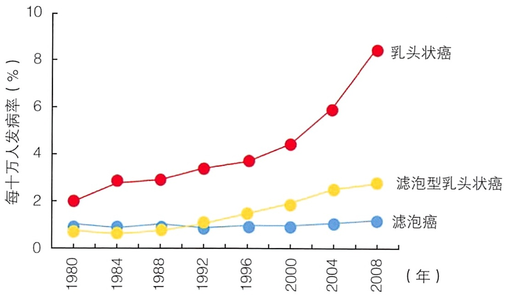
其他恶性度较高的髓样癌和未分化癌发病率极低，难以在图中标示，几十年来没有任何变化
在美国，甲状腺癌的发病率由1973年的3.6/10万上升至2002年的8.7/10万。上升的主要原因是由于微小乳头状癌的检出率的提高（图1-1-1）。甲状腺有大量的亚临床癌存在和稳定的总体病死率的事实表明：这一上升趋势反映了对亚临床甲状腺癌检出能力的提高，而不是甲状腺癌的实际发生率的提高。
常规尸检中的甲状腺癌的患病率是临床检出的 100～1000 倍。相对于临床可检出甲状腺癌，甲状腺微小癌非常常见，而且与碘摄入、性别无关，这些微小癌几乎均为乳头状癌。
Ito 等对一组微小乳头状癌的进行 5 年随访观察发现，只有 6.7% 的患者的病变大小增加，没有发生远处转移的和死于甲状腺癌的病例。作者认为对于 < 1cm
的微小乳头状癌，等到病变进展到出现临床症状后再行手术治疗并不晚，不会出现更差的预后。
甲状腺微小乳头状癌（PTMC）是指直径<1cm的甲状腺乳头状癌，某种程度上PTMC与隐匿性甲状腺癌是同义词。PTMC的患病率还不清楚，但有大量的尸检报告认为PTMC是非常常见的（大部分报告都在10%～20%，最高达40%）。Meta分析发现尸检患病率的高低与检查方法的仔细程度呈正相关，因此，实际的患病率可能更高。PTMC在病理上与出现临床表现的乳头状癌并无区别，现在更多的研究集中在分子水平，企图揭示PTMC发展成为临床水平乳头状癌的分子机制。Cyclin D1是其中最重要的一个分子标记物：93.3%的临床水平乳头状癌该分子过表达，只有12.5%PTMC过表达。
<1cm 的甲状腺乳头状癌定义为微小癌，对甲状腺微小癌的治疗，有病例对照研究表明，如果手术治疗的话，单纯的一侧腺叶切除足够了。甲状腺次全切是教科书上对甲状腺癌的标准手术方式，但对于微小癌来说这些观点未必正确。对于微小甲状腺癌的认识还远远不足。PTMC 的实际患病率并不清楚，因为绝大部分 PTMC 终身无症状。临床所见的 PTMC 绝大多数都是偶然检查发现的。根据多组尸体解剖研究：芬兰的一项研究的最高检出率高达 36%，日本的多项研究发现 PTMC 的尸体解剖检出率在 10% 左右。荟萃分析发现，尸体检查 PTMC 检出率的高低与病理切片认真程度和检查者的仔细程度相关，因此，实际的患病率可能更高。而对一组因非甲状腺疾患而切除的甲状腺组织的详细的病理学检查发现，约 20% 的甲状腺组织中检出了 PTMC。
常规尸检中的甲状腺癌的患病率是临床检出甲癌的100～1000倍。相对于临床型甲状腺癌，甲状腺微小癌非常常见，与碘摄入、性别无关，而且几乎均为乳头状癌。
Lin 等经过 10～15 年的随访研究发现，对于 PTMC 的治疗，手术类型（全切、次全切或单侧切除）、是否采取放射代谢治疗都不影响其良好预后，该作者认为对于没有转移的 PTMC，有限的治疗就足够了，采取单纯的一侧腺叶的切除是明智的选择。Bilimoria 等的 40 000 例病例总结也支持上述结论。
世界卫生组织（WHO）将甲状腺微小乳头状癌（papillary thyroid microcarcinoma，
3
PTMC）定义为：病变最大径线 ≤1.0cm，且不伴有局部淋巴结和（或）远处器官转移及甲状腺外侵犯的甲状腺乳头状癌。
PTMC 的预后极好。可以说与一般人群没有差别。在所有尸体检查检出的 PTMC 中没有一例是死于甲状腺癌相关疾病的。甲状腺乳头状癌极易发生淋巴结转移，约 1/4 临床病例伴局部淋巴结转移，甚至可能是本病的第一个临床表现，Grebe SK 等人的研究表明，伴有淋巴结转移的乳头状癌的预后并不比无淋巴结转移者预后差。
超声诊断和细针穿刺活检（FNA）技术广泛应用于甲状腺结节诊断，近20年来，甲状腺癌的发病率在世界各国都有显著地升高。绝大多数学者相信，这种升高趋势主要是由于检查技术的进步所致。这些升高的甲状腺癌几乎都是预后极好的乳头状癌或滤泡型乳头状癌，而预后较差的其他类型的甲癌发病率几乎没有变化（图1-1-1）。尽管检出了大量的早期癌、微小癌，但人群中甲状腺癌的死亡率却一直稳定不变，认为这些检查技术（主要是高分辨率超声检查）提供了甲状腺癌最佳治疗时机的想法不过是自欺欺人。
Ito 等对一组未经治疗的甲状腺微小乳头状癌进行了 5 年随访观察发现，只有 6.7% 的患者的病变大小增加，没有发生远处转移的和死于甲状腺癌的病例。作者认为对于 < 1cm 的微小乳头状癌，等到病变进展到出现临床症状后再行手术治疗并不晚。
在病理上，PTMC 与临床型乳头状癌并无区别，现在更多的研究集中在分子水平企图揭示 PTMC 发展成为临床水平乳头状癌的分子机制。Cyclin D1 就是其中最重要的一个分子标记物。93.3% 的有临床表现的乳头状癌该分子过表达，只有 12.5% PTMC 过表达。或许有一天仅需要抽一点血就可以判断哪个甲状腺癌需要积极干预，哪个甲状腺癌不用理他。
说明：临床型甲状腺癌是指临床可触及结节，伴有淋巴结转移和（或）远处转移、甲状腺外侵犯的甲状腺癌。
参考文献
1. Sobin LH, Wittekind C. TNM classification of malignant tumours. 6thdn. New York: Wiley-Liss, 2002.
2. Harach HR, Franssila KO, Wasenius VM. Occult papillary carcinoma of the thyroid: A “normal” finding in Finland: A systematic autopsy study. Cancer, 1985, 56(3): 531-538.
3. Lin HW, Bhattacharyya N. Survival impact of treatment options for papillary microcarcinoma of the thyroid. Laryngoscope 2009,119(10):1983–1987.
4. Bilimoria KY, Bentrem DJ, Ko CY, et al. Extent of surgery affects survival for papillary thyroid cancer. Ann Surg, 2007, 246(3): 375–381.
5. Davies L, Welch HG. Increasing incidence of thyroid cancer in the United States, 1973–2002. JAMA, 2006, 295(18): 2164–2167.
6. Kovács GL, Gonda G, Vadász G, et al. Epidemiology of thyroid microcarcinoma found in autopsy series conducted in areas of different iodine intake. Thyroid, 2005, 15(2):152–157.
7. Ito Y, Uruno T, Nakano K, An observation trial without surgical treatment in patients with papillary microcarcinoma of the thyroid. Thyroid, 2003, 13(4):381–387.
8. Lantsov D, Meirmanov S, Nakashima M, et al. Cyclin D1 overexpression in thyroid papillary microcarcinoma: its association with tumour size and aberrant beta-catenin expression. Histopathology, 2005, 47(3): 248–256.
9. Ito Y, Uruno T, Nakano K, An observation trial without surgical treatment in patients with papillary microcarcinoma of the thyroid. Thyroid, 2003, 13(4):381–387.
少时读三国，印象最深的就是常山赵子龙。长坂坡单骑救主，白盔白甲一骑白马的赵子龙于万军丛中几进几出十分显眼。
甲状腺中有一类结节，呈现明显的高回声，与周围的腺体组织相比十分显眼，恰如赵子龙于万军从中一样显眼，在英文中将这类结节称为 “white knight”
（“白衣骑士”）。这类结节周围通常没有“晕”，病理基础主要是浓缩的胶质或桥本结节（图1-2-1，图1-2-2）。这类结节几乎没有恶性可能，因此，无须临床干预。
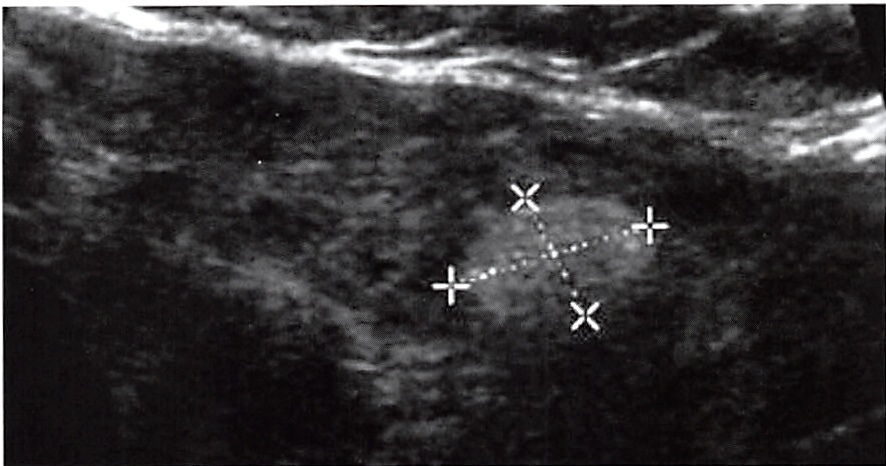
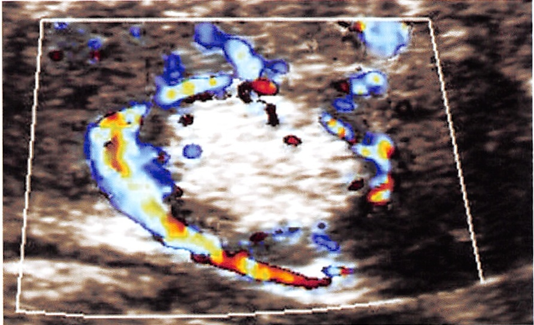
说明：“白衣骑士”结节是指纯粹的高回声结节，周边没有低回声晕，内部不存在任何局灶性低回声区或钙化的结节，后方没有回声增强或衰减。类似图1-2-3中的高回声结节，称为“滤泡样结节”，这类结节一般是滤泡类肿瘤，有2%～5%的可能是恶性结节，主要是滤泡癌或滤泡性乳头状癌，因此，此类结节较大者一般需要择期手术治疗。
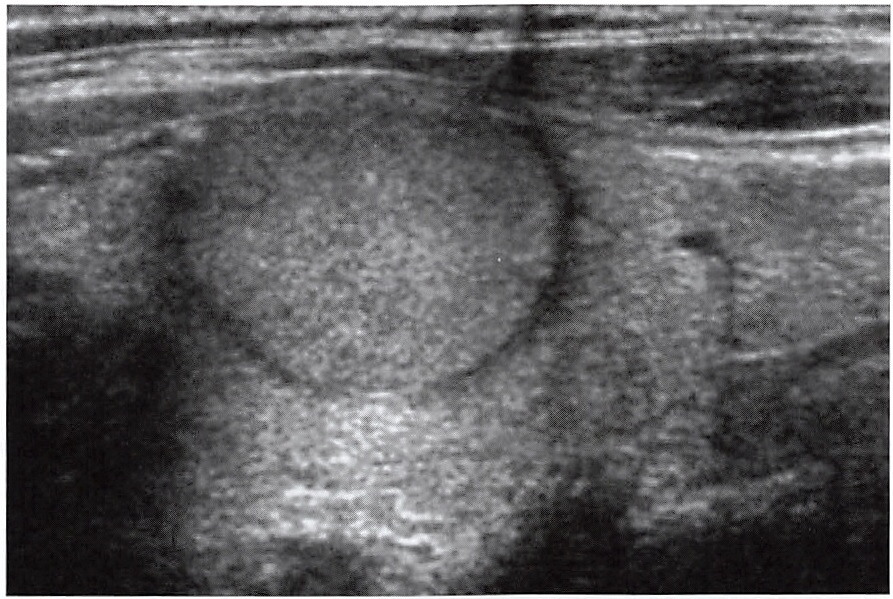
长颈鹿除了有一个特征性的长脖子外，身上被白色细带分隔成大小不一的不规则形的花纹更是独一无二。
有一类甲状腺结节内会出现类似长颈鹿花纹一样的改变(图1-3-1，图1-3-2)。结节被细带状低回声分隔成大小不一的不规则形状，把这类结节叫作“长颈鹿状结节”（giraffe nodule）。“长颈鹿状结节”是良性结节，一般无须穿刺和手术。
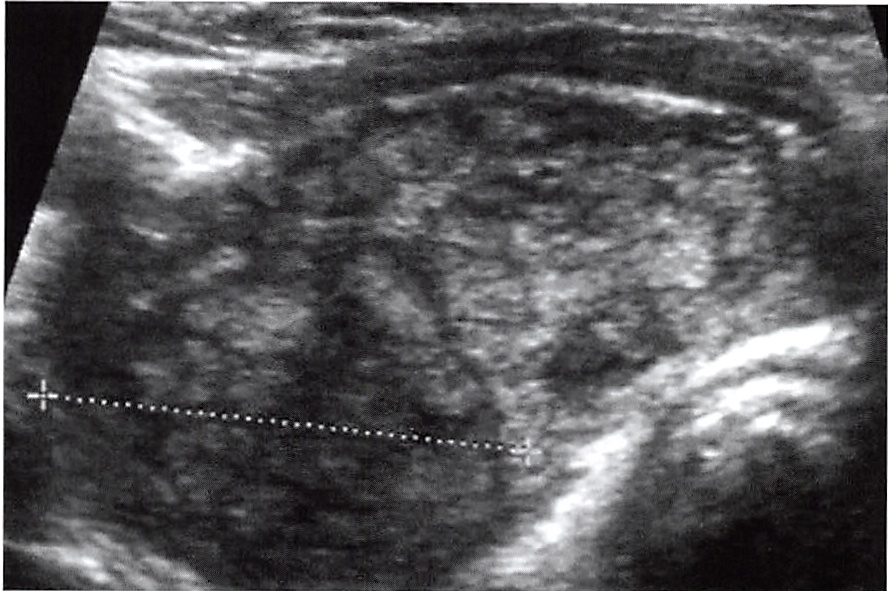
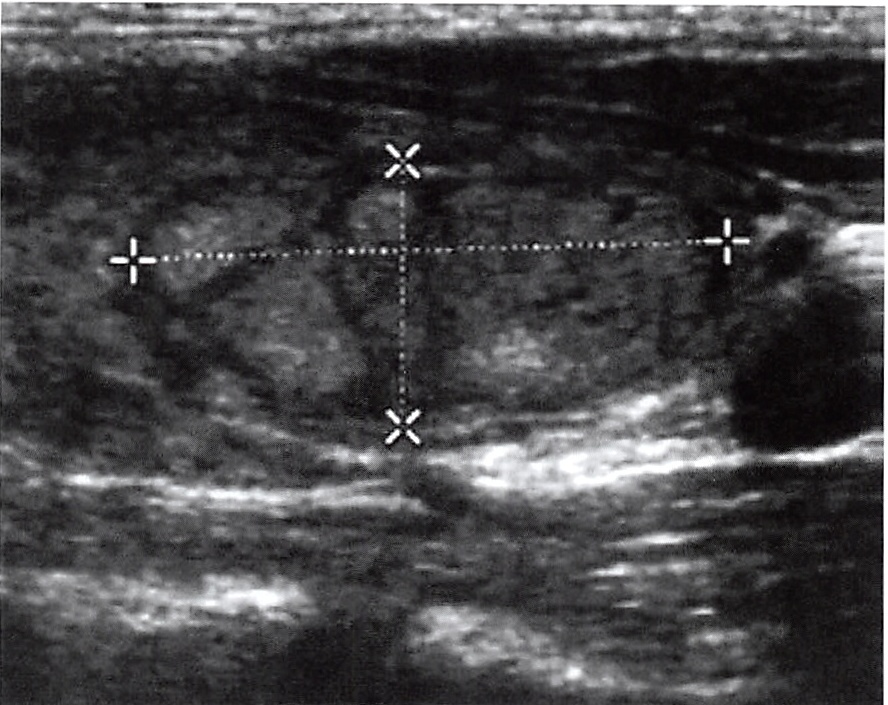
问：“长颈鹿状结节”的病理基础是什么？
答：此类结节几乎都是桥本甲状腺炎的一部分。
海绵宝宝是大家喜闻乐见的动画形象。为人乐观并开朗，却相当神经质，故时常惹出麻烦。
甲状腺内常常可见一类结节，声像图内部呈现“海绵样”改变（图1-4-1）。一般认为甲状腺结节内的“海绵”部分占结节的比例＞50%者，结节几乎都是良性的，无须临床干预。因此，无论医生还是患者，遇到此类结节，都应该保持无所谓的态度，切不必如“海绵宝宝”一般神经质！
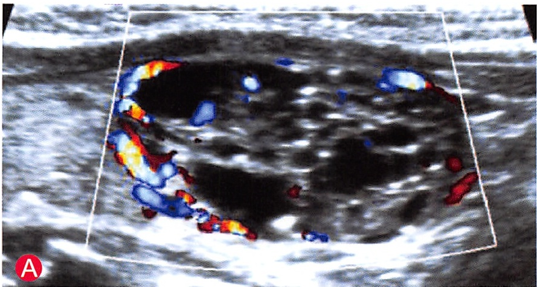
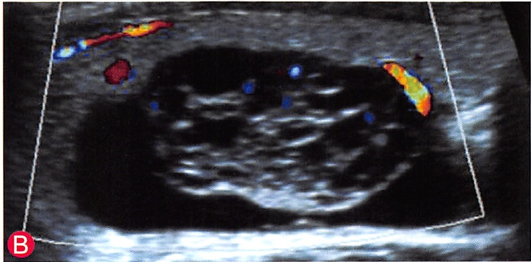
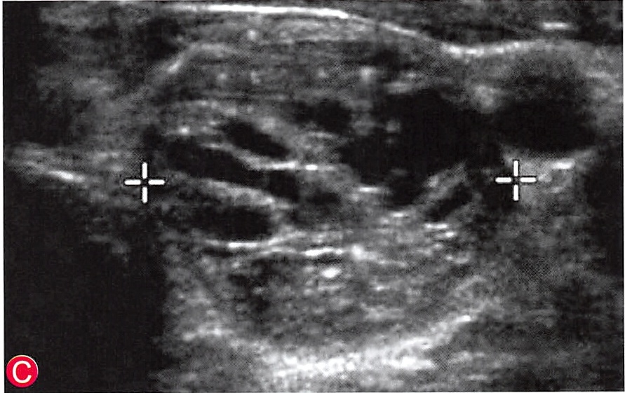
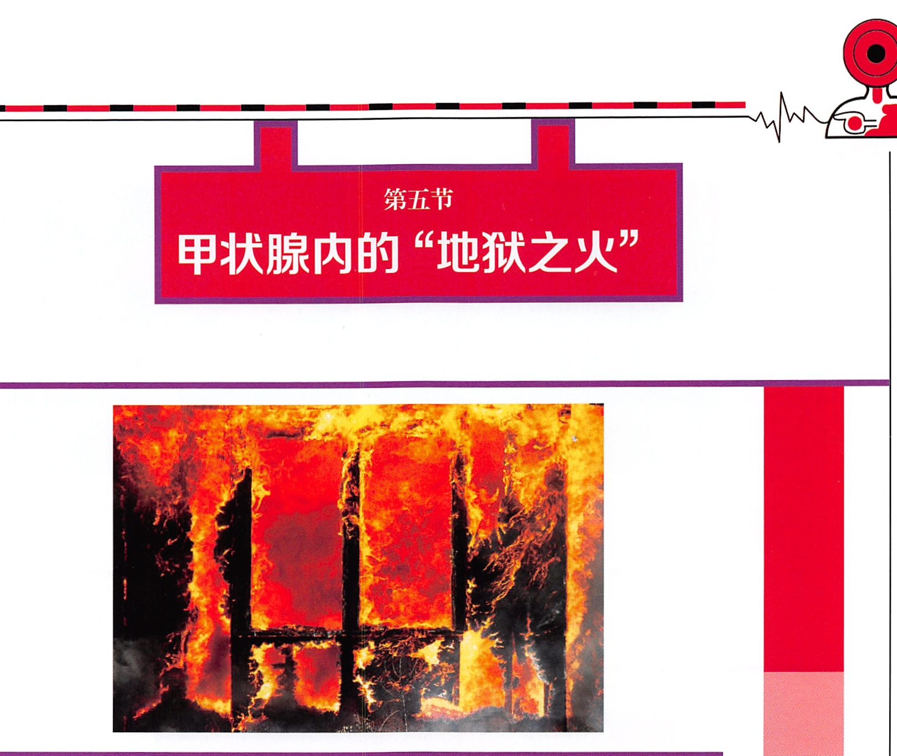
意大利中世纪时期著名诗人但丁的叙事长诗《神曲》第一部分叫 “Inferno”，“Inferno” 是意大利语 “地狱” 的意思。在这一部分中，但丁把地狱描述为整日大火缭绕之地。
1988 年早期的超声先驱者 Ralls PW 等人发现在甲状腺功能亢进患者中，利用彩色多普勒超声显示甲状腺内部充满血流信号，他们选择 “Inferno” 这个词来描述这一现象。国内有创意的超声前辈形象地把这一词汇翻译为 “火海征”。
解放军总医院第一附属医院傅先水教授发现，甲状腺内有一类边界清晰的低回声结节，利用彩色多普勒超声检查时，结节内部充满彩色血流信号，傅教授称之为“局灶性火海”（focal Inferno）。研究发现几乎所有表现为“局灶性火海”的低回声结节都是良性的，是桥本病局灶性桥本病的一种特殊表现。出现这种表现的结节可以直接诊断为局灶性桥本病（图1-5-1）。对于这一类结节，如果没有甲状腺功能异常者，无须临床干预。
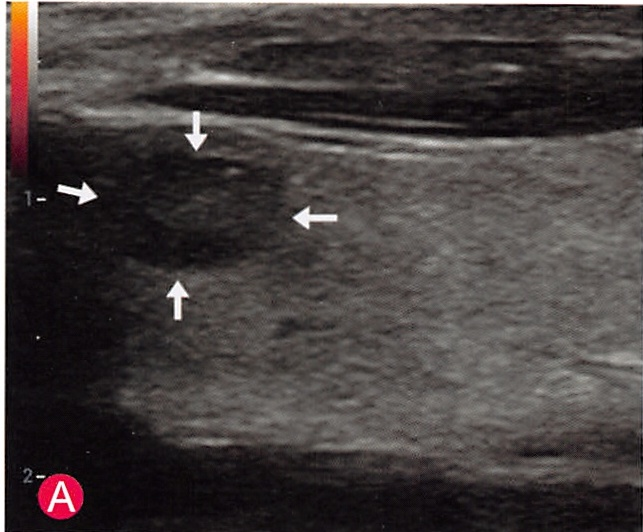
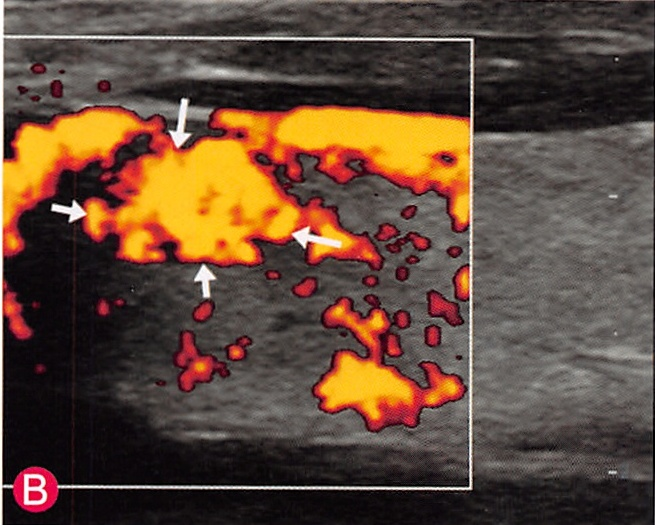
彗星是夜空中最诱人遐想的奇异景象。
结晶体的特殊结构使得超声波通过时，声束发生多重反射，从而在该晶体后方出现彗星尾一样的强回声，这就是大家常说的“彗星尾征”。
甲状腺内的胶质囊肿胶质浓缩后会有晶体析出，析出的晶体悬浮在囊肿内，超声扫查时就会出现明显的彗星尾征。因此，“彗星尾征”强回声可以作为甲状腺良性结节的一个标志。
图 1-6-1 显示的结节是典型的胶质囊肿，多见于 20 多岁的年轻人，随着年龄的增大，大部分结节会消失，小部分可能会发展成增生结节。

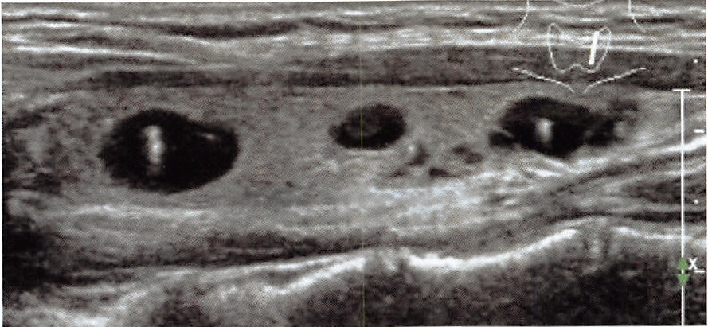
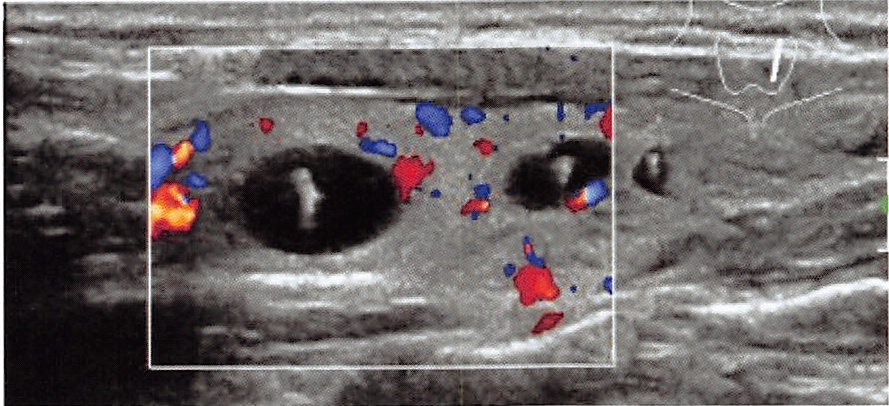
（来源：杭州市中医院超声科）
MINNPOST
HOME POLITICS & POLICY HEALTH EDUCATION ENVIRONMENT ARTS & CULTURE BUSINESS
Second Opinion
This content is made possible by the generous sponsorship support of UCare.
Thyroid cancer is overdiagnosed and overtreated, say Mayo doctors
By Susan Perry | 08/28/13
Tweet
根据罗彻斯特的梅奥诊所三位医生的一项研究分析：新的成像技术已导致甲状腺癌的过度诊断现象的发生，让成千上万的人暴露于不必要的、昂贵的和有潜在风险的治疗中。在美国问题尤为严重。（笔者注：在中国情况也不容乐观！）
因为他们的这些忧虑，梅奥诊所的医生建议使用一个新的术语用来描述那些低风险的甲状腺病变，将更好地传达这样的信息：这些病变对患者的健康仅仅有极小风险，这将引导患者和医生远离不必要的治疗。
Juan Brito 医生（内分泌专家，本项研究的作者之一）说：“需要重命名它们，需要把它们放在一个不同的类别。” 这项研究发表在最新一期的《英国医学杂志》。
（二） 一个令人费解的现象：诊断率大幅上升
在过去的30年里，甲状腺癌病例的发病率在美国增加了两倍，从1973年的每10万人3.6例到2009年的11.6例。
“这使甲状腺癌成为增长最快的癌症之一” Brito 说。“已经观察到全球发病率不断上升，但分布不均匀，”他补充说，“瑞典、日本和中国的这一特定癌症的发病率逐步升高。”
此外，几乎所有的新的被诊断出的甲状腺癌病例（90%）是所谓的微小乳头状癌，研究显示这类肿瘤的生长非常缓慢，不会出现症状，也几乎不会导致死亡。
这一因素最可能解释 “为什么甲状腺癌的死亡率保持不变而新乳头状甲状腺癌的诊断飞涨” 这一现象。
（三） 增长背后的关键因素
Brito 和他的同事们，John Morris 医生和 Victor Montori 医生，在他们的论文中解释，更多的乳头状癌的诊断的出现，是因为高科技成像技术的进步，如超声、CT 和磁共振成像（MRI）的广泛使用，现在可发现小至 2mm 的甲状腺结节。
另一个因素是报销政策，这些政策鼓励医生使用这些技术，在美国，颈部超声检查自1980年以来增加了至少80%。
研究还表明，高收入的美国人相对于比收入水平较低的美国人，尤其是那些有健康保险的人，更有可能被诊断为甲状腺癌。
“这些技术的易用简便性和这些技术的滥用的驱动导致过度诊断现象的发生。” Brito 说。
（四） 不必要的治疗
Brito 和同事们在他们的论文中指出：过度诊断常常会导致过度治疗，包括不必要的手术。事实上，在美国，甲状腺切除术的数量（手术、全部或部分甲状腺切除术）在 1996—2006 年上涨了 60%。
甲状腺切除术费用昂贵，而且可能会出现几个严重、永久性的并发症，包括喉部神经损伤。全甲状腺切除术的患者，甚至，在某些情况下，部分切除术的患者必须在余生中采取甲状腺素替代疗法，这一治疗本身就具有健康风险。
在美国，放射性碘治疗也被越来越多用来治疗低风险的甲状腺乳头状癌。1973年每300名甲状腺癌患者才有一例接受放射性碘治疗。而在2006年，这个数字增加到2/5。然而，指南中并不推荐放射性碘治疗低风险患者甲状腺癌。这些相关治疗降低了患者的生活质量，并有引发其他类型癌症的风险，包括白血病和唾液腺的癌症。
（五） 需要新的术语
Brito 和他的同事们承认，可能有一些不确定的原因导致甲状腺癌的发病率忾的快速上升，如 CT 扫描的广泛使用导致核辐射暴露。但发病率和死亡率之间的差异和不同国家发病率的不均匀上高提示过度诊断才是甲状腺癌发病率飙升背后的原因。
他们呼吁医生、患者共同参与决策，并向患者解释：在许多情况下，积极监测而不是手术治疗才是甲状腺癌最合适的管理手段。
“患者可以放心，有证据表明结节表现出更多的攻击性行为时，再行治疗并不会造成治疗上的延迟。”作者在文章中写到。
他们还建议使用 “小乳头状病变” 来重新命名那些处于休眠期的甲状腺乳头状癌，这能更准确反映出它们带给患者的极小的健康风险。
大多数甲状腺癌的发现 “不是必然对患者造成风险，” 布里托说：“通过拿掉癌症这个标签，可以重新架构管理这些疾病的级别，减少患者对癌症的焦虑程度。”
由布里托和他的同事们发表的研究可以在《英国医学杂志》的网站查阅。
（来源：MinnPost 新闻网站）
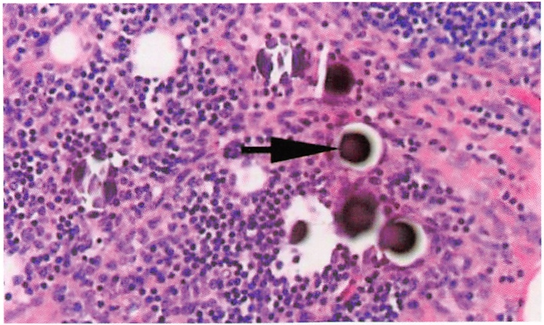
箭头：圆形的砂粒体（HE， × 100）
超声检查甲状腺时发现病变内的微小钙化具有重要的鉴别意义，一般伴有微钙化的病变多是甲状腺乳头状癌（图1-8-2）。
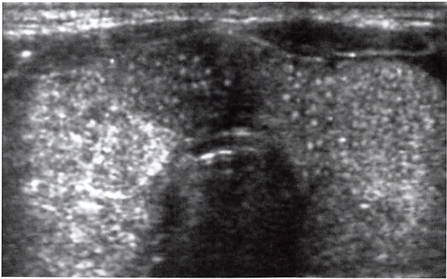
这些微钙化本质上是肿瘤内的砂粒体（psammoma bodies）。砂粒体本身是一个显微镜下看到的圆形钙化。psammoma 这个词来源于希腊语 psammos，意思为“沙子”。砂粒体的形成与组织形态学上具有乳头状改变的病变相关。一般认为为来自乳头状突起末梢的梗死、钙化以及淋巴管内的瘤栓的钙化。
砂粒体通常有表现为同心圆多层状，呈圆形，包括非细胞性和嗜碱性两种类型（图1-8-1，图1-8-3）。
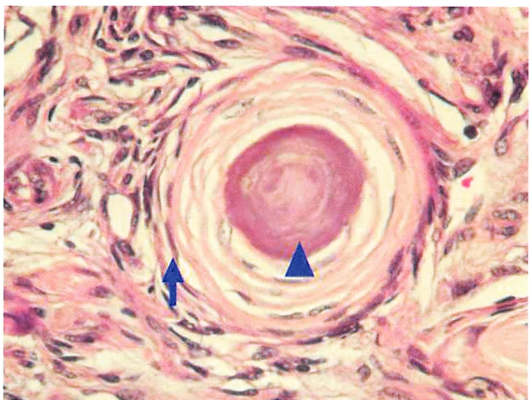
长箭头：纤维包膜；三角箭头：钙质核心（HE，×100）
相关病变
砂粒体常见于某些特定的恶性肿瘤，如甲状腺乳头状癌，乳头状肾细胞癌，肺腺癌微乳头亚型，卵巢乳头状浆液性囊腺瘤、囊腺癌，子宫内膜腺癌（乳头状浆液性癌3%～4%），脑膜瘤、中枢神经系统，腹膜、胸膜间皮瘤，生长抑素瘤（胰腺），垂体泌乳素瘤。
其他一些良性病变内也可见到砂粒体，如输卵管内膜异位、黑素细胞痣。
直到今天，国内很多超声诊断专著包括最经典的《超声医学》中介绍到亚急性甲状腺炎是都会提到一个征象——“冲洗过征”（也有称为“假囊肿征”）。很多网站论坛也常常不加分辨地引用。
但是，实际工作中遇到的经典的亚急性甲状腺炎的声像图却一般（图1-9-1），病变甲状腺内出现的是片状的、没有边界的低回声区。很显然，这些低回声区很难和“冲洗过”“假囊肿”特征联系起来。
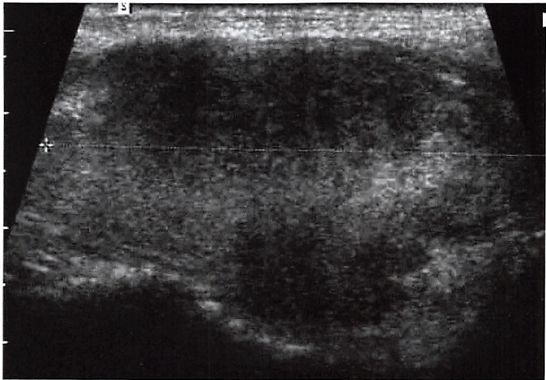
那么，问题出在哪里呢？
其实，“冲洗过征”（“假囊肿征”）最早出现在20世纪80年代的一篇关于“亚急性甲状腺炎的超声检查”的文献中（来源：Radiology）。原文作者利用当时的仪器发现亚急性甲状腺炎的病变区呈现为没有边界的无回声区，恰似被冲洗过一般。
那个年代的超声仪器与如今的超声仪器不可同日而语，受储存器的限制（<4 bit），当年的超声仪器的对比分辨率多 ≤16灰阶。而如今超声仪器的储存器都至少在6 bit以上（有的甚至 ≤12 bit），灰阶分辨率至少能达到64个灰阶。
灰阶分辨率低的情况下，回声差别接近的一系列回声强度的信号就会作为一种灰阶表示出来。因此，在亚急性甲状腺炎的情况下，那些接近无回声的极低回声病变区在灰阶分辨率较低的仪器上就会都表现为无回声（图1-9-2，该图是图1-10-1经过灰阶压缩处理过而成）。这就是所谓的“冲洗过征”（“假囊肿征”）。
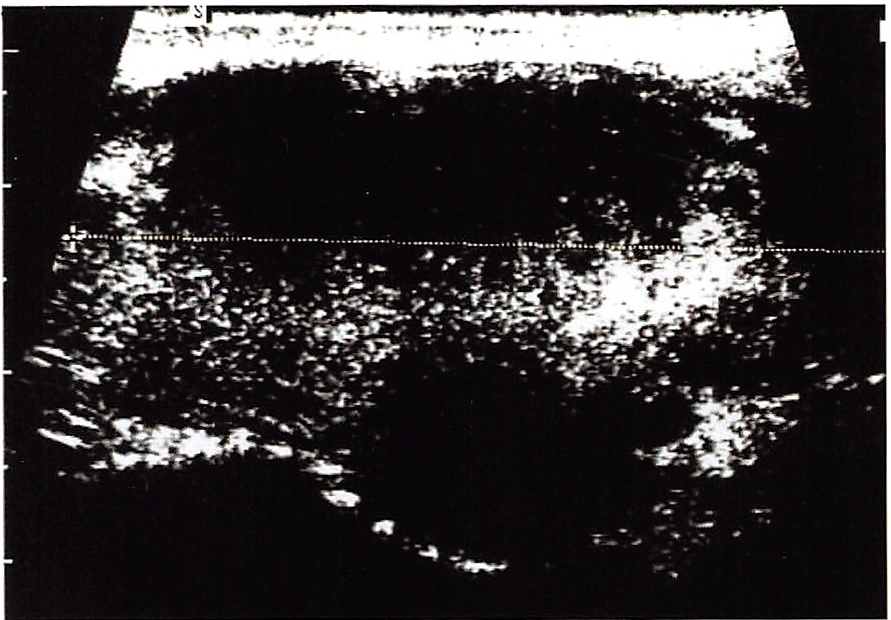
问：在检查甲状腺过程中，发现许多患者甲状腺内侧气管外侧有低回声团（图1-10-1，图1-10-2），请问这是什么结构？
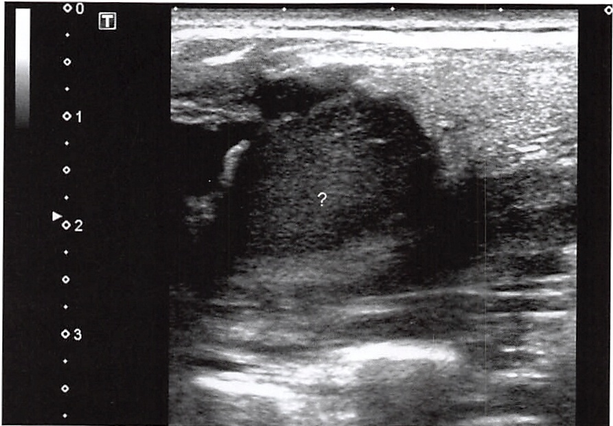
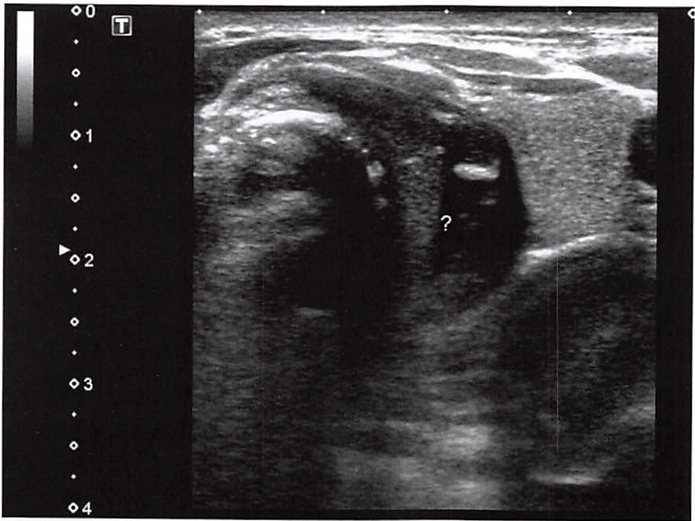
答：环状软骨和环甲肌。解剖结构见图 1-10-3。
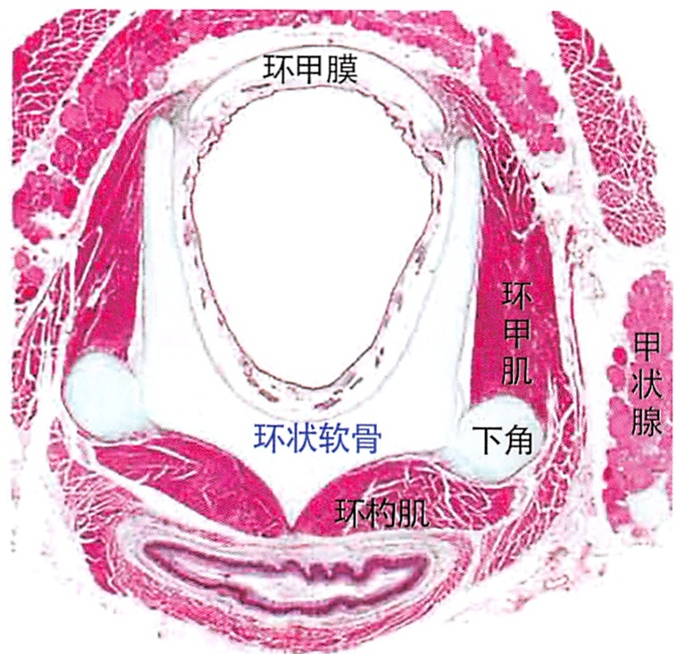
声像图特征见图 1-10-4 和图 1-10-5。
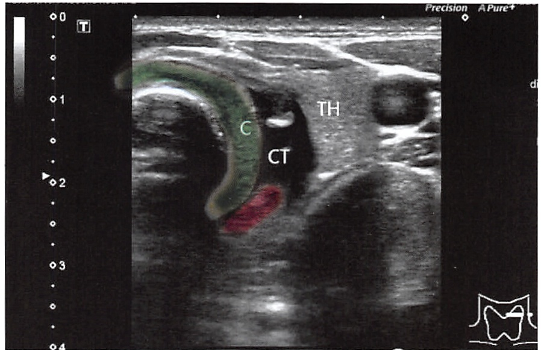
绿色阴影区：环状软骨（C）；红色阴影区：甲状软骨下角；CT：环甲肌；TH：甲状腺
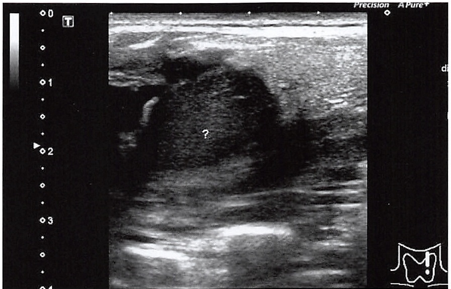
（该病例由网友“whj”提供）
问：众所周知，甲状腺结节内的点状强回声后方如果伴有彗星尾，提示这样的强回声是良性的（图1-11-1）。那么，甲状腺结节内的这些伴有彗星尾的点状强回声的病理成分上是什么呢？
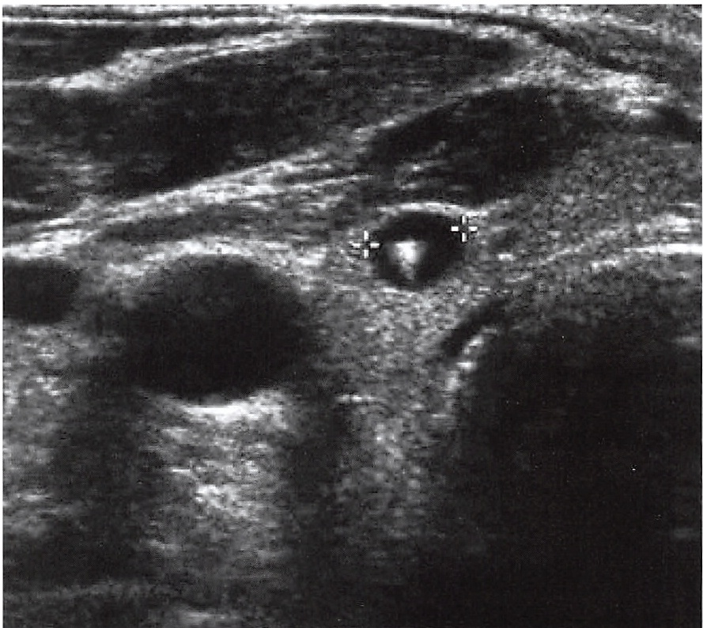
答：胶质并且有结晶。
甲状腺滤泡内的成分是一种胶体，胶体一般是指分散相颗粒的特征尺度介于 1,nm ∼ 1,mu m的分散系，由于介质的不同分为气溶胶（如烟、雾等）、液溶胶（如血液）和固态溶胶（如有色玻璃）。甲状腺滤泡内的胶体是一种液溶胶，是典型的固液分散体系，是由固态的胶体粒子（或胶粒）均匀分散于连续的液态介质而形成的胶体分散体系。
甲状腺滤泡内的固态小颗粒是甲状腺球蛋白。甲状腺球蛋白是一种碘化糖蛋白，为同源二聚体，相对分子质量约为660kDa。人甲状腺球蛋白由2767个氨基酸残基组成，是体内碘在甲状腺腺体的贮存形式。甲状腺球蛋白是由甲状腺滤泡上皮细胞合成，甲状腺球蛋白能够在促甲状腺激素（TSH）的调控下被滤泡上皮细胞重吸收，经水解可生成甲状腺素和三碘甲原原氨酸。
由一种或多种胶体粒子组装并规整排列而成的二维或三维有序结构称为胶态晶体（colloidal crystals）。胶态晶体与普通晶体在结构上十分相似，只是胶态晶体中占据每个晶格点的是具有较大尺度的胶粒，而不是普通晶体中的分子、原子或离子。
甲状腺滤泡增生后，会导致生成的大量胶体潴留，其中的甲状腺球蛋白不能及时被利用，含量逐渐增高，长期潴留的甲状腺球蛋白就会逐渐以化学键的形式连接组装成胶态晶体。这些甲状腺球蛋白胶态晶体就是超声声像图出现的伴有彗星尾的点状强回声。
现在，大家已经知道很多晶体结构后都会出现彗星尾，比如胆固醇结晶、胶态结晶、草酸钙结晶等。
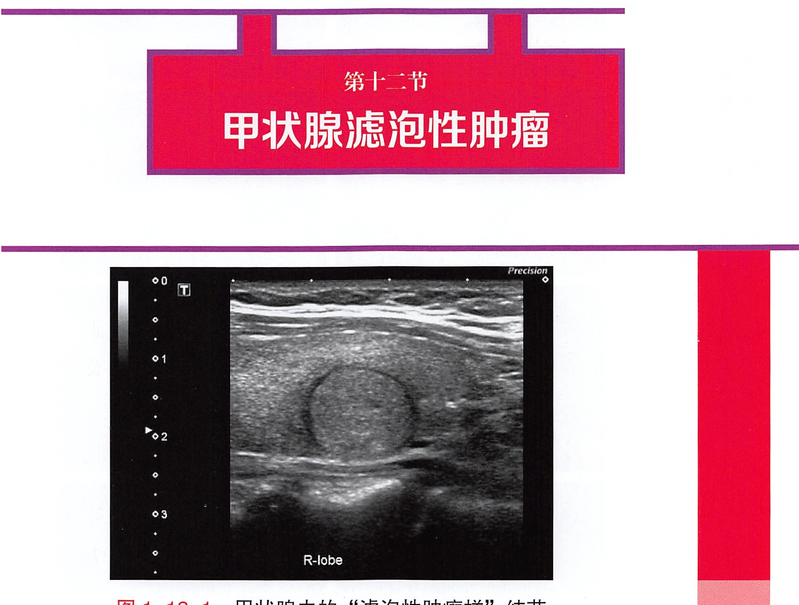
（图片来源：上海交通大学医学院附属瑞金医院）
图 1-12-1 中的甲状腺内的结节回声类似于睾丸实质的回声，一般认为是滤泡状腺瘤的回声特征，常给造成诊断上的困扰，暂且把这类结节称为 “滤泡性肿
“瘤样”结节。按照上海交通大学医学院附属瑞金医院的分析结果：这一类结节75%为良性，25%为交界性或恶性。而国外的研究表明：此类结节中，约20%为恶性或具有恶性倾向（图1-12-2）。
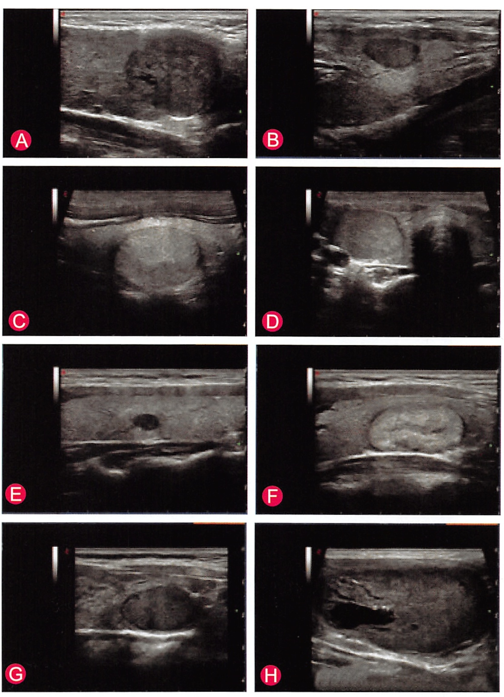
A. 乳头状癌；B. 髓样癌；C. 滤泡性乳头状癌；D. 生物学行为不定；E. 腺瘤样甲状腺肿；F. 结节性甲状腺肿；G. 桥本伴腺瘤样结节；H. 腺瘤
滤泡性腺瘤、滤泡性腺癌、甲状腺结节腺瘤样增生、桥本结节、髓样癌、滤泡性乳头状癌等都可以表现出类似的超声特征。
其中，滤泡性腺癌的诊断最为困难。滤泡癌与滤泡性腺瘤、腺瘤样增生在病理上的区别微乎其微。唯前者核分裂象略常见，但核分裂象的有无与是否诊断为滤泡癌无关。滤泡性肿瘤诊断为滤泡癌主要根据为是否出现被膜、血管及邻近甲状腺组织的侵犯。根据浸润程度，将滤泡癌分为微小浸润性癌和广泛性癌。微小浸润性滤泡癌的诊断受人为因素的干扰很大，因为被膜的破坏有可能是外伤或肿瘤组织的疝。小浸润性癌几乎不会发生转移，因此有许多病理学家主张：微小浸润性癌不应称为“癌”。甚至，对于广泛浸润性癌，如果符合三个条件可以不诊断为“癌”：①没有血管浸润；②缺乏乳头状癌细胞核特征；③肿瘤细胞为高分化。由此看来，根据所谓的甲状腺结节内部回声异常做出的“滤泡癌”的诊断都是无稽之谈。
病理上乳头状癌和髓样癌都不属于滤泡性肿瘤。在病理上各种滤泡性肿瘤的差别微乎其微，其结论常常受到病理医生的主观影响。一个孤立的结节性甲状腺肿结节和一个腺瘤甚至一个微小浸润性滤泡癌在其内部结构上几乎没有区别。因此，记住一点：穿刺病理不能用于鉴别各种滤泡性肿瘤。穿刺病理不能分辨甲状腺滤泡性肿瘤的良恶性，如果运气好的话粗针组织学可能会发现一些滤泡癌的证据。因为滤泡性肿瘤的良恶性仅仅是靠肿瘤是否浸润基膜和血管来鉴别，穿刺病理不能提供这些信息！但，穿刺病理能够检出这一类病变中的乳头状癌和髓样癌。
此类结节，有如此高的恶性率，应该高度重视：一般情况下应该建议直接行单侧甲状腺切除术，根据术后的石蜡切片做出最后诊断并确定下一步治疗的方案（术中冰冻切片也无法分辨滤泡癌和良性滤泡性肿瘤）。
此类结节如果在声像图上出现以下征象提示病变需要更加积极处理：
（1）钙化，无论大钙化还是微小钙化；
（2）单发；
（3）边缘晕不规整。
而结节伴有以下特征可以视为更具有良性倾向：
（1）多发，双侧甲状腺内有多个同类结节；
（2）蜂窝样变，结节内出现较大范围的蜂窝样回声为良性病变的特征；
（3）均匀完整的边缘晕。
27
问：日常检查中，经常在甲状腺背侧和下极周围看到一个或数个椭圆形的高回声结节（图1-13-1），这是什么？
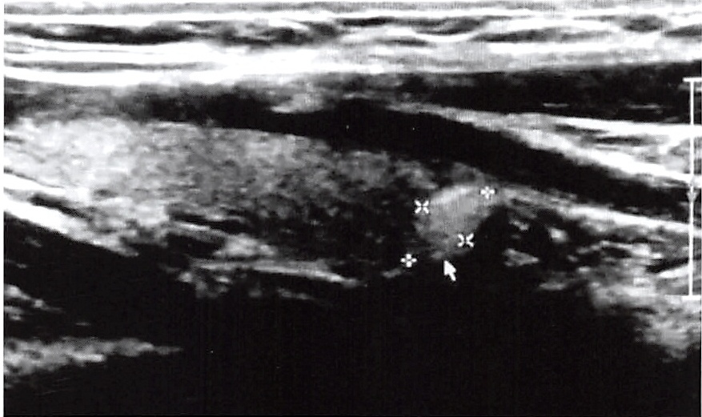
（该图由网友“韩杰斌”提供）
关于这些强回声结节，有几种说法：一种说法认为是异位的甲状腺组织，一种说法认为是正常的甲状旁腺，还有人认为是沉积的脂肪团。
有研究者对这些强回声结节进行细针穿刺证实，这些高回声团块确实是甲状旁腺。
可是，绝大部分个体的甲状旁腺回声与周围组织差不多，不能清晰分辨。为什么这些人的甲状旁腺回声如此之高？甲状旁腺回声增高有临床意义吗？
组织学家发现，甲状旁腺体内除了正常功能细胞外，都含有不等量的脂肪（图1-13-2）。文献报道，尸体解剖发现甲状旁腺中脂肪含量在17%～50%。脂
肪含量的多少与甲状旁腺的功能有很大相关性，当甲状旁腺功能亢进时，脂肪含量会明显减少。甚至有很多病理学家是依靠腺体内脂肪含量的多少来判断甲状旁腺是否存在增生，而不考虑腺体的大小。他们认为腺体内脂肪含量＞50% 才是正常的腺体，脂肪含量＜50% 者，都存在不同程度的甲状旁腺增生。
值得注意的是，与其他器官随着年龄增加脂肪含量越多不同，老年人甲状旁腺中的脂肪含量低于年轻人甲状旁腺中的脂肪含量。
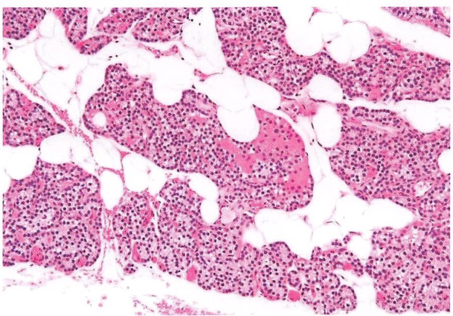
一般的“健康人”的钙磷代谢都依靠甲状旁腺适度的增生来调节，此类“健康人”的甲状旁腺中脂肪含量也处于一个适度的状态；极少数钙磷代谢十分稳定的个体，甲状旁腺处于所谓的“正常状态”，这些人的甲状旁腺中的脂肪含量就会非常高；而那些存在明显钙磷代谢障碍的患者则会发生甲状旁腺增生，最初的表现就是腺体内脂肪含量的显著减少。
大家知道，腺体内脂肪含量的多少与回声强弱的关系十分密切。脂肪含量较多时，呈现为较高回声，脂肪含量较少时，呈现为较低回声。
在通常情况下，“正常”的甲状旁腺内含有适量的脂肪，其回声恰好与周围组织差不多，因此，不太容易分辨。一些钙磷代谢极其稳定的“正常”个体中的
脂肪含量会非常高，这些个体的甲状旁腺就会表现为很容易分辨的高回声。而当甲状旁腺的回声呈现为低于周围组织的低回声时，说明腺体内的脂肪含量比较少，这时无论腺体有多大，都应该考虑甲状旁腺增生了。
因此，笔者认为：日常工作中发现的甲状腺周围的这些高回声结节是极其正常的甲状旁腺，不用关注，也无须在报告中提示。而早期甲状旁腺增生的诊断主要依靠回声的减低而不必考虑腺体的大小。
美国内分泌学会（ENDO）联合美国临床内分泌医生协会（AACE）发布了医生的五项“明智选择”建议，其中第三条内容：如果甲状腺触诊无异常，对于甲状腺功能检查异常的患者不要常规进行甲状腺超声检查。理由：通过超声检测到的结节通常与甲状腺功能异常无关，并且可能使临床评估偏离甲状腺功能异常，转移到对结节的评定。
之前笔者对这一建议还没有直观感受，直到一位20多岁的男性患者来诊。
该患者家住武汉，因为体检发现 TSH 水平升高而在医生建议下做超声检查，结果发现右侧甲状腺下面有一个小的低回声结节（图 1-14-1）。当时的超声医生认为该结节有一定的恶性可疑征象，遂建议细针穿刺活检。
此后，患者就开始了反复的全国各地的就诊。两年间分别在武汉、上海、广州、北京等地的10多家知名医院反复就诊。中间还曾经两次行细针活检，均为阴性。这次又慕名来到北京清华长庚医院找甲状腺专家罗斌教授就诊。在反复的就诊过程中，患者精神处于高度的焦虑状态。
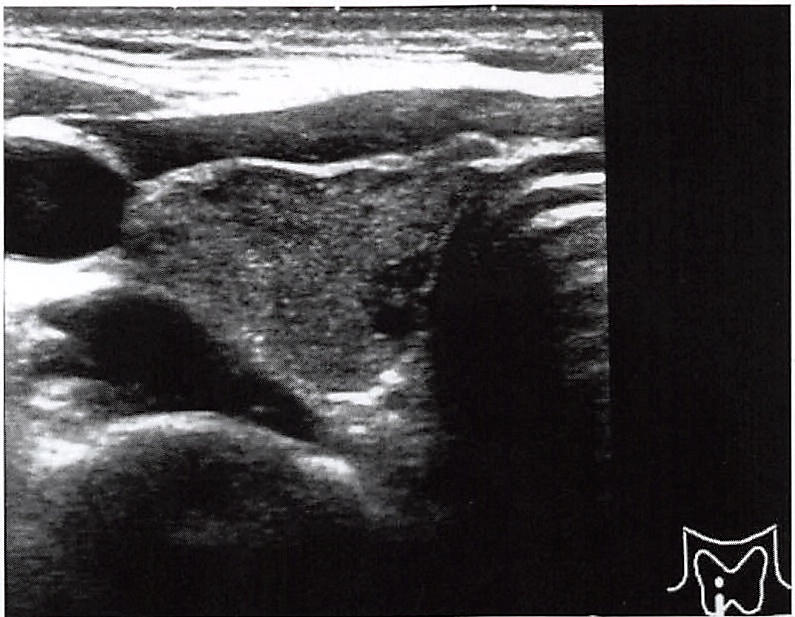
超声检查的高灵敏度和高分辨率再加上甲状腺超声的滥用，使得大量无临床意义的结节（包括甲状腺微小癌）被检出，事实上这些结节（包括甲状腺微小癌）绝大部分对患者的危害甚小，可能根本无须处理，但很多患者却因此背上了沉重的精神负担。尤其是那些具有一些可疑恶性征象的小结节对患者的精神危害更大。由此造成了极大的过度诊断和过度治疗的问题。
鉴于甲状腺小结节的及早检出未必会对患者带来足够的益处，很多学者开始提出“是不是该关掉超声机器”的时候了（来源：Cronan JJ. Thyroid nodules: is it time to turn off the US machines? Radiology, 2008, 247(3):602–604.）。至少，不要也不应该把甲状腺超声作为一种常规筛查项目来使用，而应该仅仅在有足够病史、症状及体征支持的情况下才使用超声检查甲状腺！
当超声大夫还在孜孜不倦地研究甲状腺良恶性结节鉴别特点，沾沾自喜于自己高超的小结节穿刺技巧的时候，国外研究者却早已经提出：“对于甲状腺结节：是不是到了该关掉超声机器的时候了？”——关于甲状腺结节，认识上的差距有多大？（来源：Cronan JJ.Thyroid nodules: is it time to turn off the US machines? Radiology, 2008, 247(3):602–604.）。
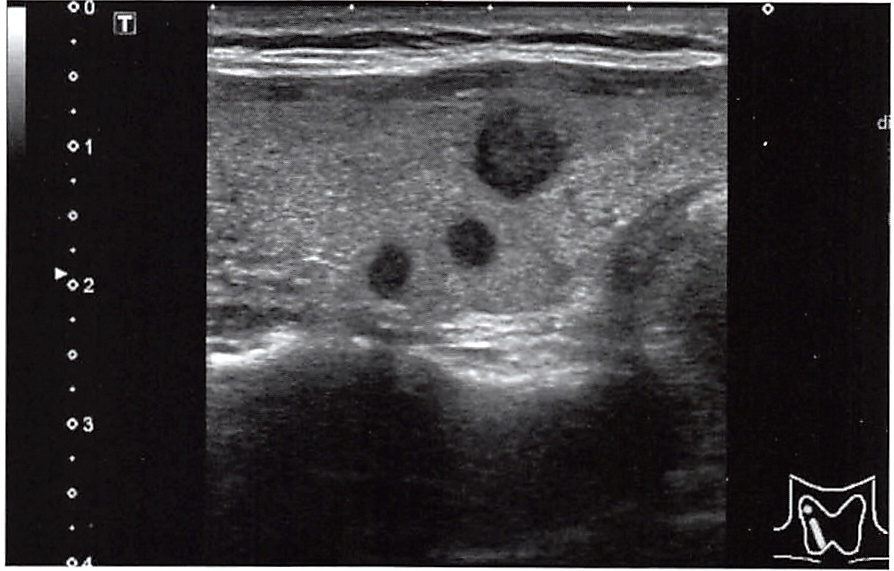
甲状腺乳头状癌常常表现为在甲状腺内同时出现多个病灶（图1-15-1）。过去认为这些多发病灶是由于甲状腺乳头状癌单一起源并经甲状腺内的淋巴系统在甲状腺内的转移所致。但是最新的分子生物学的证据表明，这些多灶性的甲状腺乳头状癌一般都是独立起源的。
多中心起源是甲状腺乳头状癌最重要的生物学特征之一。根据研究方法的不同，文献报道其发生率在18%～87%（没有看错，是87%！）。越是详细认真的病理分析，得到的发病率越高。
绝大部分的多中心甲状腺乳头状癌都是术后仔细的病理分析得出的，很多小的病灶甚至 ≤1mm。术前影像学发现的多灶性病变并不多见。提示：有很多小的病灶是目前的影像学手段不能够发现的。
正是由于甲状腺乳头状癌的这种多中心发生的特点，传统的甲状腺乳头状癌的手术方式都是甲状腺全切或次全切除。不过，随着人们对甲状腺乳头状癌特别
是微小癌的认识增多，也有很多机构开始采取仅对发现临床可见癌的一侧甲状腺做甲状腺单侧切除术，同时对侧做严密的术后监测。到目前为止，没有任何一个研究支持，甲状腺乳头状癌可以采用局部切除或局部消融的方法来治疗。
目前，已经开展甲状腺结节消融治疗的国家和地区几乎都将甲状腺结节的局部消融治疗局限在良性结节和甲状腺术后难以再行手术的复发性癌。在开展甲状腺结节消融治疗比较广泛的韩国，更是严格规定：甲状腺结节的局部消融治疗必须是经过两次以上的FNA确诊为良性结节后才可以施行。
有报道发现，甲状腺乳头状癌行消融治疗后出现癌结节扩大并向甲状腺被膜外扩散。另一篇报道则发现甲状腺乳头状癌行消融治疗后出现针道种植转移的现象。
因此，笔者认为：针对甲状腺乳头状癌，由于消融治疗具有出现被膜外扩散和针道转移的风险且甲状腺乳头状癌具有多中心发生的特点，因此，不提倡采用局部消融的方法进行治疗。
参考文献：
1. Carcangiu ML, Zampi G, Rosai J. Papillary thyroid carcinoma: a study of its many morphologic expressions and clinical correlates. Pathol Annu, 1985, 20 Pt 1:1 - 44.
2. Hawk WA, Hazard JB. The many appearances of papillary carcinoma of the thyroid. Cleve Clin Q, 1976, 43(4):207 - 215.
3. Iida F, Yonekura M, Miyakawa M. Study of intraglandular dissemination of thyroid cancer. Cancer, 1969, 24(4):764 - 771.
4. Katoh R, Sasaki J, Kurihara H, et al. Multiple thyroid involvement (intraglandular metastasis) in papillary thyroid carcinoma: a clinicopathologic study of 105 consecutive patients. Cancer, 1992, 70(6):1585 - 1590.
5. Russell WO, Ibanez ML, Clark RL, et al. Thyroid carcinoma: classification, intraglandular dissemination, and clinicopathological study based upon whole organ sections of 80 glands. Cancer, 1963, 16:1425 - 1460.
6. Tscholl-Ducommun J, Hedinger CE. Papillary thyroid carcinomas: morphology and prognosis. Virchows Arch A Pathol Anat Histol, 1982, 396(1):19 - 39.
7. Kim HY, Ryu WS, Woo SU, et al. Primary papillary thyroid carcinoma previously treated incompletely with radiofrequency ablation. J Can Res Ther, 2010, 6: 310 - 312.
8. Lee CU, Kim SJ, Sung JY, et al. Needle track tumor seeding after radiofrequency ablation of thyroid tumor. Jpn J Radiol, 2014, 32(11): 661 - 663.
一篇科普文章提到，一位年轻的女性患者发现甲状腺内一个低回声的实性结节，在医生的建议下实性超声引导下的FNA细胞学检查。结果显示为良性病变，因此，就没有进一步手术而采取微创的超声引导下射频治疗取得满意效果。
先不讨论射频治疗此类甲状腺结节是否恰当。本文主要讨论：仅仅凭穿刺病理能否排除甲状腺癌。
甲状腺内的滤泡性腺瘤、滤泡性腺癌、腺瘤样增生等都可以表现为甲状腺内的低回声结节。这几种肿瘤都归类为滤泡性肿瘤。
在这里，滤泡性腺癌的诊断最为困难。
滤泡癌与滤泡性腺瘤的腺瘤样增生的细胞形态在病理上的区别微乎其微。唯前者核分裂象略常见，但核分裂象的有无与是否诊断为滤泡癌没有关系。
滤泡性肿瘤诊断为滤泡癌主要根据是否出现包膜、血管及邻近甲状腺组织的侵犯来确定。根据浸润程度，将滤泡癌分为微小浸润性癌和广泛性癌。微小浸润性滤泡癌的诊断受人为因素的干扰很大，因为包膜的破坏有可能是外伤或肿瘤组织的疝，而病理科医生往往会在临床医生的压力下做出妥协性诊断。不过，微小浸润性滤泡癌几乎不会发生转移，因此，有一些病理学家主张对微小浸润性癌不称之为“癌”。甚至，对于广泛浸润性癌，如果①没有血管侵犯；②缺乏乳头状癌细胞核特征；③肿瘤细胞为高分化的时候也可以不诊断为“癌”。
在组织学病理上各种滤泡性肿瘤的差别也是微乎其微，其结论常常受到病理医生的主观影响。一个孤立的结节性甲状腺肿的结节和一个腺瘤甚至一个微小浸润性滤泡癌在其内部结构上几乎没有区别。需要病理医生仔细寻找有无包膜、血管及邻近甲状腺组织的侵犯来判断是否为“癌”。因此，仅靠穿刺病理（无论是细胞学还是组织学）是不能用于鉴别各种滤泡性肿瘤的良恶性的。因为滤泡性肿瘤的良恶性仅仅是靠肿瘤是否浸润基膜和血管来鉴别，穿刺病理不能提供这些信息！滤泡癌的诊断必须依靠术后完整的石蜡切片才能确定。
所以，对于甲状腺内的完全实性的结节，即使穿刺结果为良性，特别是穿刺病例提示为“滤泡性肿瘤”或镜下可见大量增生的滤泡细胞的情况下，应该分析结节是否具有以下特点，如果符合二条以上则应该择期手术，术后做完整的石蜡切片以排除滤泡癌：
（1）钙化，无论大钙化还是微小钙化；
（2）单发；
（3）边缘晕不规整。
而结节伴有以下特征可以视为更具有良性倾向，可以按良性结节处理：
（1）多发，双侧甲状腺内有多个同类结节；
（2）蜂窝样变，结节内出现较大范围的蜂窝样回声为良性病变的特征；
（3）均匀完整的边缘晕。
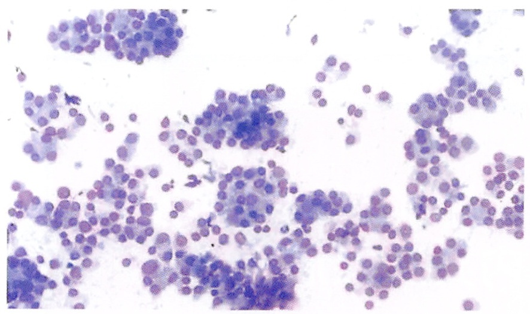
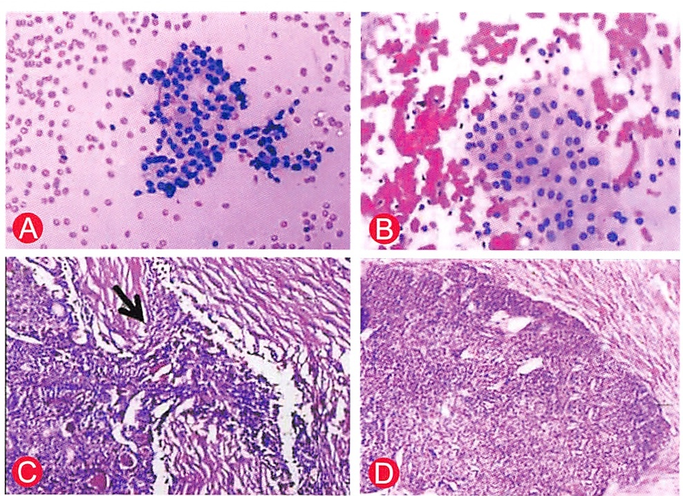
图 A 和图 C 为同一病例，图 B 和图 D 为另一病例。两个病例的 FNA 细胞学（图 A 和图 B）都提示为大量的增生的滤泡细胞，细胞形态并无差别。C. 第一个病例术后石蜡显示结节伴有局部的包膜侵犯（箭头），因此，诊断为滤泡癌；D. 第二个病例的石蜡切片的包膜完整，也无血管浸润，诊断为甲状腺腺瘤
（图片来源：file.scirp.org）
患者女性，46岁。10年前因右侧肾上腺嗜铬细胞瘤于外院行手术切除。当时术前检查发现左侧甲状腺内实性结节，大小约为 2.0cm × 1.8cm，因为结节边界
清晰，当时超声报告为“甲状腺腺瘤”。随后每年复查甲状腺，结节逐年长大。后来在北京清华长庚医院复查，结果发现左侧结节增大至约 6.0cm × 2.8cm，且颈动脉周围可见异常的淋巴结（图1-17-1）。
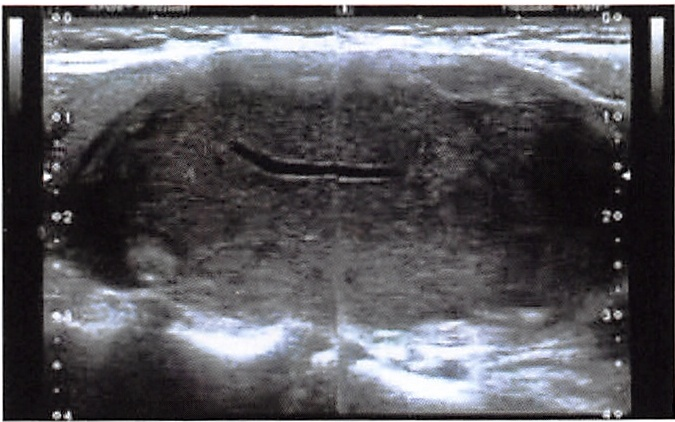
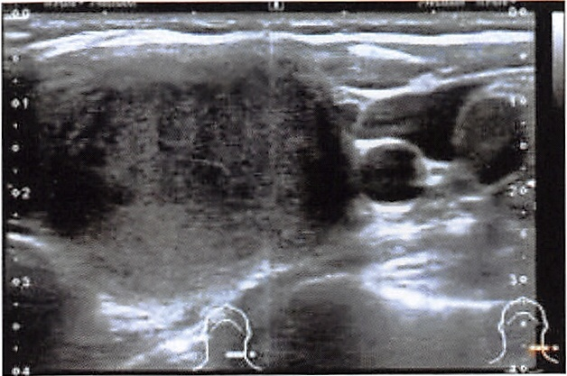
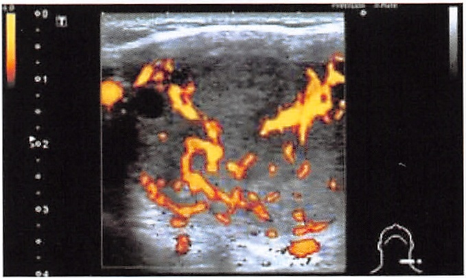
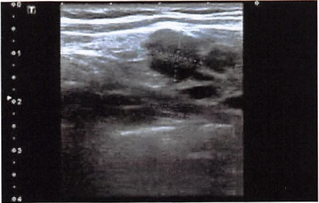
这其实是一个典型的甲状腺髓样癌（MTC）伴有周围淋巴结转移的病例。甚至可以肯定，十年前的那个所谓的“甲状腺腺瘤”其实就是甲状腺髓样癌。由于当时的手术医生和超声医生都对肾上腺嗜铬细胞瘤与甲状腺髓样癌之间的联系缺乏了解，才造成了长达10年的误诊。
甲状腺髓样癌是一种来源于甲状腺滤泡旁细胞（C 细胞）的甲状腺癌，C 细胞分泌降钙素。甲状腺髓样癌是第三个最常见的甲状腺癌。既往的数据显示，甲状腺髓样癌约占所有甲状腺癌病例的 3%。
约有 25% 的甲状腺髓样癌是遗传性的，是由于原癌基因 RET 突变引起的。这一类遗传性的甲状腺癌是归类为家族性甲状腺髓样癌。当甲状腺髓样癌单独发生，与遗传无关时，称为散发性甲状腺髓样癌。当其与甲状旁腺肿瘤共存和（或）
伴有肾上腺髓嗜铬细胞瘤时，被称为多发性内分泌瘤2型（MEN2）。
多发性内分泌瘤（multiple endocrine neoplasia，MEN）是一种包含几个不同内分泌肿瘤为特色的综合征，每个内分泌肿瘤都有自己的特征。其中，某些肿瘤是恶性的，某些肿瘤是良性的。一些非内分泌组织的良性或恶性肿瘤也可以是肿瘤综合征的一部分。MEN综合征是为常染色体显性遗传疾病，分为MEN1型和MEN2型，其相关的内分泌肿瘤的发生率和类型如表1-17-1所示。
| 特征 | MEN1 | MEN2 | ||
| MEN2A | MEN2B | FMTC | ||
| 同义词 | Werner 综合征 | Sipple 综合征 | (multiple) | (none) |
| 胰腺肿瘤 | 胃泌素瘤 (50%), 胰岛素瘤 (20%), 血管活性肠肽瘤, 胰高血糖素瘤, 胰多肽瘤 | — | — | — |
| 垂体腺瘤 | 66% | — | — | — |
| 血管纤维瘤 | 64% * | — | — | — |
| 脂肪瘤 | 17% * | — | — | — |
| 甲状旁腺增生 | 90% | 50% | — | — |
| 甲状腺髓样癌 | — | 100% | 85% | 100% |
| 嗜铬细胞瘤 | — | > 33% | 50% | — |
| 高瘦体型 | — | — | 80% | — |
| 黏液神经瘤 | — | — | 100% | — |
| 基因 | MEN1 | RET | RET | RET, NTRK1 |
| 发病率 (大约) | 1/35 000 | 1/40 000 | 1/1 000 000 | — |
甲状腺髓样癌通常是单发的，在声像图上多数时候表现为中低回声的相对均质的包块（图1-17-2）。有接近一半的病例呈现为卵圆形，而且边界清晰，有时候结节甚至表现为高回声，这些情况下非常容易误判为良性结节。不过，出现以下特征须提高警惕：单发的完全实性结节、结节内伴有大钙化、结节内有不规则的血流信号。
由上可见，甲状腺髓样癌很多时候是 MEN2 型综合征的一个表现。因此，当
发现甲状腺结节同时伴有其他内分泌肿瘤的时候，要高度怀疑甲状腺髓样癌的可能，不要轻易做出甲状腺良性结节的诊断。
MEN 具有遗传性。因此，有甲状腺髓样癌家族史者，一旦发现甲状腺结节就要想到髓样癌的可能。甚至有学者认为，对于家族性髓样癌的亲属，应该做原癌基因 RET 检测，一旦发现有 RET 基因变异，即使没有甲状腺结节，也应该做甲状腺的预防性切除。
穿刺病理能够确诊甲状腺髓样癌。一旦怀疑，应该施行超声引导下的穿刺活检，可能的话，尽量采用组织学活检。
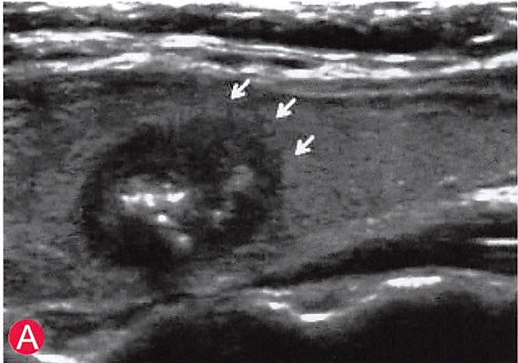
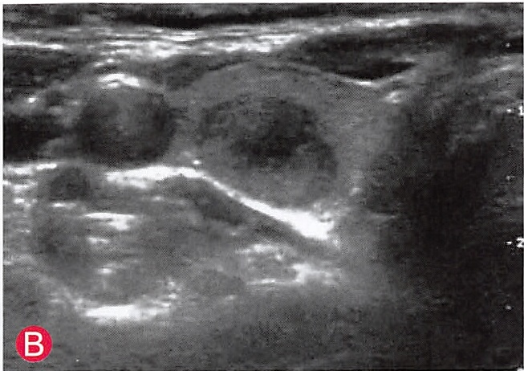
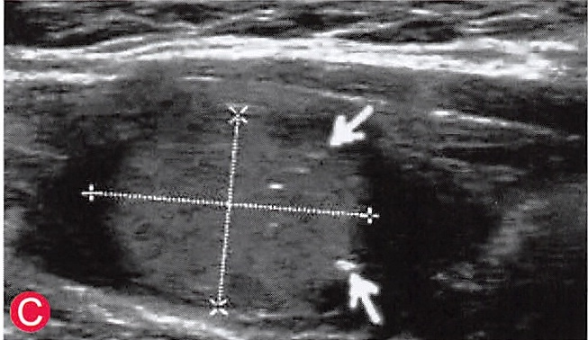
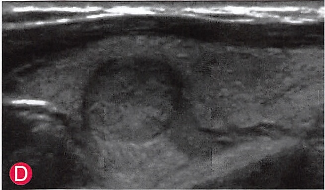
甲状腺癌多发生于40岁以下的年轻人，好发于年轻人的甲状腺癌多是分化型的乳头状癌和滤泡癌，大体上这些癌预后非常好。
但是有些特殊类型的甲状腺癌则好发于老年人，在年轻人群中非常罕见。这些好发于老年人的癌往往恶性程度高、侵袭性强、预后极差。
Hürthle 细胞是一种在桥本病和甲状腺滤泡性肿瘤中出现的一种细胞。Hürthle 细胞起源于滤泡上皮细胞，关键特性包括嗜酸性颗粒细胞质、泡状细胞核和大核仁。Hürthle 细胞体积大于滤泡细胞，往往是大型、多边形细胞。细胞质内有大量嗜酸性颗粒性质，通常线粒体的含量高所致。Hürthle 细胞可以出现在桥本病、甲状腺腺瘤和甲状腺滤泡癌中。Hürthle 细胞比例超过 75% 的甲状腺腺瘤和滤泡癌分别称为 Hürthle 细胞腺瘤和 Hürthle 细胞癌。Hürthle 细胞腺瘤的男女发病比例为 1:8，Hürthle 细胞癌男女发病比例为 1:2。
Hürthle 细胞癌有较强的侵袭性，文献报道有 34% 发生转移，而有 10%～20% 的患者初诊时就发现转移，广泛浸润者颈部淋巴结转移率高达 37%。血管转移较常见，主要转移至肺、骨和中枢神经系统；淋巴转移并不少见，主要转移至局域淋巴结，局域淋巴结转移并不是预后不良的因素。
Hürthle 细胞癌实际上也是一种分化型的甲状腺癌，一般将其视为一种特殊类型的滤泡癌。约占所有分化型甲状腺癌的 5%，侵袭性较其他分化型甲状腺癌强、转移率高、预后差。
Hürthle 细胞癌好发于老年人，中位发病年龄为 61 岁。该病多见于女性，男女比例约为 1:2。老年患者如有近期内生长较快、出现疼痛和产生压迫症状的甲状腺包块应高度警惕本病的可能。
Hürthle 细胞癌的其他特点有：灶性和双侧发生；淋巴结或远处转移可能为首发症状；既往有头颈部照射史和甲状腺癌或内分泌肿瘤的家族史；甲状腺功能
多正常但也可以表现为甲状腺功能亢进或甲状腺功能减退；可能同时合并其他良性甲状腺或甲状旁腺疾病，如原发性甲状腺功能亢进、结节型甲状腺肿、淋巴细胞性甲状腺炎、甲状旁腺瘤和滤泡性腺瘤等，也可发生于这些病变术后的残余组织。
Hürthle 细胞癌在超声上缺乏特异性，通常表现为短期内快速增大的低回声包块，一般无钙化，液化和囊性变均少见，边界通常较清（也有边界不清者），文献报道血流多数较丰富，以周边不规则血流为主（图 1-18-1，图 1-18-2）。对于 50 岁以上的老年患者，甲状腺内的快速增大的较大实性低回声包块一定要想到 Hürthle 细胞癌的可能。
病理上，Hürthle 细胞癌的诊断与其他滤泡癌一样，需要包膜浸润和（或）血管侵犯。肿瘤内的 Hürthle 细胞比例超过 75% 的滤泡癌才可以诊断为 Hürthle 细胞癌。与其他滤泡癌一样，穿刺和术中冰冻由于取材不足，并不能直接诊断 Hürthle 细胞癌。
桥本病 Hürthle 细胞癌的治疗主要以手术治疗为主。由于肿瘤的摄碘率低，因此，对放射性碘治疗敏感度很差，这也是本病预后不佳的原因。
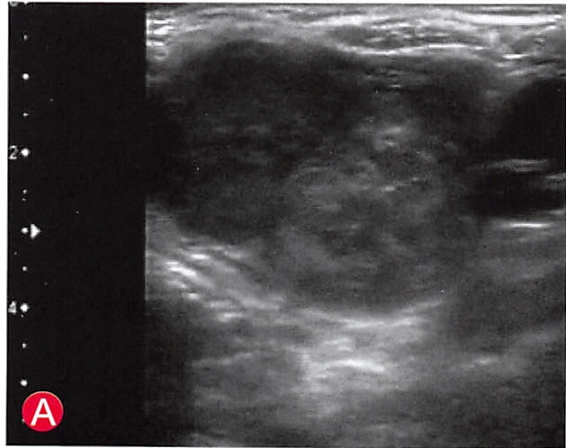
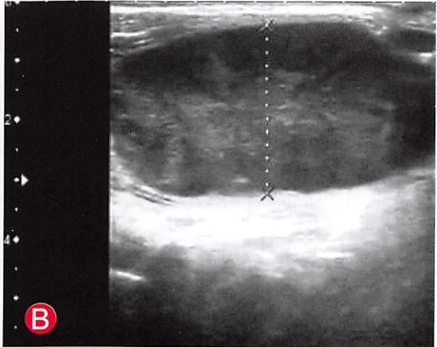
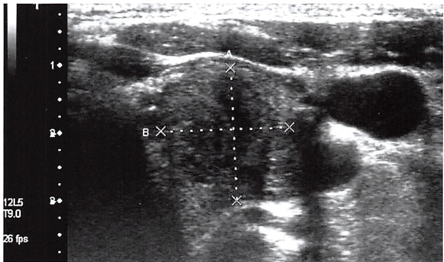
A. 横断面；B. 纵断面。患者男性，64岁，甲状腺结节就诊
甲状腺未分化癌是一种恶性度和侵袭性都非常高的癌，预后极差。甲状腺未分化癌的肿瘤细胞由分化极差的或去分化的小细胞构成。
甲状腺未分化癌主要见于老年人，高峰发病年龄在 60～70 岁。年轻人罕见未分化癌。女性多见，男女发病比例为 1:3。
未分化癌发病率很低，占所有甲状腺癌的不足2%（由于甲状腺乳头状癌的检出率越来越高，未分化癌的占比越来越低）。
甲状腺未分化癌有很高的有丝分裂率和淋巴血管受侵率，它能迅速侵入周围组织（如气管）和周围区域淋巴结。细针穿刺细胞学检查能够根据细胞形态确诊甲状腺未分化癌。
甲状腺未分化癌的预后极差，绝大部分的病例在发现时已经是第四期。甲状
腺未分化癌的总体5年生存率不足7%。绝大部分病例即使在积极的治疗下也会在一年内死亡。在确诊后的平均中位生存时间是4～5个月，罕见长期幸存者。
对于老年患者，颈部甲状腺快速增大的实性包块要考虑到甲状腺未分化癌的可能，一旦怀疑，应该尽快行穿刺活检以确诊。
声像图上，甲状腺未分化癌一般表现为不规则的低回声实性包块，内部回声通常低于周围的肌肉。包块通常会对甲状腺被膜和周围结构造成浸润。异常的淋巴结肿大非常常见。周边不规则血流为主。一般无钙化和微钙化，囊性变也比较少见（图1-19-1～图1-19-3）。
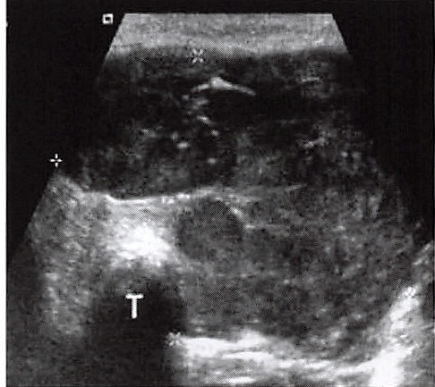
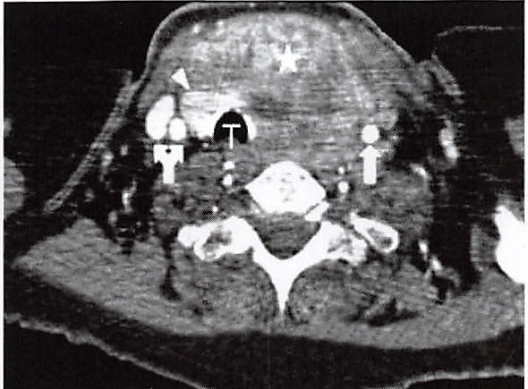
患者女性，80岁。甲状腺病变侵犯气管、血管、食管管以及椎体。T：气管
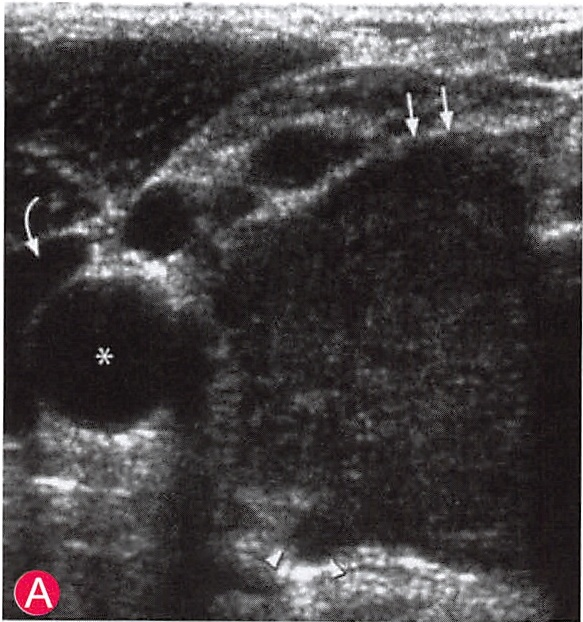
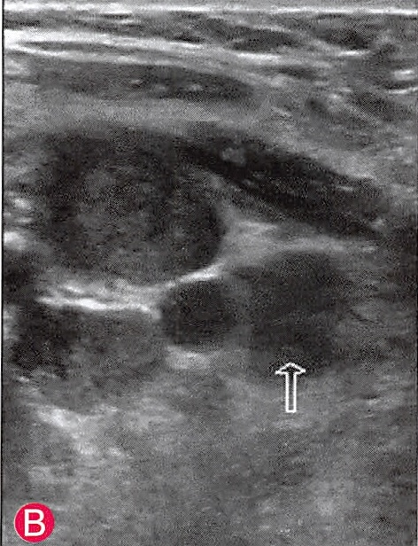
伴有甲状腺被膜浸润和多发的淋巴结转移；A. 直箭头：甲状腺被膜浸润；弯箭头：转移淋巴结；星号：颈总动脉；B. 箭头：肿大淋巴结
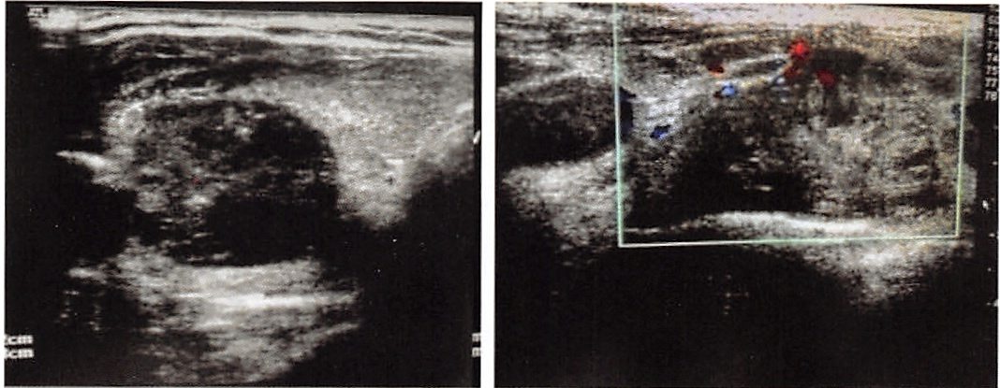
（该病例由濮阳市油田总医院卞福宝医生提供）
甲状腺淋巴瘤可以是原发性的，也可以是继发性的。无论是原发还是继发，发病率都较低，占甲状腺所有恶性肿瘤的1%～2%，占所有淋巴瘤的不足2%。年新发病率约为1/100万～2/100万。
甲状腺淋巴瘤好发于50岁以上的老年人，高峰发病年龄在65～70岁。女性多见，男女发病率约为1∶3。
其他主要的发病危险因素是桥本病。桥本病患者罹患甲状腺淋巴瘤的概率高于一般人群。
从分型上看，组织病理学上大多数甲状腺淋巴瘤为非霍奇金 B 细胞淋巴瘤，甲状腺霍奇金淋巴瘤很罕见。主要有以下几种类型：
（1）弥漫型大 B 细胞淋巴瘤伴有边缘区 B 细胞。
（2）不伴有边缘区 B 细胞的弥漫型大 B 细胞淋巴瘤。
（3）边缘区 B 细胞淋巴瘤。
（4） 滤泡型淋巴瘤。
甲状腺淋巴瘤的治疗以化疗为主，因此，准确的诊断能够避免不必要的外科干预。其预后与淋巴瘤的分型密切相关。
甲状腺淋巴瘤超声表现缺乏特异性。超声检查可以发现甲状腺内的异常病灶，通常为低回声，边界一般较清晰，病变内部通常回声不均，有时候呈网状改变。有时候表现为多发的低回声病灶。病变较小时一般占位效应不明显。部分病例伴有甲状腺实质的弥漫性病变（桥本病）。彩色多普勒超声也没有鉴别诊断价值（图1-20-1，图1-20-2）。
实际工作中，对于有淋巴瘤病史者或有桥本病病史的50岁以上的老年患者，甲状腺内出现快速增大的低回声结节，一定要考虑到淋巴瘤的可能。穿刺活检是必需的，可能的情况下，尽量采用粗针穿刺活检。
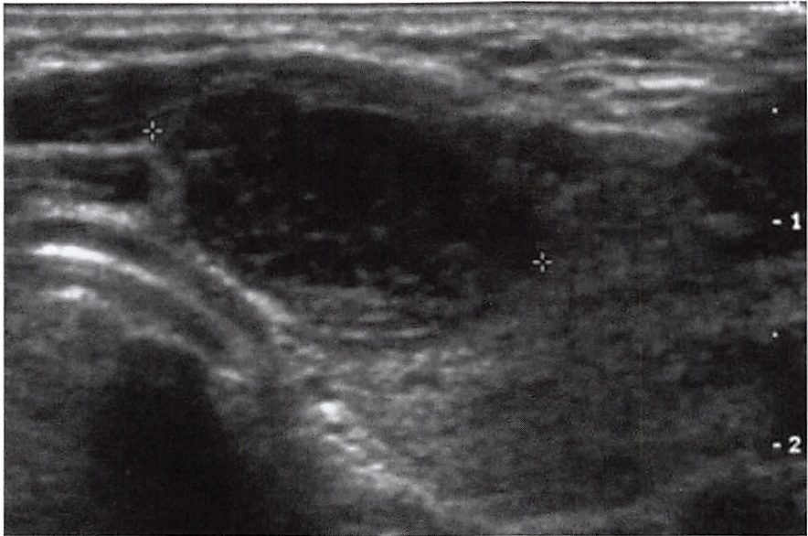
原发灶位于肺部。箭头：病灶
（图片来源：Journal of Ultrasound in Medicine）
甲状腺转移癌非常罕见，现有的报道几乎均为病例报道。原发癌报道较多的有肺癌、乳腺癌、肾细胞癌等。
甲状腺转移癌多见于老年人，综合多篇文献报道，显示甲状腺转移癌患者的年龄范围在58～79岁。男女发病率没有显著差别。
根据有限的病例报告，尽管缺乏特异性，甲状腺转移癌的声像图具有以下特点（图 1-21-1，图 1-21-2）：
（1）几乎都是局灶性转移，弥漫性浸润全甲状腺的情况很少。可以多发。
（2）大部分病灶位于甲状腺右叶。
（3）大部分病灶的形状不规则，一般边界较清楚。
（4）病变以实性低回声和高回声交错的不均匀混合回声为主。部分病例有小的囊性变。
（5）所有的病例都没有发现钙化灶。
（6）大部分病灶存在多血管，血管分布不规则。
（7）部分病例同时伴有甲状腺静脉内瘤栓，甚至颈内静脉内瘤栓形成。
右甲状腺混合回声包块伴有小的囊性变（图 A），颈内静脉瘤栓（图 B，箭头），丰富的不规则血流（图 C），病理显示为肾细胞癌（图 D）
（来源：Thyroid Research）
47
另外还有一个有趣发现：绝大部分的甲状腺转移癌的原发病灶都在右侧，比如右肺癌、右侧乳腺癌、右侧肾癌等。目前尚不知道原因是什么？
小结：
以上总结了几种老年人的甲状腺癌：Hürthle 细胞癌、未分化癌、淋巴瘤和转移癌。
重要观点如下：
（1）发生率非常低，均在1/100万～2/100万。
（2）即使在老年人中，发生率也远远低于乳头状癌和滤泡癌。
（3）极少发生在50岁以下的年轻人。
（4）都表现为快速增大的甲状腺肿块。
（5）除了少数的甲状腺转移癌外，一般不会出现囊性变。
（6）均不伴有钙化，无论是微钙化还是粗大钙化。
（7）预后较差，特别是未分化癌。
美国放射学会（The American College of Radiology，ACR）提出的乳腺影像报告和数据系统（Breast Imaging Reporting and Data System Atlas，BI-RADS）对于乳腺结节的管理和对于影像医生与临床医生的沟通方面起到了非常重要的作用。这一分类系统也被各个医疗机构广泛认可，也得到广泛应用。
看到 BI-RADS 分类系统的巨大好处，很多医生开始思考：对于甲状腺结节能否建立一套类似的分类机制，以便于甲状腺结节的管理，也便于影像医生与临床医生的沟通呢？
Horvath 等在 2009 年最早提出类似于 BI-RADS 分类系统的超声 TI-RADS 分
类系统（Thyroid image reporting and data system，TIRADS）)，后来 Jin Kwak 等人对其做了修订。目前使用的 TI-RADS 分类如下：
（1）TI-RADS 1：正常的甲状腺。
（2）TI-RADS 2：良性病变。
（3）TI-RADS 3：可能良性病变。
（4）TI-RADS 4：可疑病变（子分类 4a、4b、4c 与恶性肿瘤的风险增加相关）。
（5）TI-RADS 5：高度提示恶性病变，恶性肿瘤的风险超过 80%。
（6）TI-RADS 6：活检证实恶性肿瘤。
但是，到目前为止，这个分类系统的任何版本尚未被美国放射学会或任何学术结构正式接受。仅仅在个别医疗机构使用。造成这个分类系统提出很多年以后仍然不能被接受的主要原因可能在于：
（1）甲状腺结节影像学检查的相关词典术语还没有取得一致意见。
（2）甲状腺癌的影像学表现远比乳腺癌复杂。甲状腺良性结节和恶性结节的影像学表现的重叠范围远远大于乳腺结节。
（3）甲状腺癌的危害程度远远低于乳腺癌。大量的研究表明甲状腺癌的早期检出并没有改变甲状腺癌的总体归因死亡率。这使得甲状腺癌早期诊断的迫切性大为下降。
（4）这一分类系统对于恶性程度和侵袭性很强的未分化癌、淋巴瘤等病变并不具有早期检出的价值。
（5）目前的 TI-RADS 分类系统中，将很多研究已经证实为具有典型良性结节声像图特征的实性结节归类在 TI-RADS 3 类中，使得患者必须接受不必要的定期复查建议，造成极大的医疗资源浪费。
（6）很多恶性滤泡性肿瘤，由于声像图上不存在 TI-RADS 分类系统中的可疑恶性征象，往往被错误分类在 TI-RADS 3 类中，从而导致治疗上的延误。
（7）甲状腺结节的管理中，结节的大小是至关重要的一个指标。现有的绝大多数 TI-RADS 分类系统中并没有将结节大小考虑在内。这导致很多仅仅 5mm 以下的，分类在 TI-RADS 4 类以上的小结节不得不接受 FNA，这与大部分的指南相悖。
（8）同样，现有的 TI-RADS 分类系统也没有考虑病史在甲状腺结节管理中的重要价值。而病史在甲状腺结节的管理中是最为关键的环节。
以上这些因素是现行的 TI-RADS 分类系统不能有效指导临床的主要原因。同时由于现有的 TI-RADS 分类系统的一些不足，也导致影像医生与临床医生沟通上的障碍，常常出现临床医生的处置与影像学分类建议之间的矛盾，导致医疗纠纷的出现。
笔者认为，TI-RADS 分类系统作为一种仍然需要完善的甲状腺结节的分类系统，可以作为科研工具使用，在很多内容尚不完善、词典尚不统一的情况下，还不适合作为临床项目使用，更不应该实际应用于甲状腺结节的管理中。
备注：这篇文章写于2015年，在这篇文章发出后的2年——2017年5月，美国放射学会发布了TI-RADS。新版版本的TI-ARDS目的并非是找出每一可能的甲状腺癌，而是致力于防止甲状腺癌的过度诊疗，其目的仅仅是帮助医生对结节进行分级并选择确定FNA的时机，尽可能减少对无临床意义结节的过度干预。
患者女性，65岁。颈部、锁骨上窝及腋下多发淋巴结肿大，超声检查同时可见甲状腺多发低回声结节（图1-23-1，图1-23-2）。最终病理结果：弥漫性大B细胞淋巴瘤。
具有以下特点：多发、回声极低、形状不规则、边界清楚，少血供、占位效应不明显，THY：甲状腺；箭头：肿大淋巴结
具有典型的非霍奇金淋巴瘤的特点：圆形类圆形、极低回声、门结构消失、相邻淋巴结串珠样排列、血流丰富等，LN：淋巴结
甲状腺淋巴瘤好发于50岁以上的老年人，高峰发病年龄在65～70岁。女性多见，男女发病比率约为1:3。
其他主要的发病危险因素是桥本病。桥本病患者罹患甲状腺淋巴瘤的概率高于一般人群。
从分型上看，组织病理学上大多数甲状腺淋巴瘤为非霍奇金 B 细胞淋巴瘤，
甲状腺霍奇金淋巴瘤很罕见。
[该病例由河北大学附属医院小李大夫（微信名紫衣侯）提供]
桥本甲状腺炎（Hashimoto thyroiditis），也叫慢性淋巴细胞性甲状腺炎、桥本病，是一种以甲状腺结节性受损为特征的自伤免疫性疾病。
据研究，5%的人可能会在一生的某个阶段罹患桥本病，而女性的发病率是男性发病率的8～15倍，女性人群中，至少有10%的人会在一生的某个阶段罹患桥本病。而高碘饮食人群发病率更高，高峰发病年龄在30～60岁。
组织学上，桥本病表现为甲状腺实质内大量的淋巴细胞浸润，特别是 B 细胞。桥本病的临床诊断主要依靠血清学相关抗甲状腺抗体指标的升高，抗甲状腺过氧化物酶抗体（anti-TPO）和甲状腺球蛋白抗体是桥本病具有特异性的抗体（相关抗体的临床意义请参阅内分泌学相关专业书）。
桥本病是如此常见，以至于成了超声医生每天必须面对的一种疾病。绝大部分的超声诊断专著中都这样描述桥本病的声像图特征：典型的桥本病表现为甲状腺弥漫性轻度肿大、以峡部肿大为著、回声减低、回声不均。
然而，这种所谓的“典型”的桥本病的声像图实际上只占所有桥本病的一小部分（不足1/10）。绝大部分临床诊断为桥本病的病例，其甲状腺的声像图都缺乏上述“典型”特征。因此，这一典型其实一点也不典型。
桥本病在声像图上表现其实是多种多样的，没有一种可以称得上是“典型”（图1-24-1～图1-24-6）。尽管声像图表现各不相同，在病理学上这些不同声像图特征的桥本病却没有本质的区别。一般的观点认为，桥本病在声像图上的千奇百怪的回声特点与病变的累及范围、进展程度、活动性等密切相关，但是目前没有任何证据显示某种声像图特征能够与病变的某一时期直接关联起来。
可以这样认为，声像图的改变不是诊断桥本病的必要条件，声像图的不同类型的变化也对病变的分期、治疗选择、预后判断没有太大的价值（限目前的研究证据）。
桥本病的严重程度、临床分期、治疗决策主要依靠临床血清学指标判断，与声像图的改变无关。美国内分泌学会（ENDO）联合美国临床内分泌医生协会（AACE）发布了曾经建议如果甲状腺触诊无异常，对于甲状腺功能检查异常的患者不应行常规甲状腺超声检查（原因：通过超声检测到的结节通常与甲状腺功能异常无关，并且可能使临床评估偏离甲状腺功能异常，转移到对结节的评定）。
以下病例均经临床血清学检查证实。
孙晓峰（吉林大学第一医院）
梨状窝（piriform fossa fistula，PFF）为胚胎发育过程中鳃裂组织未完全退化残留而形成，通常认为来源于第三或第四鳃裂瘘管，合并感染时常常以甲状腺反复脓肿为其特点，绝大部分发生在左侧（93%～97%）。
临床上由于受到学科和专业的限制，往往忽略反复发作甲状腺脓肿的病因诊断——梨状窝瘘。梨状窝瘘合并感染时临床表现不特异，诊疗中 CT 及超声等辅助检查常常未能考虑到鳃裂瘘管的存在而仅仅诊断甲状腺脓肿或甲状腺周围脓肿，术中及术后常常片面地证实甲状腺脓肿，故更被“确信无疑地”误诊为甲状腺脓肿，而其真正的病因——梨状窝瘘往往漏诊，造成反复感染延误诊治。因
此，尽早确诊梨状窝瘘，减轻患者痛苦，避免颈部反复切开引流，导致解剖结构破坏，增加手术难度，指导有效的治疗方案意义重大。本病多发生于小儿，不过本文所提供的病例为成年人。
经典病例：
患者男性，53岁，因颈部反复肿胀两年就诊。超声显示：甲状腺左叶无增大，上极回声紊乱，可见不规则低-无回声，与周围软组织分界不清晰，边界隐约见厚壁样结构，中心部不规则无回声挤压，可见移动感，该病变区经气管环周围向上、向后、向口底方延续，似与口底相通，大小约为 38.1mm × 21.5mm × 23.9mm。甲状腺左叶边缘形态呈分叶状，边界尚清晰（图1-25-1，图1-25-2）。
细箭头：区域为脓肿区域；粗箭头：颈总动脉
测量标记处为腺体上极回声紊乱，不规则低-无回声，与周围软组织分界不清晰，与甲状腺边界尚清晰，边界隐约见厚壁样结构
甲状腺包膜完整，局部血运及淋巴回流丰富，且碘离子浓度高，既不易发生自身组织的原发性细菌感染，又不易被邻近组织器官的感染病灶所累及，一般不容易化脓性感染。因此，声像图上更像是甲状腺周围组织的炎症挤压或累及甲状腺。
实际工作中须注意：
（1）可因上呼吸道感染和口腔内感染诱发、反复急性起病，可有发热，典型症状有咳出大量脓臭的血性物后症状明显减轻、消失病史（有可致纵隔脓肿及脓胸的病例报道）。
（2）辅助检查常常提示甲状腺脓肿。
（3）甲状腺功能（T3、T4、TSH）正常；血常规白细胞总数增高，伴中性粒细胞百分比明显升高，最高达92.7%。C-反应蛋白指标及降钙素原指标明显升高。
（4）瘘管多位于颈总动脉前内侧与甲状腺上极外侧缘间，自后向前逐渐潜行，并穿透颈前肌层延伸至皮下。
（5）急性期积极治疗脓肿，急性期炎症消退后6～8周（亦有文献报道2～3个月）方进行检查明确病因，否则炎症致瘘口区域性闭合，阳性率降低。
57
（6）通常，各种辅助检查意义均有限，原因：往往不能准确找到瘘管或瘘口，如吞钡造影（BO）、内镜直视下寻找瘘口、颈部薄层CT扫描、颈部瘘管造影。而超声检查则不同，如果有意识积极寻找瘘管，往往可以成功找到瘘管。
（7）术后病理报道，瘘管管腔内衬复层鳞状上皮或假复层柱状上皮，伴炎症细胞浸润，瘘管周围组织中可见甲状腺组织。
急性、亚急性、慢性甲状腺炎，三者之间没有任何因果关系。只有急性甲状腺炎是明确的细菌感染且能培养出致病菌。亚急性甲状腺炎发病机制至今未完全清晰，普遍认为可能与病毒有关。慢性甲状腺炎通常指桥本病，极少数为木样甲状腺炎（Riedel 甲状腺炎）。二者的机制目前仍未明了，仅知道桥本病是一种自体免疫性疾病，后者无论临床表现、血清学检查及超声表现都极为多样性。相对于亚急性和慢性甲状腺炎，急性甲状腺炎的发病率要低得多。
急性甲状腺炎（acute suppurative thyroiditis，AST）也被称为急性化脓性甲状腺炎、细菌性甲状腺炎。
由于相对较高含碘量的组织，以及富含血管和淋巴引流，甲状腺通常是对感染有很强的抵抗能力，通常病原体很难感染甲状腺。尽管如此，由于解剖和胚胎发育的关系，持续存在的梨状窝瘘可能会使甲状腺左叶容易受到累及，这是急性甲状腺炎最主要的感染途径（图1-26-1）。
注：梨状窝瘘为胚胎发育过程中鳃裂组织未完全退化残留而形成。由梨状窝的底部或尖部向下向前延伸至甲状腺周围和甲状腺实质。约90.3%发生于左侧，可能与哺乳动物胚胎发育过程中原始大动脉的消失、双侧动脉弓的演化和发育不对称、鳃性组织右侧消失较早有关。大多数学者认为梨状窝瘘起源于第三或第四腮囊。
急性化脓性甲状腺炎的主要病原有葡萄球菌、链球菌、流感嗜血杆菌、克雷伯菌、大肠杆菌、假单胞菌、肠杆菌、沙门菌和厌氧菌，以及常见口腔正常菌群，其他报告的少见病原还有分枝杆菌、曲霉属真菌、新型隐球菌、荚膜组织胞浆菌、念珠菌、梅毒螺旋体等。
抽出脓液送细菌培养，可使抗生素的选择更有针对性。但由于此类发病急骤、症状很重，一般等不及培养后再治疗，通常根据超声表现，加上抽出物肉眼判断，先用广谱抗生素控制，然后根据培养结果再改为敏感抗生素。
超声所见：通常发生于左侧叶（90%以上），左叶明显肿大，整叶甲状腺或大部分呈混合回声，边界不清，可见大小不等的脓腔，有时成一个较大的脓腔，周边实性部血流丰富，受累甲状腺叶几乎不见正常实质，对侧甲状腺一般正常。
手术切除梨状窝瘘是防止急性甲状腺炎复发的主要治疗手段。
经典病例：
患者男性，13岁，高热寒战，左叶明显肿大，整叶甲状腺呈混合回声，可见大小不等的脓腔，边缘部血流丰富，受累叶甲状腺几乎不见正常实质，对侧却正常（图1-26-2）。超声引导下抽出脓液。
经典病例：
患者女性，50岁。左叶急性化脓性甲状腺炎。组织学穿刺证实。几乎整叶被破坏是该病与亚急性甲状腺炎的最大区别（图1-26-3）。两例病例均有典型高热症状。受累叶剧痛，触痛极敏感。
箭头：急性甲状腺炎
（图1-26-2和图1-26-3的两个病例由解放军总医院第一附属医院傅先水教授提供）
浏览维基百科上的世界高桥、长桥之最，发现全球排名前八十位的高桥中，有五十座在中国，前五十位的长桥中有三十多座在中国。中国已经是不折不扣的桥梁大国。桥梁使人们的交流变得更为便利，沟通变得更为通畅。
在甲状腺结节有时也可以发现这样的“桥梁”，这些“桥梁”可帮助超声医生更好地对结节做出定性判断，可以说是非常重要的一座桥梁。
针对甲状腺结节的过度诊断和过度治疗已经成为比甲状腺疾病本身更为严重的一个问题。许多研究者都在试图寻找甲状腺结节中哪些具有典型的良性特征的征象，以减少针对这些恶性可能性极低的甲状腺结节的不必要的干预。
在一些甲状腺 “结节” 中，声像图上可以看到一些横行或纵行的索条样强回声，恰是一道桥梁贯通结节的两端（图1-27-1）。伴有这种 “桥梁” 的甲状腺结节几乎都是良性结节，而且绝大部分都是炎症性结节（桥本结节或亚急性甲状腺炎结节）。因此，甲状腺结节内的这道桥梁可以作为良性结节的标志，是名副其实的 “安全之桥”。这一类结节一般无须过度干预。
这些索条本质上是炎性非肿瘤性结节内未被病变累及的相对正常的残留组织（或间质）。这些相对正常组织的存在也反映了病变本身不具有浸润性。
即使这座 “桥梁” 没有完全贯通（断桥），中间有断续，也是良性结节的可靠标志（图 1-27-2）。
需要提醒的是，无论在横断面上还是纵断面上，这些结节内的“桥梁”都应该是基本与探头面平行的，垂直于探头面的“桥梁”不在此列。
结节呈不规则低回声，其内可见贯通结节上下的强回声“桥”
结节呈不规则低回声，横断面可见其内可见不完全贯通结节左右的强回声“断桥”（箭头）
PERSPECTIVE
Worldwide Thyroid-Cancer Epidemic? The Increasing Impact of Overdiagnosis
Salvatore Vaccarella, Ph.D., Silvia Franceschi, M.D., Freddie Bray, Ph.D., Christopher P. Wild, Ph.D., Martyn Plummer, Ph.D., and Luigino Dal Maso, Ph.D.
N Engl J Med 2016; 375:614-617 | August 18, 2016 | DOI: 10.1056/NEJMp1604412
Dramatic increases have been seen over recent decades in the reported incidence of thyroid cancer, but owing to new modes of screening, hundreds of thousands of cases may be overdiagnoses — diagnosis of tumors that would not, if left alone, result in symptoms or death.
《新英格兰医学杂志》2016年8月18日发表一篇“Worldwide Thyroid-Cancer Epidemic? The Increasing Impact of Over diagnosis”的研究，这项研究由来自国际癌症研究署（International Agency for Research on Cancer，IARC）的研究人员完成。研究指出：很大一部分甲状腺癌案例来自过度诊断且大部分为女性，这些患者可能接受了不必要的手术和其他癌症相关治疗。这一结论来自12个国家的癌症登记数据分析。
研究人员估计，12个“高收入国家”（澳大利亚、丹麦、英国、芬兰、法国、意大利、日本、挪威、韩国、苏格兰、瑞典和美国）在1987—2007年约有超过47万例女性和9万例男性存在甲状腺癌的过度诊断并接受了过度治疗。
尽管这些国家的甲状腺癌的发病率一直持续上升，但是其甲状腺癌的归因死
亡率都是一直稳定不变的。
其中大部分甲状腺癌为病灶较小的低风险乳头状癌，这些患者中的绝大部分接受了甲状腺全切术。另外，还有相当比例的患者同时接受颈部淋巴结清扫术和放射碘治疗。但是，研究表明这些干预措施并未在改善患者生存上获益。
研究人员对2003—2007年的数据进行分析后认为，估计90%的韩国女性甲状腺癌案例属于过度诊断；而美国、意大利、法国和澳大利亚过度诊断比例介于70%～80%；日本、北欧国家和英国这一比例约为50%。韩国甲状腺癌过度诊断比例偏高的原因在于韩国早在20世纪90年代开始实施全民健康体检密切相关。
研究者认为，甲状腺癌过度诊断与非医疗目的的体检增加及诊断技术的不断引入相关，如高分辨率颈部超声检查（自20世纪80年代）、CT和MRI。这些技术的引进使得甲状腺内的大量惰性、非致命性疾病得到诊断，事实上这些疾病引起症状或导致死亡的可能性很小。绝大部分国家（如美国、意大利、法国和韩国等）的甲状腺癌被大量诊断的都是在高分辨率超声的广泛应用于颈部检查之后发生的。超声已成为韩国女性甲状腺癌最常见的癌症检查手段。
研究者还发现，甲状腺癌发病率和死亡率之间的差异显著高于乳腺癌、宫颈癌或前列腺癌等。15～49岁女性甲状腺癌患者发病率和死亡率之比＞300，而这一年龄段乳腺癌女性的发病率和死亡率之比＜10。
研究人员认为，对于<1cm 的甲状腺结节应警惕甲状腺癌的过度筛查和过度治疗。对于<1cm 的低危甲状腺乳头状癌患者，观察可能是最好的选择。
世界范围内，甲状腺癌的过度诊断正逐渐增加，伴随而来的是一些不必要手术的增加。研究人员表示，这为某些类型的甲状腺乳头状癌应重新归类为良性肿瘤的建议提供了证据。
多数情况下，甲状腺的高回声结节倾向于良性病变。不过有一些高回声病变有可能是恶性的，应该引起超声医生的重视，在结节的后期管理上要分别对待。本文介绍两种相似但不相同的甲状腺高回声结节，对它们的管理原则是不一样的。
患者女性，47岁。右侧甲状腺单发高回声结节：结节回声均匀，边界清晰，周边可见明显的低回声晕
患者女性，83岁。右侧甲状腺单发高回声结节：结节内部回声均匀，周边无声晕，结节与周边的甲状腺组织直接延续，无过度
图1-29-1和图1-29-2中的高回声结节具有不同的临床意义，对这两类结节的管理应该采取不同的策略。
图1-29-1所示的高回声结节，周边有低回声晕，这一类的结节有5%～10%的可能性是恶性的，因此，应该积极处理。一般将此类结节称为“滤泡性甲状腺结节”，超声报告通常提示为：甲状腺实性结节——低度可疑恶性结节（滤泡性肿瘤可能）。
当此类结节周边的低回声晕不规整、模糊、厚薄不均，或结节内高回声区内出现明显的灶状低回声的时候，应更加警惕，此时结节的恶性可能性会大大增加。此时提示修订为：甲状腺实性结节——中度可疑恶性结节（滤泡性肿瘤可能）。
考虑低度可疑恶性结节时，结节最大径线＞1.5cm时，可行超声引导下FNA。如果FNA的结果提示肿瘤为滤泡性肿瘤或恶性肿瘤，均为手术切除的指证。
考虑中度可疑恶性结节时，结节最大径线＞1.0cm时，可行超声引导下FNA，注意重点选择低回声区域穿刺。如果FNA的结果提示肿瘤为滤泡性肿瘤或恶性肿瘤，均是手术切除的指证。
图1-29-2所示的高回声结节，则几乎都是良性的，而且多发生在慢性甲状腺炎的背景之上。对于此类结节的管理则是按照良性结节管理。至多定期超声复查就可以了。无须穿刺和手术。通常将此类结节归类为良性结节，超声报告通常提示：甲状腺实性结节，符合良性结节表现。
其中，滤泡性腺癌的诊断最为困难。滤泡癌、滤泡性腺瘤与腺瘤样增生在病理上的区别微乎其微。唯前者核分裂象略常见，但核分裂象的有无与是否诊断为滤泡癌没有关系。滤泡性肿瘤诊断为滤泡癌主要根据是否出现被膜、血管及邻近甲状腺组织的侵犯。根据浸润程度，将滤泡癌分为微小浸润性癌和广泛性癌。微小浸润性滤泡癌的诊断受人为因素的干扰很大，因为被膜的破坏有可能是外伤或肿瘤组织的疝，而病理科医生往往会在临床医生的压力下做出妥协性诊断。小浸润性癌几乎不会发生转移，因此，有许多病理学家主张对微小浸润性癌不称之为“癌”。甚至，对于广泛浸润性癌，如果在没有血管浸润；缺乏乳头状癌细胞核特征；肿瘤细胞为高分化的情况下也可以不诊断为“癌”。由此看来，根据所谓的甲状腺结节内部回声异常做出的“滤泡癌”的诊断都是无稽之谈。
病理上乳头状癌和髓样癌都不属于滤泡性肿瘤。在病理上各种滤泡性肿瘤的差别微乎其微，其结论常常受到病理医生的主观影响。一个孤立的结节性甲状腺肿结节和一个腺瘤甚至一个微小浸润性滤泡癌在其内部结构上几乎没有区别。因此，请记住一点：穿刺病理不能用于鉴别各种滤泡性肿瘤。穿刺病理不能分辨甲状腺滤泡性肿瘤的良恶性，尽管粗针穿刺组织学可能会发现一些滤泡癌的证据。因为滤泡性肿瘤的良恶性仅仅是靠肿瘤是否浸润基膜和血管来鉴别，穿刺病理不能提供这些信息！但，穿刺病理能够检出这一类病变中的乳头状癌和髓样癌。
滤泡性结节有如此高的恶性率，应该给予高度重视：一般情况下应该建议直接行单侧甲状腺切除术，再根据术后石蜡切片做出最后诊断并确定下一步治疗的方案（术中冰冻切片也无法分辨滤泡癌和良性滤泡性肿瘤）。
此类结节如果在声像图上出现以下征象提示病变需要更加积极处理：
（1）钙化，无论大钙化还是微小钙化；
（2）单发；
（3）边缘晕不规整。
而结节伴有以下特征可以视为更具有良性倾向：
（1）多发，双侧甲状腺内有多个同类结节；
（2）蜂窝样变，结节内出现较大范围的蜂窝样回声为良性病变的特征；
（3）均匀完整的边缘晕。
甲状腺内的一些囊性或囊实性增生结节随着时间的推移，囊液会逐渐吸收、胶质凝集，较大病变会萎缩塌陷为一个较小的实性结节。这些萎缩塌陷的小结节一般称为“木乃伊结节”或者“僵尸结节”，没有任何的临床意义，无须干预。
不过，这些萎缩塌陷的实性结节内部可以出现纤维化和钙化，在声像图上颇具有一些恶性结节的特点（图 1-30-1）。因此，常常会被误作恶性结节。
针对这样的结节，作为超声医生应该仔细对结节的声像图特征进行分析，下面所列的这些声像图特征越多，病变越有可能是一个木乃伊结节：
（1）规则的蛋壳样钙化；
（2）周边低回声晕（环），即双边征；
（3）后方声影；
（4）结节内完全无血流；
（5）连续的随诊观察中，病变较之前缩小。
如果患者有明确的病史，在相同部位曾经有过较大的囊性或囊实性包块，则是将该结节判定为木乃伊结节的重要证据（图1-30-2）。
从硬度上讲，木乃伊结节大致介于正常甲状腺和恶性结节之间（图1-30-3）。因此，比正常甲状腺组织稍硬一些，但是不如恶性结节那么硬。因此，弹性成像对于鉴别木乃伊结节和恶性结节具有一定的价值。不过具体的定量数值还需要更多病例研究来获取。
细针穿刺细胞学检查发现，木乃伊结节常显示为“取材不满意”。因此，遇到“取材不满意”这一类细胞学检查结果后，再结合前述的声像图特征，也可以作为木乃伊结节的判定指标。
根据已有的声像图资料，将可能的木乃伊结节从可疑恶性结节中筛选出来，可以避免不必要的手术。这是超声医生的重要任务和职责。
胸腺不仅是人体重要的淋巴器官，也是人体重要的内分泌器官。作为中枢性淋巴器官，胸腺培育、选择并向周围淋巴器官（如淋巴结、脾、扁桃体）和淋巴组织（如淋巴结）输送T淋巴细胞，参与机体免疫反应。作为内分泌器官，胸腺分泌胸腺素、胸腺生成素等，参与人体功能反应。
胸腺大小、形状、位置、结构都随年龄变化而不同。胸腺多位于前上纵隔中央，胸骨柄之后，心脏及升主动脉前方。胸腺向前与胸骨、第一到第四肋骨及胸骨甲状软骨肌和胸骨舌骨肌相邻；向后与心包、主动脉弓及分支、左头臂静脉、气管等相邻，有时还与甲状腺相邻。胸腺的上缘从第一肋间向上延伸到甲状腺的下缘，但有时其上缘也可超过甲状腺。胸腺可以在气管的前外侧向上延伸，其上极通过较弱的甲状腺韧带与甲状腺相连，有时以细干延入颈部，有的与下一对甲状旁腺相连，有时甚至延抵舌骨。
胚胎时期，胸腺起源于第四对咽囊的腹面，大约在胚胎第六周末的时候。双侧的原始胸腺组织开始向尾侧增大并同时向下、向内侧移行，并形成一个管道结构（胸腺咽管）。这一移行通路大约在颈动脉鞘与甲状腺之间。约到第八周的时候，双侧胸腺移行至胸骨后方的上纵隔处并相互融合。
在胸腺移行过程中，由于各种因素的干扰导致胸腺不能移行到位，致使部分或全部胸腺驻留在颈部，称为颈部胸腺。颈部胸腺最常见的部位在甲状腺的下方和甲状腺的后方、外侧，最上可达下颌。由于胸腺的移行和甲状腺的移行发生在同一时期，且二者的胚胎起源部位邻近，因此，移行过程中，部分胸腺组织常常会被甲状腺裹挟，成为甲状腺内的异位胸腺。
除极少数的驻留于气管内的颈部胸腺可能会导致呼吸道梗阻以外，绝大部分的颈部胸腺都是无症状的偶然发现，没有任何临床意义。
在声像图上，胸腺的内部回声因为年龄的不同而不同。胸腺在新生儿、婴幼儿时期，相对体积最大，这时候的胸腺呈现为低回声，内部呈粗网状高回声（图1-31-1）。随着年龄的增大，在青春期和青春期前的少年儿童中，胸腺呈现为低回声，其内会出现大量的点状高回声，这些点状高回声是胸腺内逐渐增多的断续纤维分隔，这一时期的胸腺回声特点被形象地形容为“星空征”（图1-31-2）。成年人胸腺由于逐渐被脂肪替代，声像图上渐渐呈现为类似与脂肪团块样的回声，并伴有较多的纤维分隔（图1-31-3）。
颈部胸腺也同样具有上述的胸腺声像图特点。还要注意的是，颈部胸腺质地非常柔软，不会对正常的颈部结构造成推移。
既往认为颈部胸腺非常罕见，但随着现代影像学的进步，发现颈部胸腺并不少见。研究显示，如果以胸骨上缘为界，颈部胸腺在正常人群中的检出率高达
71
12.6% ~ 20%。
因此，作为超声医生，在日常对青春期和青春期前的少年儿童检查时，颈部甲状腺内部和周围发现具有“星空征”大包块，应该首先考虑其为胸腺组织。利用弹性成像确定包块质地较软更能证实诊断结果。成年人的颈部胸腺则更像一个脂肪团块。
如果对这些包块行 FNA，如果能够发现较大的胸腺上皮细胞则能够确诊。不过多数情况下并没有必要行 FNA。
1 岁男婴，右侧甲状腺下低回声包块，内呈粗网状，质地柔软。thyroid lobe：甲状腺右侧叶；thymic lobe：胸腺右侧叶
7岁女孩，右侧甲状腺内和甲状腺下方低回声包块，内部回声呈现典型的“星空征”
61 岁女性，左侧甲状腺下方脂肪样包块，质地软（箭头）。LT：左侧甲状腺；CA：颈总动脉
甲状腺乳头状癌（PTC）非常容易发生颈部淋巴结转移，15%～20%的甲状腺乳头状癌是以淋巴结转移为首发症状就诊的。有时候原发病灶非常小，甚至无法检测到。
实性的 PTC 转移淋巴结，利用超声不难诊断。不过，PTC 转移淋巴结非常容易发生囊性变，有的甚至会伴有显著的囊性变，在影像学上仅表现为一个以囊性为主的包块，这一类囊性包块容易被误诊为其他病变，造成治疗上的延误。
研究显示，74.5% 的 PTC 转移淋巴结内伴有囊性变，其中 24.5% 为显著囊性变（即囊性成分占到一半以上）。原发病灶有无囊性变与转移淋巴结有无囊性病之间没有相关性。
73
欧洲的一项研究显示，位于颈侧部（相当于第三至五区淋巴结）囊实性包块中，96%以上都是PTC转移淋巴结的囊性变。国内没有相关的研究数据，不过由于国内淋巴结核的发生率较高，数值应该不会达到这么高。
不管具体的研究数值如何，颈侧部的囊实性包块中有相当一部分是 PTC 转移淋巴结囊性变的结果。因此，作为超声医生，应该将颈侧部的囊实性包块或淋巴结的部分囊性变作为 PTC 的一个重要指示器。一旦发现颈侧部的囊实性包块或淋巴结的部分囊性变，都要意识到可能存在甲状腺乳头状癌的可能（图 1-32-1）。
由于囊性变的存在，FNA 在 PTC 转移淋巴结囊性变的诊断中的阳性率非常低，不过可以对穿刺液和组织冲洗液做甲状腺球蛋白测定，甲状腺球蛋白水平升高是诊断 PTC 转移的重要依据。
患者女性，21岁，以颈部包块就诊。超声显示右侧胸锁乳突肌后方囊实性包块，以囊性成分为主
（一） 青春期乳头状瘤病
好发于年轻女性。大体病理切面上可见大量的囊腔样结构，故别称“瑞士干酪病”。超声表现为边界清楚的中低回声包块，内部可见多数较小的无回声囊腔（图2-1-1）。本病是良性病变，但患本病的患者发生乳腺癌的概率远高于普通人群。
A. 大体标本实物图，箭头：病变内的囊性区；B. 声像图，箭头：病变内的囊性区 图2-1-1 青春期乳头状瘤病
（二） 浆细胞瘤
髓外浆细胞瘤好发于头颈部，在乳腺发生的极为少见，多见于骨髓瘤患者。超声表现缺乏特异性，多为低回声包块，边界较清，一般纵横比＜1，可伴有后
方回声轻度增强（图2-1-2）。
A. 钼靶所见；B. 声像图；图 C、D. 病理组织图，内见大量的浆细胞（HE，×40；HE，×60）
（三） 假性血管瘤样基质增生（PASH）
PASH 是乳腺基质的良性肿瘤，可能与激素水平相关，好发于绝经前女性或激素治疗的女性。病理上可见许多线样假血管腔样结构，但内壁为基质细胞。临床上有弥漫型和结节型。结节性超声表现多为边界清晰的低回声或混合回声包块，部分病变内部回声呈现花边样改变（图 2-1-3）。
（四） 颗粒细胞瘤
乳腺颗粒细胞瘤在影像学和大体病理上与乳腺癌十分类似。可能来源于（神经）雪旺细胞。4%～8%的颗粒细胞瘤发生于乳腺。生物行为呈良性。肿物常常与皮肤相粘连。超声显示多为低回声不规则实性包块，边界不清，后方衰减或增强，与皮肤粘连是其鉴别要点（图2-1-4）。
A. 钼靶所见，注意病变与皮肤粘连；B. 声像图，非常类似于浸润性乳腺癌；C、D. 病理组织图（HE，×40；HE，×60）
（五） 淋巴瘤
乳腺淋巴瘤占所有乳腺恶性肿瘤的0.4%～0.7%，占所有淋巴瘤的1%～2%。乳腺淋巴瘤在超声上多显示为低回声实性包块，边界清晰、不规则；可见到混合性回声者也；后方回声增强常见；病变周围常见高回声环（图2-1-5）。FNA对初步诊断有帮助，粗针穿刺活检可以用于组织学分型。
箭头：病灶
（六） 泌乳腺瘤
泌乳腺癌是妊娠期或哺乳期妇女发生的良性上皮性肿瘤，哺乳期结束后会逐渐消退。超声表现与纤维腺瘤类似，常为边界清晰的低回声，可有浅分叶，可伴有少量血流信号（图2-1-6）。
边界清晰的乳腺恶性肿瘤
大部分的乳腺恶性肿瘤是以边界不清为特征的，特别是浸润性导管癌。但一些少见的乳腺恶性肿瘤却往往表现为边界清晰的肿块（表2-2-1），如导管内乳头状癌（intracystic papillary carcinoma）（图2-2-1）、浸润性乳头状癌（invasive papillary carcinoma）（图2-2-2）、黏液癌（mucinous carcinoma）（图2-2-3）、髓样癌（medullary carcinoma）（图2-2-4）、乳腺转移癌（图2-2-5）和巨大的恶性叶状肿瘤（malignant phyllodes tumor）（图2-2-6）。
| 病变分类 | 形状 | 边界 |
| 恶性 | ||
| 导管内乳头状黏液癌 | 圆形 | 卵圆形光滑 |
| 浸润性乳头状癌 | 圆形、卵圆形 | 分叶光滑、不规则 |
| 黏液癌 | 圆形、卵圆形 | 分叶光滑 |
| 髓样癌 | 圆形、卵圆形 | 分叶光滑 |
| 转移癌 | 圆形 | 分叶光滑至毛刺 |
| 恶性叶状肿瘤 | 圆形、卵圆形 | 分叶光滑 |
| 良性 | ||
| 纤维肉瘤 | 圆形、卵圆形 | 分叶光滑 |
| 囊肿 | 圆形、卵圆形 | 光滑 |
| 良性淋巴结 | 圆形、卵圆形 | 光滑 |
38岁。A. 钼靶所见；B. 声像图
乳腺 Mondor 病是一种少见的良性病变，以乳腺区的血栓性浅静脉炎为特征。最主要的受累静脉包括胸外侧静脉、胸上腹静脉和胸壁上静脉。1869 年 Faage 首次描述本病，1939 年法国外科医生 Henry Mondor 详细阐述了本病。发病率为 0.5%～0.8%。
病因尚不清楚。Hogan 猜测对静脉的直接外伤或压迫是可能的病因。危险因
素包括乳腺手术、穿刺、感染乳腺癌和外伤。
报告中关于 Mondor 病和乳腺癌的关系值得关注，几个报告均发现 Mondor 患者中乳腺癌的检出率显著高于一般人群，二者的因果关系还不明确。一旦发现Mondor病，应该行严格全面乳腺影像学检查，以发现可能存在的恶性病变。
Mondor 病患者多以乳腺区触及痛性条索或包块就诊（图 2-3-1）。临床医生常常误诊为乳腺腺病。
超声检查可见局部浅静脉内血栓形成，表现为局部的条索状的管状结构，常呈串珠样，内部无血流信号（图2-3-2～图2-3-4）。超声检查可以显示栓塞血管的全段。急性期还可见管腔的扩张。双侧发生者少见。注意与扩张的乳腺导管鉴别：栓塞的血管通常较长且呈串珠样，主要见于乳腺外侧，位于乳晕区的病变不会终止于乳头。
Mondor 病是一种良性自限性疾病。主要是针对疼痛的对症治疗，抗生素和抗凝药都不需要服用。
糖尿病性乳腺病是一个良性病变过程，主要发现在Ⅰ型糖尿病患者。这些病变主要是由纤维化基质和炎性成分构成。因此，糖尿病性纤维乳腺病、淋巴细胞性乳腺炎和淋巴细胞性乳腺病等术语也常用来描述本病。本病于1984年由Soler和Khardori首次描述。
糖尿病性乳腺病的患病率占良性乳房疾病的＜1%，但在Ⅰ型糖尿病患者中的发病率达0.6%～13%。糖尿病性乳腺病发病年龄在女性为32～62岁。然而，它也可以发生在男性长期糖尿病患者。
糖尿病性乳腺病的临床诊断标准包括长期（通常＞5年）Ⅰ型胰岛素依赖型糖尿病史。体检报告为硬、不规则、容易移动、离散的、无痛性乳房肿块。肿块可以单发或多发，单侧或双侧。
声像图上，病变回声低于皮下脂肪，无血流，可见后方声影（图2-4-1）；低回声包块伴有后方显著声影是本病的特征（图2-4-2），边界不清。后方的显著声影是由于衰减所致，纤维化的基质成分是造成衰减的根本原因。糖尿病性乳腺病的声像图与乳腺癌非常类似。
糖尿病性乳腺病也可发生在长期使用外源性胰岛素的Ⅱ型糖尿病患者。这表明外源性胰岛素可能与本病的发展有关。可能是由于机体对胰岛素炎症或免疫反应所致。
到目前为止，没有报告认为恶性肿瘤与糖尿病性乳腺病相关。
对于糖尿病患者，超声发现具有恶性肿瘤特征的病变（如声影、分叶、毛刺状等），在施行穿刺前，都应该考虑到糖尿病性乳腺病的可能。此类病变在 BI-RADS 分类上一律分为 4A 或 4B，须穿刺活检。
在中国的一些医院，无论临床医生还是影像医生，都喜欢使用“乳腺增生”这样一个词语来表示乳腺的一类疾病。更有甚者，为了推销几乎没有任何疗效的所谓中药制剂，有的医生甚至将“乳腺增生”分成不同的程度，以显示其治疗效果的神奇。
但是，在所有的经典教科书中，并不存在“乳腺增生”这样一个疾病。因此，将“乳腺增生”作为一个临床诊断显然是没有依据的。
众所周知，乳腺受多种激素的调控，随着女性生理周期的变化而变化。随着激素水平的变化，乳腺会出现生理性的增生，为即将到来的怀孕和哺乳做准备。如果没有怀孕，增生的腺体组织同样会在激素的调控下恢复原状，此为复旧。乳腺腺体组织就是在这样一个增生-复旧的循环中维持平衡（图2-5-1）。因此，从广义上讲，乳腺增生是一种正常的生理过程。
乳腺的增生-复旧过程，常常会受到很多因素的干扰，很多情况下导致乳腺增生后复旧不良。这种复旧不良在临床上会出现多种多样的表现形式：实性结节形成、导管扩张、囊肿形成，导致乳腺结构的紊乱。
尽管还没有一个公认术语在临床上来表述上述现象，但“乳腺增生”从来就不是选项之一，因为“增生”这一术语更多时候可以用来表述一种正常的生理过程。“乳腺结构不良”是使用最广泛的一个术语，“乳腺腺病”有时用来描述乳腺结构不良的早期病变，但有的医生也将“乳腺结构不良”和“乳腺腺病”做为同义词使用。“纤维腺病”和“硬化性腺病”则常常用来描述比较严重乳腺结构不良的类型。也有的时候临床医生是指直接用“乳痛症”作为临床诊断来描述那些症状十分明显的病例。
在病理学上，乳腺增生是指乳腺内腺泡和导管的细胞数目增加的一种现象。与临床所述的所谓“乳腺增生”并不完全是一回事。病理上，乳腺增生分为单纯性增生和不典型增生两类，前者中增多的乳腺细胞结构是正常的，而后者增生的细胞具有一定的异型性。单纯性增生是良性病变，与乳腺癌没有关系，不典型增生如乳腺癌的发生密切相关，需要积极处理。
日常做乳腺检查时，常常有患者自述以前曾经有过“乳腺纤维瘤”的病史，甚至有一些医生也常常使用“乳腺纤维瘤”一词。
实际上，这些患者或医生口中的“乳腺纤维瘤”都是指“乳腺纤维腺瘤”。
乳腺纤维腺瘤是乳腺小叶内由纤维组织和腺上皮构成的混合性瘤，是乳房良性肿瘤中最常见的一种。从组织学上看，乳腺纤维腺瘤内要有两种增生的组织成分：纤维组织和乳腺腺上皮组织，而且主要的成分是腺上皮组织，因此更准确的
名字应该是“腺纤维瘤”。
乳腺纤维腺瘤可发生于青春期后的任何年龄的女性，但以18～25岁的青年女性多见。本病的发生与内分泌激素失调有关，如雌激素相对或绝对升高可引起本病。
超声检查是检出和诊断乳腺纤维腺瘤的最简便和最准确的手段。一般表现为边界清晰的中低回声包块，多呈椭圆形，内部回声较均匀，有侧边声影和一定的后方回声增强现象（图2-6-1）。
乳腺内单纯来源于纤维组织的肿瘤非常少见。“乳腺硬纤维瘤”就是其中的一种。乳腺硬纤维瘤是发生在乳腺的一种“纤维瘤病”，与其他部位的“纤维瘤病”一样，具有以下特征：浸润性生长，不会转移，术后易复发。
乳腺纤维瘤病的超声表现：多为低回声包块，边界不规整，常呈分叶状、鹿角状改变，很难与恶性肿瘤鉴别。穿刺活检是此类病变的必须（图2-6-2）。

“三阴乳腺癌”特指雌激素受体（ER）、孕激素受体（PR）及人表皮生长因子受体2（HER-2）均为阴性的任何乳腺癌。
“三阴乳腺癌”可以作为“基底细胞样癌”的替代用词，但其内涵并不相同。因为大约75%以上的基底细胞样癌为“三阴乳腺癌”。
“三阴乳腺癌”实际上包括一系列不同类型的乳腺癌。一般来讲，同一细胞类型、同一分期的“三阴乳腺癌”与“非三阴乳腺癌”的预后并没有太大的差别。但是，有一部分类型的“三阴乳腺癌”相对“非三阴乳腺癌”更具有侵袭性且预后不良。
由于目前关于乳腺癌化疗的很多新型有效药物是针对以上描述的三种受体作为靶点，因此，“三阴乳腺癌”的化疗相对于“非三阴乳腺癌”存在很大的困难。
“三阴乳腺癌”采用内分泌治疗和曲妥珠单抗靶向治疗无效。
影像学发现了一些 “三阴乳腺癌” 的特征，影像医生了解这些特征，可以帮助临床医生尽早确定合适的诊疗方案，减少治疗上的延误或浪费。
多项研究表明，声像图上“三阴乳腺癌”大致具有以下特征：
（1）病变多数呈现为圆形或卵圆形低回声；
（2）病变通常均有锐利清晰的边界；
（3）低回声病变周边常常可见较高回声“晕”；
（4）病变后方一般无回声衰减或回声增强现象（有时可有轻微的回声增强）；
（5）彩色多普勒超声通常是少血供的；
（6）弹性成像病变中心往往为较软的表现，周边可以出现环形的变硬区。
上述这些特点中很多与乳腺良性结节类似，因此，对于此类结节在诊断上要特别小心。对于任何乳腺边界清晰的结节，要注意：①病变内部的回声是否低于肌肉部分；②病变周边是否有高回声“晕”；③病变后方是否无回声改变。三项中只要有一项的答案为“是”，就要考虑到“三阴乳腺癌”的可能（图2-7-1～图2-7-6）。
超声弹性成像显示病变内部周边为较硬的黄色信号，对应图2-7-6周边的高回声“晕”
超声显示乳腺低回声结节，边界清晰，各种征象均符合良性结节特征，但其回声低于后方的肌肉，因此，考虑“三阴乳腺癌”。最后病理诊断为“三阴乳腺导管癌”
乳腺低回声结节，边界清晰，内部可见血流。其结节周边有高回声“晕”，最后病理“三阴乳腺癌”
图2-8-1中的画是俄罗斯17世纪的著名画家西蒙·乌沙科夫（Simon Ushakov）的壁画——《最后的晚餐》。图中除了叛徒犹大以外的其余12个人的头上都有一圈光环，这圈光环称为“halo”，是宗教中的神和圣人才会有的。
在声像图中，某些病变或结节周边出现的低回声或高回声区，被称为 “halo sign”，就是借用了这一术语。中文通常翻译为 “晕征” 或 “晕环征”。“晕环征”有高回声晕环和低回声晕环之别。
“晕环征”在不同部位的病变中出现具有不同鉴别诊断意义。众所周知，肝结节周边的低回声“晕”是恶性结节的标志，甲状腺结节周边的低回声晕则是良性结节的标志。高回声“晕环征”也有类似的差别。高回声“晕环征”出现在乳腺结节和甲状腺结节周边就反映了不同的病理过程，因此就具有明显的不同含义。
乳腺结节周边出现高回声的“晕环征”，往往提示该结节为恶性结节。这些晕环的形成主要是肿瘤细胞在病变周边的微细淋巴管的浸润所致，是预后不良的重要标志。常见于“三阴乳腺癌”（图2-8-2）。
甲状腺结节周边出现高回声的“晕坏征”，则是提示该结节为良性结节的标志，是局灶性桥本病的一种征象。这一区域主要是浸润的淋巴细胞与正常腺体之间的交错区，其内回声界面较多所致（图2-8-3）。
因此，在工作中对于某些征象要有系统全面的了解，切不可把在此脏器内出现的同一征象的意义套用到彼脏器上。
超声声像图上，乳腺癌一般表现为低回声结节（图2-9-1）。乳腺内的高回声结节一般多是良性病变，如血肿、脂肪瘤、血管脂肪瘤、血管瘤等（图2-9-2）。
A. 血肿（注意穿刺针）；B. 脂肪瘤；C. 血管脂肪瘤；D. 血管瘤
但是，某些特殊类型的乳腺癌有时也会表现为高回声结节，这种情况下要特别注意鉴别诊断。乳腺实性乳头状癌就是一种常表现为较高回声结节的乳腺癌（图2-9-3）。
经典病例：
患者女性，76岁，因左侧乳腺触及结节就诊。
左乳内侧上较高回声结节（箭头），呈类圆形，边界较清，后方回声略增强，可见侧边声影。彩色多普勒超声显示内部血流信号
实性乳头状癌是一种少见的乳腺癌，仅占所有乳腺癌的3%左右。多发生于绝经后的老年女性。实性乳头状癌通常为圆形或类圆形的结节，一般边界清晰，大部分为原位癌，少部分具有浸润性。一般预后良好。病理上，实性乳头状癌通常在肿瘤细胞中心有纤维性的轴心结构分隔，这可能会使肿瘤内的声学界面增多，因此声像图上表现为较高回声。
除了实性乳头状癌，其他常见的乳腺癌，如浸润性导管癌有时也会表现为高回声结节。其原因可能是由于肿瘤发生脂肪变性、出血、黏液变性等。这些结节在声像图上常常具有边界不清、中心有低回声核心、后方回声衰减、高大于宽、血流信号增多等恶性结节的特征（图2-9-4）。
箭头：低回声核心
因此，日常看到乳腺高回声结节内出现低回声核心、后方回声衰减、高大于宽、血流信号增多等恶性结节征象时，要将其分类在 BI-RADS 4 类，必须行穿刺活检。
经典病例：
患者女性，76岁，因左侧乳腺触及结节就诊。超声检查如图2-9-5和图2-9-6。
左乳内侧上较高回声结节（箭头），呈类圆形，边界较清，后方回声略增强，可见侧边声影。彩色多普勒可见内部血流信号
与图2-9-2为同一患者，能量多普勒超声显示病变内显著的不规则血流信号（箭头）
“乳房中的乳房”是乳腺错构瘤（纤维腺脂肪瘤）在乳腺X线钼靶成像时的一个征象。由于这些乳腺错构瘤病变是由纤维、腺体和脂肪组织构成的混合型的良性病变，就像正常的乳房，在乳腺X线钼靶图像上看起来似乎很像一个小的乳房包含在一个大的乳房之中。
与乳腺 X 线钼靶一样，在超声声像图上乳腺错构瘤的内部回声也与正常的腺体类似，表现为在正常的腺体内包含有另外一个边界清晰的小腺体样包块。也可以称为超声声像图中的“乳房中的乳房”。
乳腺错构瘤（也称为fibroadenolipoma）是一种良性乳腺病变。通常发生在35岁以上的女性。临床表现为无痛性柔软肿块。病变由良性的纤维、腺体和脂肪组织构成，周围被薄的结缔组织包裹。病变内所有成分都可以在正常乳腺组织
中找到。乳腺错构瘤可以是 Cowden 综合征（多发错构瘤综合征）的一个表现。
声像图特征：病变通常边界清楚，内部回声与正常乳腺类似，这种回声特点有时可能导致难以发现具体病灶。无钙化、血流少（图2-10-1，图2-10-2）。
乳腺结节的后方回声改变在乳腺结节的定性诊断中具有重要的价值。乳腺结节后方回声衰减是将该结节判定为乳腺癌的重要依据之一（图2-11-1）。这主要见于占乳腺癌绝大多数类型的Luminal A型和Luminal B型乳腺癌（乳腺癌分子分型中的两种主导类型）。
A. Luminal A 型乳腺癌；B. Luminal B 型乳腺癌。结节后方伴有明显的回声衰减。
Luminal A 型和 Luminal B 型乳腺癌共约占所有乳腺癌类型的 71%
囊性结节的后方回声增强无须多言。不过囊实性结节的后方回声没有特别的鉴别诊断意义，这一类结节的性质判定主要依靠实性成分的回声特点来决定。
而乳腺实性结节的后方回声增强则既与良性结节相关，又与恶性结节相关。多数情况下要根据年龄、结节的回声、边界等特点来综合判定。
对于 40 岁以下的年轻女性，结节后方回声增强大多与良性结节有关。多数是发生在纤维腺瘤的后方（图 2-11-2）。因此，对于年轻女性，如果结节具有纤维腺瘤的声像图特征，后方伴有回声增强是将该判定为良性的重要指标。
患者女性，32岁。结节呈中等回声、回声均匀、边界清晰，后方伴有明显的回声增强（箭头）
对于 40 岁以上的女性，特别是 50 岁以上女性来讲，乳腺实性结节的后方回声增强多与乳腺癌有关。而且主要是一些相对较为少见的特殊类型乳腺癌。
伴有结节后方回声增强的乳腺癌主要包括以下几种：
（1）HER-2 过表达型乳腺癌；
（2）乳头状癌；
（3）某些髓样癌；
（4）某些三阴性乳腺癌。
HER-2 过表达型乳腺癌是乳腺癌的一种亚型，免疫组织化学检测 ER、PR 阴性，HER-2 阳性，Ki-67 多为高表达。约占所有乳腺癌的 12%。因 ER、PR 均为阴性，对内分泌治疗几乎无效。术后辅助化疗方面，对含蒽环类的化疗方案较为敏感，并且具有量效关系。HER-2 既是一项预后指标，又是应用 HER-2 靶向药物的预测指标。曲妥珠单克隆抗体对 HER-2 阳性乳腺癌的分子靶向治疗药物效果显著。对于 HER-2 过表达的复发转移性乳腺癌，曲妥珠单克隆抗体联合化疗是首选的一线方案。
声像图上，约65%的HER-2过表达型乳腺癌伴有结节后方的回声增强（图2-11-3）。其他的重要声像图和临床特征包括年龄＞52岁、钙化（并非常见）、回声低、边界较清、结节内血流常较多等。
76 岁女性，结节呈低回声、边界清、形态不规则，后方回声增强（箭头）。免疫组化：ER、PR（-），HER-2（2+），Ki-67（60%+）
乳头状癌几乎都伴有后方回声增强。乳头状癌是一种少见类型的乳腺癌，仅占所有乳腺癌的1%～3%。好发于60岁以上的老年人。声像图上乳头状癌可以表现为完全实性的结节，也可以表现为囊实性的混合回声结节，无论哪种情况，都会伴有不同程度的后方回声增强。
乳头状癌预后良好，如果超声医生能够提前判定这一乳腺癌的病理类型，有助于临床医生选择合适的治疗方案。乳头状癌包括实性乳头状癌和囊内乳头状癌两种类型（囊内乳头状癌有时也表现为完全的实性结节）。绝大部分的乳头状癌采取局部切除的方式就可以了，也无须化疗（特别是预后良好的囊内乳头状癌）。除了结节后方回声增强的特点，乳头状癌在声像图和临床特点上还包括老年女性、结节多为较高回声、结节边界清晰、结节内血流丰富等特点（图2-11-4）。
患者女性，62岁，结节呈较高回声（箭头），边界清晰，后方回声增强，结节内血流丰富
乳腺髓样癌是乳腺浸润性导管癌的一个变型，比较少见，约占所有乳腺癌的4%。髓样癌好发于中年女性，中位发病年龄为45～54岁。相对于其他类型的乳腺浸润性导管癌，乳腺髓样癌的预后较好，腋窝淋巴结转移率低。乳腺髓样癌中由于肿瘤细胞密集，基质成分少，结节内的声衰减较弱，因此，多表现为后方回声增强。其他声像图特征还包括结节呈现为极低回声、边界清晰、多呈圆形或类圆形等（图2-11-5）。
两个不同病例，结节回声极低，边界清晰，形态呈圆形或类圆形，后方回声增强（箭头）
约 50% 的 “三阴乳腺癌” 也可以表现为后方回声增强（图 2-11-6）。实际上绝大部分的乳腺髓样癌的分子类型为三阴性（但二者绝非完全等同）。
患者女性，70岁，结节呈低回声、边界清、后方回声增强（箭头）
超声医生根据声像图进一步判定乳腺癌可能的病理学类型，有助于临床医生选择更合适的治疗决策，比如髓样癌可以选择保乳手术、囊内乳头状癌可以选择局部切除等。而病理医生可能也需要超声医生提供有关乳腺结节边界、形态等方面的信息，才能够更准确地确定病理类型，比如对于乳头状癌，病理医生仅依靠穿刺组织学很难确定病变是不是预后良好的囊内乳头状癌，但如果结合边界清晰、显著的侧边声影和后方回声增强这些声像图信息，病理医生就有足够的信心做出判断。
乳腺黏液癌实际上是乳腺浸润性导管癌的一种亚型。与其他类型的乳腺癌不同，乳腺黏液癌多数情况下表现为一个比较“软”的包块，很容易被临床医
生忽视。而且，在影像学上乳腺黏液癌的边界、轮廓、形态等方面颇具有良性乳腺结节的特征，多数情况是影像科医生在临床表现的误导下将这类结节判定为BI-RADS 3类病变，从而导致诊断和治疗上的延误。
乳腺黏液癌主要见于75岁以上的老年患者，年轻患者非常少见。临床表现是触诊为乳腺内的质地较软的包块。
病理上，黏液癌的主要特征是在肿瘤细胞周围分布有大量的黏液蛋白成分。黏蛋白与肿瘤细胞的比例不尽相同。根据细胞含量的多少可以分为两种类型：
（1）少细胞 A 型：也称纯黏液乳腺癌，整个肿瘤由高分化癌细胞与周围细胞外过量的黏液组成，细胞异型性不是很突出。肿瘤边缘通常很清晰。预后较好。
（2）富细胞 B 型：也称混合黏液性乳腺癌。肿瘤还包含不等量的导管内癌或癌巢结构。缺乏细胞外黏液。这种类型更具有浸润性，预后较差。
在影像学上，乳腺黏液癌通常表现为边界清晰的包块。声像图上以低回声为主，边界清晰、形态规则。通常为少血供病变。上述这些特征与常见的乳腺良性结节非常类似，常被分类为 BI-RADS 3 类病变。不过，乳腺黏液癌还具有一些比较有意义的特征，发现此类结节时要注意观察分析结节是否具有以下特征，如果具有以下特征的初步判定 BI-RADS 3 类结节，要考虑到乳腺黏液癌的可能性，并将该结节改定为 BI-RADS 4 类：
（1）老年患者。患者年龄＞75岁。
（2）结节后方回声增强。
（3）结节边缘有强回声“亮环征”（“亮环征”是软组织黏液性肿瘤特征征象）。
（4）结节内高回声、低回声相间的混合回声或呈分叶状。
经典病例：
患者女性，78岁，边界清晰的低回声结节，结节边缘有强回声“亮环征”（图2-12-1和图2-12-2中的箭头所示），后方回声增强。
老年女性，78岁，边界清晰的低回声结节，结节边缘有强回声“亮环征”（箭头），后方回声增强
患者女性，75岁。本例患者因病变边界清、呈椭圆形、无血流信号等特点而在外院判定为BI-RADS3类，根据老年患者及后方回声增强的特点将其判定为BI-RADS4类。最终病理为黏液癌。箭头：“亮环征”
注意结节内高回声低回声相间的混合回声特点（图2-12-3A）和结节呈分叶状的特点（图2-12-3B）。
胡宪八医师提供了两例声像图上很容易漏诊的乳腺癌，看看能够给大家什么启发。
经典病例：
病史
患者女性，57岁，因“体检发现右乳肿物2周”于2016年10月7日入院。查体：右乳外上象限可扪及一直径约为2.0cm肿块，质韧，活动度一般。余无殊。
超声诊断
2015 年 6 月及 8 月，在我院检查两次 B 超均未提示右乳占位性病变。2016 年 9 月底 B 超：检查过程中对患者所述 “肿块” 处进行扫查并未见明显占位性肿块，仅部分切面似见低回声区，直径约为 1.0cm（触诊实际肿块更大），旋转探
头低回声区消失，仔细辨认内似可见细小强光点，彩色多普勒超声显示该区域见少量血流信号，脉冲多普勒（PW）探及高阻低速动脉频谱，且舒张期呈反向，弹性评分2分。腋下淋巴结未见肿大。
超声提示：右乳可疑结节（图2-13-1～图2-13-4），BI-RIADS 4B 类，建议穿刺活检。
频谱多普勒超声显示右乳 “肿物” 处血流信号为低速动脉血流，舒张期可见反向血流
MRI 平扫显示右乳上象限多发小结节状长 T₁ 、长 T₂ 信号影，磁共振弥散加权成像（DWI）呈稍高信号
动态增强扫描见右乳结节明显强化，边缘不规则，强化曲线呈“1”型时间信号曲线。延迟后乳腺实质强化欠均匀
MRI 提示：右乳上象限多发结节伴腋窝淋巴结显示（图 2-13-5，图 2-13-6），建议随访，BI-RADS 3 类。
手术
给患者行右侧乳腺肿块区段切除术。麻醉方式为局部麻醉。术中右乳外上象限可触及一大小约为 2.0cm × 1.5cm 的结节，质韧，边界尚清。手术中病理诊断为导管上皮增生伴局部可疑间质浸润性腺管。
病理
病理诊断结果：（右乳）浸润性乳腺癌，非特殊类型，2级，伴有导管内癌成分（低到中等级别，约占10%），个别导管内见小叶瘤变（约占比例＜5%）。
免疫组化结果：CK5/6 散在 +；ER 浸润癌 10%～20%；PR 浸润癌 10%～20%；c-erbB-2（BC）浸润癌 2+；Ki-67 浸润癌 5%；P63 部分－；P120 部分－；E-Cadherin 部分－。
2 周后再次入院在全身麻醉下行 “右乳腺前哨淋巴结显影活检术”。
术后病理：右侧前哨淋巴结2枚均为阴性。
讨论
该例乳腺癌无明显占位效应是超声诊断最大难点，若无详细询问病史极容易漏诊。腺病症状：乳房胀痛、肿块感、随访或治疗后会消失，老年绝经女性在服用保健品后也可出现上述症状，停服后一般会消失。
磁共振倾向于良性结节，原因不清。
总结
超声特征上仅一处符合乳腺癌（图2-13-7）：阻力指数（RI）高 + 舒张期反向动脉频谱。
另一例典型的乳腺癌，彩色多普勒超声显示病变内的动脉频谱为高阻，舒张期为反向血流
经验分享
4年中遇到2例这样的病例，第一例误诊为腺病（图2-13-8）。为准确诊断这一类病例，以后仍需要做的工作为超声造影+穿刺活检。
（病例来源：浙江大学医学院附属第二医院超声医学科胡宪八医师）
超声成像是通过比较病变组织与正常组织之间的回声差别来分辨病变的。多数情况下，乳腺癌的回声特点与周围正常组织有明显差别，二维超声很容易分辨。不过有时候，由于病变的内部肿瘤组织和正常组织相互混杂、病变伴有不同程度的脂肪变性等，会使得病变的回声与周围组织很难区分。这种情况下，常规扫查时常会将这些不明显的病变漏掉。
这些二维超声特征不明显的病变对于超声医生是一个非常严重的挑战。这就要求超声医生要重视所谓的“第二眼超声”评估。
乳腺的第二眼超声评估是指首次超声检查结果为阴性的情况下，在获得其他阳性证据（包括钼靶、MRI、临床触诊、患者主诉等）时，对重点区域进行超声二次评估的做法。
目前，研究较多的是 MRI 检查后的第二眼超声评估，多数研究发现，MRI 检查后第二眼超声评估能够检出 50% 左右的首次超声检查为阴性的乳腺癌。MRI 检查后的第二眼超声评估有助于超声引导下的穿刺活检。
对于临床触及包块，但首次超声检查为阴性患者行第二眼超声评估研究甚
少，缺乏具体的数据支持。不过从笔者的经验来看，这种情况下确实能够检出相当部分回声差别不显著的异常病变。胡宪八医生的病例也正是这种情况。
因此，作为超声医生在检查乳腺时应该养成这样的习惯：常规系统扫查完成后，复核一下申请单，对于申请单上临床医生提示的触及“包块”区仔细再扫查，寻找可疑的蛛丝马迹。对于患者主诉的“包块”，也要采取上述的第二眼超声评估原则进行再评估。
正常淋巴结的门样结构是指超声检查时在淋巴结内部出现的强回声结构，一般由淋巴结一侧延伸至淋巴结内部。其占据淋巴结整体的比例各个不同，与其内所含的脂肪成分的多少有一定关系。脂肪含量较多的淋巴门结构高度提示良性淋巴结（图3-1-1），不同部位的淋巴结门结构内的脂肪含量也不尽相同。

传统上认为，淋巴结门结构消失是恶性肿瘤性淋巴结肿大的特征。但是，很多研究发现，很多良性淋巴结肿大也会出现淋巴结门结构消失的现象。一项研究表明，至少有26%的淋巴结门结构消失的肿大淋巴结是良性病变；而另一项研究表明，至少有9%的反应性增生的淋巴结表现为淋巴结门结构消失。
对此类良性淋巴结肿大如果按照恶性淋巴结肿大去干预和处理，势必会造成
不必要的医疗资源浪费并对患者造成不必要的精神负担。
中国人民解放军总医院第一附属医院超声诊断科傅先水教授认为，可以找到一些影像特点尽可能地将那些良性的淋巴结肿大从所有的淋巴结门结构消失的肿大淋巴结中筛选出来，不必再按照恶性淋巴结肿大进行处理和干预。以下两个特点是将淋巴结门结构消失的淋巴结判定为良性淋巴结肿大的可靠指标：
（1）淋巴结的长径与前后径比值＞2（也就是说，淋巴结呈长椭圆形）；
（2）彩色多普勒超声可以显示为明显的门样血流信号（图3-1-2）。
能量多普勒超声显示为典型的门样血流信号。此为良性淋巴结肿大的特点
滑车上淋巴结也称肘淋巴结，是指位于肱骨内上髁上方，贵要静脉内侧的一个或两个淋巴结（图3-2-1）。主要引流范围包括第三至第五手指和手部的内侧
部分，也包括部分前臂尺侧表浅部位（图3-2-2）。而前臂和手部其余部位直接引流入腋窝淋巴结。
正常的滑车上淋巴结一般不能显示。由于大部分超声医生没有意识到滑车上淋巴结的存在，常常将滑车上淋巴结的肿大误作皮下软组织包块，而采取不必要的外科处理，因此有必要再次提醒大家注意。
滑车上淋巴结的肿大的鉴别诊断与其他部位的淋巴结肿大的鉴别无异。都是以形态、纵横比、门结构的范围、血流分布的规律等方面来鉴别（图3-2-3～图3-2-5）。唯需要注意该淋巴结的引流范围。
笔者刚刚上大学的时候，正是王朔的作品风靡的年代。直到今天，都一直认为，王朔是当代描写都市底层青年的生活情感最成功的作家，是一位被远远低估的当代优秀作家。
王朔有一篇早期的作品叫《一半是海水，一半是火焰》，最早是以探案小说的类型发表在《啄木鸟》杂志上。不过这篇小说绝对不是一篇简单的探案小说，更多的是探讨人性和情感的复杂性。
甲状腺乳头状癌（PTC）非常容易发生颈部淋巴结转移，即使在甲状腺切除术后，发生淋巴结转移复发的情况也非常多。超声检查作为一种特异度和灵敏度非常高的检查手段，已经成为判断 PTC 颈部淋巴结转移的首选技术手段。
其他恶性肿瘤的淋巴结转移，多表现为淋巴结不规则弥漫性破坏且多表现为回声降低。PTC 的淋巴结转移往往是由淋巴结的局部开始，首先占据淋巴结的一部分而且多呈现为局部的较强回声（图 3-3-1）。这样的淋巴结就会出现部分为正常结构的淋巴结，另外部分被较高回声的 PTC 占据，真正是 “一半是海水，一半是火焰”。
PTC 的这种转移特征与 PTC 本身的高分化、低浸润特征有关。高分化的肿瘤细胞仍然具有合成甲状腺球蛋白的能力，甲状腺球蛋白的聚集造成病变局部回声的增强（聚集的胶质微小囊也增加了回声界面也是重要的原因）。而肿瘤的低浸润性也使局部的肿瘤与正常淋巴结之间能够较长时间维持一种稳定状态，从而很容易被发现。
总之，在颈部淋巴结检查过程中看到这种 “一半是海水，一半是火焰” 特征的淋巴结，就要首先想到是 PTC 淋巴结转移的可能。
淋巴结的左半边为正常结构淋巴结（蓝箭头），右半边为肿瘤所在部分，呈现为淋巴结结构破坏消失、回声增强（红箭头）
造成淋巴结肿大的原因有很多：感染、淋巴瘤、结核、肿瘤转移等。超声检查的高分辨率使我们能够通过分析肿大淋巴结内部的回声改变对这些病变做出初步的判断。
各种感染引起的淋巴结肿大是各种淋巴结肿大最为常见的一类。细菌、病毒、立克次体等微生物感染引起的淋巴结肿大在超声的细微表现上会有所不同。本文介绍的“门中门征”就是与病毒感染有关的淋巴结肿大的一个特征。尽管这一征象的敏感性不是很高，但是有很高的特异性，因此，看到肿大淋巴结内出现这一征象时要首先考虑该淋巴结的肿大与病毒感染有关。
高频超声下的淋巴结呈现为与肾类似的结构，周围的低回声主要是淋巴滤泡构成的皮质，中央的强回声主要由结蹄组织、脂肪、血管网、淋巴管网和髓窦构成，一般将这些强回声称为淋巴结的“门结构”。
淋巴结的“超声皮髓质”等于“组织学皮髓质”吗？
某些病毒感染时，肿大淋巴结的门结构会相对扩大并变得疏松，在扩大的强回声门结构内还会出现低回声的结构，好似在强回声的门内又出现一个低回声的门结构，笔者把这种现象称为“门中门征”。
造成这种现象的机制还不清楚，笔者猜测可能是由于病毒感染时肿大淋巴结门部的淋巴网梗阻导致淋巴液的潴留有关。
典型病例：
病例 1：患者女性，35 岁，左手部带状疱疹病毒感染后发现左侧肘部滑车上淋巴结肿大（图 3-4-1，图 3-4-2）。
病例2：患者男性，8岁，传染性单核细胞增多症（与EB病毒感染有关）（图3-4-3）。
白箭头：扩大并疏松的门结构；黄箭头：强回声门结构内的低回声门结构
当飞机飞临马尔代夫群岛的时候，从舷窗看下去，蔚蓝的大洋上一个个的小岛清晰可见，顿时给人一种清新神怡的感觉，终身难忘。
利用高频超声评估颈部淋巴结已经成为一种非常常规的技术手段。很多疾病都可以造成颈部淋巴结的肿大和异常。有一些淋巴结内的异常征象具有非常特异的指向性，了解这些特异性指征，可以迅速判定异常淋巴结的性质，及时选择最佳的治疗方案。
本文介绍的这一征象就是甲状腺乳头状癌颈部淋巴结转移的一个特异征象：淋巴结内的高回声岛。
肿大（甚至不肿大）的颈部淋巴结内出现边界清晰、团状的高回声区（宛如一个个小岛镶嵌在大海之中），这一征象是甲状腺乳头状癌颈部淋巴结转移的特异征象之一（图3-5-1）。
这种高回声岛仅见于甲状腺乳头状癌的颈部淋巴结转移，其他肿瘤（包括其他类型的甲状腺癌）的淋巴结转移一般不会出现这一征象。
研究表明淋巴结内的这些高回声岛本质上是甲状腺球蛋白聚集体。甲状腺乳头状癌是一种高分化的肿瘤，其肿瘤细胞具有与正常甲状腺细胞相似的合成甲状腺球蛋白的功能。但是，转移于淋巴结内的肿瘤细胞缺乏完整的滤泡结构，合成的甲状腺球蛋白不能及时有效利用，因此，便聚集成团，形成一个个“高回声岛”样结构。
淋巴结内的高回声岛可以作为甲状腺乳头状癌淋巴结转移的特异性征象使用。在甲状腺切除术前、术后的检查和随诊观察中都有特别的鉴别意义。
Rosai-Dorfman 病，也称为窦组织细胞增生伴巨大淋巴结病（sinus histiocytosis with massive lymphadenopathy，SHML）。该病是一种罕见的良性特发性增生性疾病，主要累及组织吞噬细胞。本病最早由 Juan Rosai 和 R F Dorfman 于 1969 年描述。
本病主要发生在年轻人，平均发病年龄在21岁。男性发病率略高。
临床表现
绝大多数患者（80%）表现为无痛性颈部巨大淋巴结肿大。也有表现为头痛和癫痫发作的报道。
病因学
确切的病因不明，但免疫调控机制的紊乱和病毒感染（如EB病毒、疱疹等）是可能的原因。现在认为，本病是一种良性增生性病变，而绝非肿瘤性病变。
发病部位/分布
病变可以广泛分布。可以影响许多器官系统，包括淋巴结和许多结外器官。
主要累积的淋巴结包括：颈部淋巴结（最为常见）、腹股沟淋巴结、腋窝淋巴结、纵隔淋巴结以及主动脉旁淋巴结。
10%～30%的病例表现为伴有淋巴结外侵犯，主要累及肺、皮肤、眼眶、骨以及颅内和脊髓（罕见）。本病不会累及骨髓和脾。
显微镜下特点
淋巴结轮廓尚存，淋巴滤泡萎缩，生发中心不明显。淋巴窦高度扩张，窦内充满增生的单核或多核的组织细胞，同时伴有淋巴细胞、浆细胞及中性粒细胞。组织细胞形态一致，分化良好。核较大，空泡状，圆形或卵圆形。胞浆丰富淡红染，多数在胞浆中可见完好的淋巴细胞、浆细胞及中性粒细胞（emperipolesis）。
声像图特点
报道本病声像图特点的文献甚少。根据遇到的病例显示，本病的淋巴结肿大大致具有下述特征。①多发生于颈部；②多发、双侧发生；③增大淋巴结内强回声门结构消失；④淋巴结的内部回声高于一般的反应性增生和淋巴瘤（可能由于病变主要为淋巴窦高度扩张造成的声学界面增多所致）；⑤增大的淋巴结多呈圆形和椭圆形；⑥相邻的增大淋巴结之间无挤压现象；⑦门样血流消失，多呈现为不规则的周围型血流。
不过这些特点都没有特异性，最后的确诊必须需要依靠淋巴结活检。
治疗和预后
Rosai-Dorfman 病通常是一个良性自限性过程，治疗主要控制局部症状。有部分学者认为必要时化疗和免疫抑制治疗有效。
经典病例：
患儿男性，14岁。无痛性颈部包块就诊（图3-6-1，图3-6-2）。
颈部多发肿大淋巴结，圆形或椭圆形，门结构消失，淋巴结内部回声较强，淋巴结间无挤压
按：本文由民航总医院的谭庆亭医生主笔，北京大学第三医院李志强医生负责修改。
每每看到超声报告单上的“皮髓质结构清晰”的字眼就感觉十分恼火。事实上目前的超声根本没有能力分辨淋巴结的皮髓质结构。本文清晰地分析了超声图像上的强回声结构的组织学基础，提醒不能想当然地去理解超声所见。笔者通常描述为“淋巴门强回声”“内部结构清晰”（清晰的淋巴结）而从来不说“皮髓质结构清晰”。
淋巴结的组织结构
淋巴结是卵圆形或肾形小体，排列在淋巴管的通路上。表面包有结缔组织的被膜，被膜的结缔组织呈放射状分布伸入淋巴结内部形成小梁。内部的实质分为皮质和髓质。皮质为淋巴结实质周围部分，由密集淋巴小结组成。髓质是由髓索、小梁和淋巴窦三种结构共同组成。一侧的小凹陷，称为门部，有血管的进出和输出淋巴管。淋巴结周围有多条输入淋巴管进入被膜，开口于被膜下窦（被膜下窦是位于皮质外周的腔隙，淋巴结门部不存在皮质，没有此窦）。大量的皮质淋巴窦从被膜下窦向髓质延伸，在髓质内合并成更大的髓质淋巴窦。后者在门部汇合成输出淋巴管，将淋巴引流出淋巴结（图3-7-1）。
Cortex：皮质；Medulla：髓质
淋巴结的超声表现
淋巴结包膜呈中高回声，位于淋巴门的一侧凹陷，对侧膨凸。淋巴结边缘的低回声为皮质，皮质主要为实质性组织，组织学证实是由淋巴小结所构成，只有很少的淋巴窦，组织学上相对均匀，因此，皮质呈低回声。淋巴结中央为高回声，是由髓窦、结缔组织、脂肪及出入淋巴门的动静脉所形成。正常情况下，以髓窦为主，因为每个窦内有丰富的液体，与髓索构成了众多的声学界面，血管也提供声学界面。脂肪可以使这一条索状高回声更加明显。关于淋巴结中央的高回声结构，目前国际上的普遍称谓为“echogenic hilum”或“echogenic hilus”，一般译为“淋巴门回声”。超声图像上，皮髓质并没有一个十分明确的界限，会有一些重叠部分（图3-7-2）。
所以淋巴结的强回声（超声图像上所谓的髓质）= 组织学髓质（或部分组织学髓质区域）+ 淋巴门结构。超声图像上的所谓皮质 = 组织学皮质 + 部分组织学髓质（主要是靠近皮质部的髓索）。
箭头：淋巴结的强回声
随着影像检查技术的应用越来越广泛，影像医生检出了很多影像学上非常明显但却没有实际临床意义的“病变”。这一类病变被称为“Don’t touch lesions”（无须干预的病变）。之前介绍过的“颈内静脉扩张症”和“前列腺结石”（前列腺钙化）就是这一类病变。
超声检查时常见的“颈内静脉二腹肌淋巴结肿大”也是这样一类病变。
颈内静脉二腹肌淋巴结（jugulodigastric lymph node）是颈部的一个大淋巴结，属于颈深淋巴结。它位于二腹肌后腹深方、颈内静脉的前方，主要引流咽部和扁桃腺的淋巴回流（图3-8-1）。
日常的颈部超声检查中，这一淋巴结的肿大是一种司空见惯的现象。这一淋巴结在声像图上，位于二腹肌的后方、颈内静脉的前方，胸锁乳突肌的前缘（图3-8-2）。如果按照淋巴结的短径＞5mm为淋巴结肿大的诊断标准，几乎100%的个体都存在“颈内静脉二腹肌淋巴结肿大”，即使把诊断标准提高到7mm，也有＞70%的个体存在“颈内静脉二腹肌淋巴结肿大”。
淋巴结内的强回声门样结构清晰，DG：二腹肌后腹；ST：胸锁乳突肌；CA：颈内动脉；JU：颈内静脉；N：颈内静脉二腹肌淋巴结肿大
造成超声检查时 “颈内静脉二腹肌淋巴结肿大” 的常见原因包括两方面：一是，这一淋巴结本身就远远大于颈部的其他淋巴结；二是，这一淋巴结主要引流咽部和扁桃腺的淋巴回流，而咽部和扁桃腺的炎症非常常见，且常反复发作导致这一淋巴结长期处于增生状态。
总而言之，所谓的“颈内静脉二腹肌淋巴结肿大”是一种非常常见的超声发现，至多与咽部和扁桃腺的炎症有一定的相关性。一般情况下，除非出现以下的改变，一般无须干预和处理：
（1）淋巴结的纵横比＞1。
（2）淋巴结内的强回声门样结构破坏甚至消失。
（3）淋巴结内出现液化区。
超声医生发现所谓 “颈内静脉二腹肌淋巴结肿大” 后，如果肿大的淋巴结不存在上述三种异常，可以不必提示，以减少不必要的检查和治疗。
就笔者个人的认知范畴，最早提出“‘颈内静脉二腹肌淋巴结肿大’一般没有临床意义”这一论断的是王金锐教授。谨以此文向王金锐教授致敬。
表皮样囊肿是角质囊肿的一种。角质囊肿包括两种类型：表皮样型（90%）和毛根鞘型（10%），病理上分别称为表皮样囊肿和毛根鞘囊肿。多年来，角质囊肿一直被认为是皮脂腺囊肿，这实际上是因为对囊内容物肉眼判断不准确导致的用词错误。角质囊肿的内容物为脱落软化的上皮角质，肉眼观察十分类似皮脂腺分泌的脂质，所以，多年来，临床上都将其称为“皮脂腺囊肿”，实际上是一个被误用的词。既往临床医生常用的“粉瘤”和“皮脂腺囊肿”实际上就是角质囊肿，这其中绝大部分是表皮样囊肿。角质囊肿的内衬是角化上皮，表皮样囊肿和毛根鞘囊肿两型的角化特点有所不同，后者呈毛根鞘型角化。角质囊肿的囊壁上没有皮脂腺细胞！
因此，表皮样囊肿和皮脂腺囊肿在某种程度上就是一个病！只不过后者是一个被误用多年的词（当然所谓的“皮脂腺囊肿”还包括一小部分是毛根鞘囊肿）。现在一般的医院病理科已经摒弃“皮脂腺囊肿”这个不准确的词语，但由于习惯的原因，很多的临床大夫还在使用“皮脂腺囊肿”这个被误用的词。
临床上所谓的皮脂腺囊肿实际上几乎都是表皮样囊肿，极小的一部分是毛根鞘囊肿，而真正的严格意义上的皮脂腺囊肿是极其罕见的。因此，通常所说的皮脂腺囊肿几乎就等同于表皮样囊肿，但却是个被误用的词。
表皮样囊肿的发病机制尚不明确，尽管来源于皮肤的表皮样囊肿可能与外伤有关，但现在大部分的观点都支持表皮样囊肿可能是一种单胚层源性的真性良性肿瘤。
表皮样囊肿、表皮囊肿、表皮包含性囊肿、漏斗样囊肿、角质囊肿、皮脂腺囊肿几个词在很长一段时间内其所指的本质含义是差不多的，但实际上各个名词所包含的外延是略有不同的。临床上应该尽可能地与病理同步，使用病理上明确的词汇。
如果把来源于皮肤的所有这些囊肿放在一起的话，病理分类：表皮样囊肿占90%，毛根鞘囊肿占6%～7%，真正的皮脂腺囊肿占0.1%，皮样囊肿占1%，其他囊肿占2%～3%。所以，如果看到皮肤的囊肿就直接报表皮样囊肿的话，十有八九是对的。
表皮样囊肿与皮样囊肿的区别在于囊壁，后者囊壁上除了角质上皮外，还有各种皮肤附属器。皮样囊肿毫无疑问是一种特殊的成熟畸胎瘤。
超声图像上，表皮样囊肿的诊断要点：一看位置，表皮样囊肿起源于皮肤表皮层，包块的局部与表皮层联系紧密，局部真皮层变薄甚至缺如；二看边界，边界十分清晰（感染和破裂除外）；三看内容，表皮样囊肿内容物为软化程度不同的角化上皮，超声上显示为细密的腺体样强回声并伴裂隙样低回声；四看血流，彩色多普勒血流成像（CDFI）显示无血流（图4-1-1，图4-1-2）。
箭头：病灶
（以上图片由微博好友“所思所想的日子”和“杭州中医院超声科”提供）
相对于表皮样囊肿，皮肤源性皮样囊肿要少见的多，一般情况下满足以下2个条件的可诊断为皮样囊肿，否则都诊断为表皮样囊肿：
（1）位于中线或其他胚胎闭合线附近；
（2）囊内有典型的脂液分层现象。
除了皮肤，睾丸也是表皮样囊肿的好发部位之一。睾丸表皮样囊肿约占睾丸肿瘤的1%，是发生在睾丸单胚层的真性肿瘤。纯粹的表皮样囊肿属良性，但可能有恶变的倾向。特点为睾丸实质内的囊性肿物，囊内充以大量角化屑或无定形物质。声像图特点为肿物边界清晰，内呈强弱回声交替分布的层状结构，即“洋葱皮”样改变，常见钙化，内部无血流信号（图4-1-3）。
箭头：病灶
日常超声检查过程中，在阴囊鞘膜腔内偶尔会看到一颗或多颗椭圆形或类圆形的强回声，后方伴有声影，可随体位改变而移动（图4-2-1）。这就是阴囊内的“珍珠”——阴囊珠（scrotal pearl）。
阴囊珠，也称为阴囊钙化、阴囊结石，实际上是鞘膜腔内的有形成分聚集后的钙化，主要成分是碳酸钙和一些有机物。这与珍珠的主要成分十分类似。
阴囊珠的形成可能有几个常见原因：①睾丸附件或附睾附件的扭转、脱落后钙化；②既往的炎症造成的各种细胞或其他有形成分脱落与鞘膜腔内后钙化；③阴囊外伤后鞘膜腔内的出血后钙化。
阴囊珠本身不会造成任何临床不适，有时可以伴有少量鞘膜腔积液，大部分情况下阴囊珠是一种没有任何临床意义的偶然发现。与价值不菲的水产珍珠相比，这颗珍珠的价值实在有限。因此，超声医生和临床医生遇到这颗“珍珠”后，完全可以置之不理。
T：睾丸；F：睾丸鞘膜腔积液；箭头：阴囊珠
睾丸错构瘤（testicular hamartomas，TH）是一种良性病变。睾丸错构瘤不是一个独立的疾病，是一种全身性的遗传疾病在睾丸的表现，称为 Cowden 综合征（Cowden 病），以全身多处多发的血管瘤、脂肪瘤及错构瘤为特征。
睾丸错构瘤是一种罕见的遗传病，表现为外胚层、中胚层、内胚层的细胞增殖，与 PTEN-Phosphatase 基因突变相关。睾丸错构瘤的发病率较低，估计为而
是万分之一。已知睾丸错构瘤患者的恶性肿瘤的发生概率高于一般人群。
睾丸错构瘤典型的声像图特征：双侧睾丸内多个小灶状的高回声，大小为 1∼6mm，病变内无血流，后方不伴有声影或回声增强（图4-3-1，图4-3-2）。大多数病变很小，随机分布在两个睾丸。睾丸可表现为轻微肿大。
睾丸错构瘤可能与男性不育相关，但还缺乏系统的统计学资料。有个例报道，一例睾丸错构瘤患者睾丸内多发错构瘤，同时伴有附睾的良性肿瘤（图4-3-3）。
（该病例由北京市第六医院左佳薇医生提供）
腹股沟疝是腹腔内容物通过腹股沟区的薄弱部位向外膨出，分为腹股沟斜疝和直疝两种。
腹股沟斜疝是通过有腹股沟内环－腹股沟管－腹股沟外环向外膨出，膨出路径正好是胎儿时期睾丸下降的通路。
腹股沟斜疝是通过腹壁筋膜的薄弱点（所谓的“Hesselbach 三角”）膨出（图 4-4-1）。
腹股沟直疝和斜疝的超声鉴别从以下三点着手：
（1）确定疝口的位置：实时超声检查时可以通过 Valsalva 动作准确确定腹腔内容物疝出的具体位置（嵌顿疝除外），此为疝口。疝口位于腹股沟韧带中点（即髂前上棘和耻骨结节连线中点）外侧的为斜疝，疝口位于腹股沟韧带中点内侧的为直疝。
（2）确定疝囊与精索的位置关系：于疝囊中部横断疝囊，并同时寻找精索结构。疝囊位于精索前上方的为斜疝，疝囊位于精索后下方的为直疝（精索横断常常呈蜂窝状结构，其内可以显示睾丸动脉和精索静脉）。
（3）确定疝囊与腹壁下动脉的关系：于下腹部腹直肌外1/3背侧可以显示腹壁下动静脉。探头向下寻找腹壁下动脉的走行，并判断它与疝囊的位置关系。腹壁下动脉绕行于疝囊内后侧的为斜疝，腹壁下动脉绕行于疝囊外侧的为斜疝（教科书上讲“斜疝位于腹壁下动脉的外侧，直疝位于腹壁下动脉的内侧”，这种说
法是不确切的，这实际上是描述术中将疝囊提起后所见。影像学上腹壁下动脉和疝囊实际上是绕行关系）。
阴囊内的“飘带”
问：新生儿的睾丸鞘膜积液为何会在声像图上如此表现？中间那层膜是什么？
答：首先看一下睾丸鞘膜腔的解剖。从图4-5-1中可以看出睾丸鞘膜腔是由脏层鞘膜和壁层鞘膜围成的一个闭合腔隙。脏层鞘膜与白膜紧密结合在一起，不易分离；而壁层鞘膜与外面的筋膜层紧密结合在一起，轻易不会分离（图4-5-2）。
皮肤、皮下组织及皮肤附属器
鞘膜本身是浆膜组织，是胚胎时期的腹膜随睾丸下降而来。正常情况下，睾丸下降后脏层鞘膜和壁层鞘膜就分别与睾丸白膜和内筋膜层紧密结合而不能再轻易分离。
当睾丸下降后，由于某种因素导致壁层鞘膜与内筋膜层不能结合，就会在壁层鞘膜与内筋膜层之间形成间隙。各种造成鞘膜腔积液的因素也往往会造成壁层鞘膜－内筋膜层间隙积液，就会出现图4-5-1所见的那种声像图。也就是说，中间的那层膜实际上就是壁层鞘膜，上述声像图的各个部位标注如图4-5-3。
那么，是什么原因导致壁层鞘膜与内筋膜层不能很好地结合在一起呢？答案是胎儿出生前睾丸扭转。
睾丸扭转分为两大类：鞘膜内型和鞘膜外型。鞘膜内型睾丸扭转是青少年和成年人睾丸扭转的主要类型；鞘膜外型睾丸扭转是胎儿和新生儿睾丸扭转的主要类型。图4-5-4A是鞘膜外型睾丸扭转，睾丸与鞘膜腔一起扭转，壁层鞘膜也随着扭转的睾丸一起转动；图4-5-4B是鞘膜内型睾丸扭转，睾丸在鞘膜腔内扭转，壁层鞘膜不会扭转。
出生前胎儿睾丸扭转几乎都是鞘膜外型扭转，这时扭转的壁层鞘膜就无法与内筋膜层结合在一起，从而在脏层鞘膜与内筋膜层之间形成一个可以积液的间隙。
部分不甚严重的出生前睾丸扭转可以自行复位，睾丸血供恢复后睾丸可以具备正常的功能。如果出生后多普勒超声检查显示睾丸血供正常，仅须处理鞘膜腔和鞘膜外积液就可以了。严重的出生前睾丸扭转会造成睾丸的增大、回声不均、血供消失，这样的睾丸将不可避免地萎缩。实际上，很多不明原因仅有一侧睾丸的患者可能就是出生前睾丸扭转的结果。
经典病例：
九岁男孩，双侧睾丸如图4-6-1和图4-6-2。患儿自述无腮腺炎和睾丸炎病史。双侧睾丸体积均约为 1.6cm × 1.0cm × 1.0cm，有鞘膜积液。患儿几年前（具体记不清）被其他儿童碰着过，肿了两天，后来好转了。
尽管该患儿和患儿家长否认腮腺炎和睾丸炎的病史。但是实际上这是一例典型的腮腺炎性睾丸炎造成的睾丸萎缩。患儿几年前的睾丸肿胀其实与外伤无关，实际上是不典型的腮腺炎性睾丸炎。
（该病例由网友“心向大海”提供）
腮腺炎性睾丸炎（mumps orchitis）是由于流行性腮腺炎病毒导致的睾丸炎。流行性腮腺炎病毒是一种 RNA 副黏液病毒，主要通过直接接触和呼吸道传播。其中 30%～40% 的流行性腮腺炎病程中不会影响腮腺本身，而以全身症状为主。
睾丸炎是流行性腮腺炎最常见的并发症，发生率占流行性腮腺炎患者的10%～20%，其中10%～30%为双侧性的。睾丸炎一般发生在腮腺炎后的一周左右。在受累的睾丸中，30%～50%会出现不同程度的睾丸萎缩。感染的最初几天内，病毒攻击睾丸腺实质，导致实质炎症，细曲精管分离以及血管周围间质淋巴细胞浸润。坚硬的睾丸白膜限制了睾丸的进一步水肿增大，随后导致睾丸内压力上升最终形成压力性的睾丸萎缩。腮腺炎性睾丸炎是男性不育的主原因之一。
腮腺炎性睾丸炎是导致睾丸萎缩的最常见的原因。如今，随着疫苗接种的普及，流行性腮腺炎越来越少见，很多病例的症状、体征也越来越不典型。而且很多腮腺炎性睾丸炎的患者也并没有腮腺炎的病史。
由于大量不典型的腮腺炎性睾丸炎仅仅表现为轻微的睾丸肿痛，因此，作为医生和家长在日常过程中一定要重视患儿对睾丸阴囊肿痛的表述。一旦患儿有睾丸肿痛的主诉，就要第一时间就诊。而超声医生对于睾丸肿痛的患儿，超声检查一旦排除睾丸扭转，对于弥漫型回声减低的睾丸都要想到腮腺炎性睾丸炎的可能。而对于以腮腺炎就诊的患儿，也要常规排除一下睾丸炎的存在。
积极有效的支持治疗可以有效减低腮腺炎性睾丸炎导致的睾丸萎缩的发生率。
睾丸微石症（testicular microlithiasis）通常是在睾丸超声检查时的一个偶然发现。睾丸微石症可以在1.5%～5%的正常男性中发现，而在不育症者中的发现率可以高达20%。睾丸微石症一般是一个无症状、非进行性的疾病。
睾丸微石症的病因不明，但是多项小规模的研究发现睾丸微石症与睾丸肿瘤、隐睾、腮腺炎、不孕相关。
典型睾丸微右症被定义为超声扫查时的单帧图像上出现5个或5个以上的点状强回声灶（图4-7-1），80%的病例双睾丸都受到影响。
关于睾丸微石症与睾丸肿瘤的关系还存在很大的争议。一般认为，对于没有生殖细胞肿瘤危险因素的无症状个体，睾丸微石症与睾丸肿瘤之间没有关系。然而，一个大荟萃分析表明，在具有睾丸生殖细胞肿瘤的相关风险因素的个体，伴有睾丸微石症的个体罹患并发睾丸生殖细胞肿瘤的风险是不伴有睾丸微石症个体的8～10倍。
对于具有睾丸生殖细胞肿瘤的相关风险因素的睾丸微石症个体，是否应该采取睾丸活检以排除原位性的睾丸肿瘤还存在广泛争议。此外，睾丸微石症的存在是否影响睾丸生殖细胞肿瘤患者的辅助化疗决策或术后监测的频度仍不清楚。
睾丸微石症的诊断只需要常规的超声检查就可以做出准确诊断，无须使用其他的检查手段。
对于睾丸微石症目前没有治疗方法和治疗措施。然而，可以通过超声监测，
以确保没有进展为肿瘤等其他异常。推荐对偶然发现的无症状睾丸微石症患者采取定期超声随诊，最新的推荐建议是每6个月行一次睾丸超声检查。对于具有睾丸生殖细胞肿瘤危险因素（如隐睾、生殖细胞肿瘤家族史等）的睾丸微石症个体，应该建立更为密集的个体化随诊建议。
问：这是一位83岁的老年男性患者。超声检查双侧睾丸内都有成网状的无回声（图4-8-1）。请问是什么？
答：睾丸网扩张。
睾丸网是位于睾丸门（睾丸纵隔）用于将曲细精管内的精子输送至附睾输出管的一个精致的交织网络状小管状结构（图4-8-2）。其主要功能是液体再吸收。正常声像图上这一区域呈现为高回声。
箭头：睾丸网
（图片来自维基百科）
睾丸网扩张实际上就是睾丸纵隔内的这些小管的扩张，是由于附睾输出管的部分和完全阻塞所致，是一种良性过程。通常是双侧同时发生，经常同时伴有附睾的精液囊肿。多发生于55岁以上的老年男性。
超声检查具有特异性，声像图上可见睾丸纵隔扩大，高回声的睾丸纵隔被多发、小的囊性或管式无回声结构取代。无占位效应、内部无流动性，无血流信号。本病可能与输精管结扎术有关。
主要与以下疾病鉴别：
（1）睾丸内精索静脉曲张：彩色多普勒超声可以鉴别。
（2）睾丸网囊腺瘤：很少见。
睾丸网扩张是一个良性过程，无临床意义，无须治疗。
夏天一到，几场雷雨过后，许多的灰灰菜就从地底下冒出来，小区的草丛里，公园的花丛旁，道路两旁的绿化带里，到处都是（图5-1-1）。小时候，灰灰菜大约是夏天最常见的野菜了，将其嫩叶采来，用水一焯，凉拌一下即是一道清凉的夏季小菜。
由灰灰菜笔者想到了一个骨科疾病——synovial lipoma arborescens。synovial lipoma arborescens 是一个罕见的骨科疾病，几乎所有的中文文献和专著中都将其称为“滑膜树枝状脂肪瘤”。甚至，有的中文专著中还煞有其事地描述该病“由滑膜下脂肪浸润引起，滑膜呈绒毛树枝状突起”，这完全是望文生义。那么“滑膜树枝状脂肪瘤”这个中文词汇有问题吗？准确吗？其实只要见过本病的大体病理或者影像学图像的任何人都无法将这个病与树枝联系起来。
那么，synovial lipoma arborescens 到底该如何翻译呢？这就要弄清楚“arborescens”这个词的意思。字典上写得很清楚，“arborescens”的中文意思是“藜”。也就是说“synovial lipoma arborescens”应该翻译为“滑膜藜状脂肪瘤”。想来，最初翻译这个病名的人不太清楚“藜”是什么东西，想当然地认为是一种树，所以就自作聪明地译作“滑膜树枝状脂肪瘤”。后来以讹传讹，“滑膜树枝状脂肪瘤”这个词反倒成了一个不可更改的专用词汇了。
“藜”到底是什么呢？答案很简单，“藜”就是本文开头提到的灰灰菜。看来“synovial lipoma arborescens”翻译成“滑膜灰灰菜样脂肪瘤”也比“滑膜树枝状脂肪瘤”准确——尽管有点土。
最初的作者为什么用 “ underline{arborescens}”（藜 / 灰灰菜）来形容本病呢？把镜头拉近对准灰灰菜的花序或果实（图 5-1-2），然后再看几个典型 synovial lipoma arborescens 病例的大体标本和影像检查图像（图 5-1-3）。无须赘言，从这 2 张图片可以看出，用 “ underline{arborescens}” 来形容本病是何等的传神和形象，而 “滑膜树枝状脂肪瘤” 这个中文词汇又是何等的滑稽和可笑了。
A. 大体病理图，箭头：出现滑膜腔内颗粒状病变；B. 声像图，箭头：出现滑膜腔内颗粒状病变；C. 星号：出现滑膜腔内颗粒状病变；D. MR T1WI 图像；E. MR T2WI 图像
弹力纤维瘤是一种少见的发生于软组织的类肿瘤病变。1961年Jarvi和Saxen首先对弹力纤维瘤进行了报道，好发于背部肩胛下角周围，上肢三角肌、胸壁、腹股沟、坐骨结节、足部以及心脏瓣膜等处也可发生。多见于老年女性。
弹力纤维瘤的病因还不明确。一般认为多与局部的慢性组织损伤有关，特别是长期的慢性摩擦导致局部纤维母细胞增生伴随弹力纤维的增多，以后弹力纤维发生变性。其内含有弹性胶原蛋白，有可能来自骨膜细胞。也有人认为是弹力纤维先增生肥大而后变性崩解、吸收。通常认为并非真性肿瘤，是增生性瘤样病变（图5-2-1）。以往本病常见于使用搓衣板的洗衣工，故肩胛区的弹力纤维瘤别称“洗衣工病”。
临床多以无意中发现肩胛下角或其他部位无痛性肿块就诊。体检发现在前锯肌、背阔肌和菱形肌的深层，与胸壁特别是胸筋膜、肋骨骨膜及肋间韧带紧密粘连的包块，其他部位相对多见于尺骨鹰嘴下方。
大体病理上，肿物扁平、扁圆，质地硬实，边界不清无包膜，常附着筋膜及
少许肌肉组织，切面为实性，灰白色。
镜下可见增生的纤维结缔组织，纤维母细胞稀疏分布。特征性改变可见大量的异形的弹力纤维（较一般正常弹力纤维粗大，直径可达 20mu m，图 5-2-2 中所见黑褐色组织是经过特殊染色的粗大的弹力纤维）。
声像图特征：肩胛下角部位或其他部位条索样的高低回声相间，病变以高回声为主，边界不清，没有明显血流信号。背部肩胛区的病变通常位置深在，紧贴肋弓（图5-2-3，图5-2-4）。
箭头：病变所在；三角箭头：背部的肌层
A. 冠状面；B. 冠状面；C. 横断面。箭头：病变所在
胸腺的大小、形态随着年龄而变化。正常胸腺为双叶结构，每叶有独立的纤维包膜。在新生儿和小婴儿期，胸腺的相对体积最大（相对于体重而言），而绝对体积会一直增大，到青春期前达到最大（图5-3-1）。青春期前的胸腺内有大量的淋巴集落，到了青春期这些淋巴集落逐渐被脂肪细胞取代，腺体逐步萎缩。胸腺是重要的免疫器官，主要产生刺激T细胞成熟的激素。
胸腺位于纵隔大血管的前上方。婴幼儿期，它由左侧头臂静脉水平向尾侧大血管的起始部位延伸。偶尔，可以延伸至膈肌水平。随着年龄增长，下界逐渐向头侧退缩。
胸腺的前界紧贴前胸壁和胸骨，在10岁以内的儿童和幼儿，利用超声几乎都可以显示。最佳的显示途径为胸骨上窝、经胸骨和胸骨旁。由于胸骨的骨化和肺气的遮挡以及胸腺本身的萎缩，较大的儿童和成年人的胸腺一般很难显示（图5-3-2）。
新生儿和婴幼儿的胸腺通常呈四边形，边缘清晰光滑。内部回声略低于皮下组织而与肝实质回声相似。内部有一些较为规则的线样强回声结构。即使较大胸腺也只是包绕在前纵隔内结构的周围，而不会挤压这些结构。彩色多普勒超声可以显示实质内少量血流信号。较大的儿童胸腺会变成三角形箭头状。
婴儿的胸腺大小：右侧叶前后径为 0.8 ∼ 2.35 , cm，上下径为 1.54 ∼ 4.02 , cm，左侧叶前后径为 0.78 ∼ 2.47 , cm，上下径为 1.79 ∼ 4.1 , cm。
识别正常的胸腺结构，可以避免将其误认为异常包块。胸腺可以向上延伸，类似于颈部肿大淋巴结表现，也可以像后纵隔延伸，类似于神经源性肿瘤表现，要注意鉴别。
新生儿的胸腺组织，形似四边形包绕在前纵隔大血管周围。
较大的婴儿包绕在大血管周围的胸腺组织趋向三角形。
淋巴性水肿的初期，可以在真皮与肌肉筋膜之间的软组织内看到一些水平的无回声间隙。
随着水肿程度的加重，这些水平的无回声间隙渐渐增宽，同时开始出现一些垂直方向或斜向的无回声间隙。这些垂直方向或斜向的无回声间隙实际上是包裹分割表浅脂肪的浅筋膜系统的扩张所致。这些浅筋膜系统内有神经、血管和淋巴管走行，在发生较严重水肿时，液体会主要积聚在这一间隙内，这些无回声间隙将高回声的脂肪分割成团块状，此时超声图像上皮下软组织间隙就会显示为所谓的“铺路石征”（cobblestone）改变（图5-4-1）。其中的一些垂直方向或斜向的无回声间隙可能是扩张的淋巴管，但很难将其分辨出来。
箭头：肿瘤所致的骨侵蚀
血管球瘤是一种少见的良性血管肿瘤，1812年Wood首先描述本病。血管球瘤起源于神经肌动脉球（血管球）。血管球是位于皮肤中的一种正常结构，是小动、静脉之间的短路，有丰富的神经末梢，是交感神经及感觉神经末梢。血管球在肢体末梢较多，尤其是在手掌侧，足跖侧及手指、足趾甲床下分布较多。正常的血管球直径约为1mm，有调节体温作用，与出汗有关。血管球内有血管球细胞，是一种内皮细胞，外被很薄的胶原网包绕，为何转变成瘤，机制不清。血管球瘤大多体积较小，为直径多在2～5mm的圆形肿物，包膜完整，色深红或暗紫。剖开瘤体有血液流出，则肿瘤呈暗灰色。镜下无特殊改变，只是血管球细胞及无髓鞘神经纤维显著增多。
甲床下是血管球瘤最常见的好发部位（占75%）；亦可以发生在其他部位，如手掌、腕部、足底、胃、纵隔等。邻近骨的病变常常会导致骨侵蚀（图5-5-1）。
血管球瘤临床症状以疼痛为主，常表现为三联征：阵发性烧灼样疼痛、定位精确的疼痛，以及对冷刺激超敏。偶尔于甲床下可见蓝色或紫色小结节。好发于40～50岁。
超声检查可以清晰显示正常甲床下结构（图5-5-2）。甲床下血管球瘤通常表现为甲床中部的低回声结节，直径通常 ≤3mm。边界较清。血流丰富，彩色多普勒可见病变内丰富的血管团。对深方的末节指骨有侵蚀，背侧中部是最常受累的部位（图5-5-3）。
dip：显示远端关节；dp：指甲背侧板；dph：远端指骨；et：伸肌肌腱；nb：甲床；pnf：近端甲皱；vp：指甲腹侧板
pnf：近端甲皱；dph：远端指骨；gt：血管球瘤
治疗：手术切除。
经典病例：
首先，通过以下两个病例了解一下血管球瘤与血管瘤的区别。两个病例均为发生在甲床下的病变。
中指甲床下可见一个椭圆形的低回声结节，边界清晰，对末节指骨有侵蚀（白箭头），绿箭头：指甲；MP：中节指骨；FP：末节指骨
图 5-6-1 和图 5-6-2 为一例典型的血管球瘤病例，患者为 53 岁女性，以中指甲下明显的疼痛就诊，超声检查见甲床下实性低回声结节，血流丰富；可见骨质侵蚀。
中指甲下偏尺侧低回声（红箭头），呈片状，边界不甚清晰，指骨无明显的侵蚀破坏；绿箭头：指甲
图 5-6-3 ～图 5-6-5 为一例血管瘤病例，患者为 31 岁男性，以中指尺侧轻微疼痛就诊。
通过上述两个病例可以大致对血管球瘤与血管瘤做一鉴别：
（1）血管球瘤的临床症状中疼痛非常明显，定位明确；血管瘤的疼痛一般不甚明显，甚至没有症状。
（2）血管球瘤最好发的部位是甲床下（75%）；血管瘤可以发生在任何部位，甲床下并不常见。
（3）血管球瘤通常呈结节状，椭圆形，边界清；血管瘤通常呈片状，界限不清。
（4）邻近骨的血管球瘤在病变很小时就会有骨侵蚀。血管瘤只有在病变非常大的时候才有轻微的骨侵蚀。
（5）二者都表现为血流丰富，血管瘤有时可以探及动静脉瘘样频谱。
毛母质瘤（pilomatrixomas）又称钙化上皮瘤，是源自向毛母质细胞分化的原始上皮胚芽细胞的一种良性肿瘤。多见于女性，通常在儿童期或青年期发病，本病可恶变为毛母质癌，恶变率约为2.6%。发病高峰期女性为5～15岁，男性为5岁。本病不遗传，但少数有家族史。多见于头皮和面颈部，躯干、肢体及其他部位也可发生。
肿物位于皮内或皮下，通常单发，偶或多发。通常为缓慢生长的皮下包块，触之轮廓不规则，偶尔肿瘤呈突出表面、界限清楚的暗红色结节，直径一般在0.02～3cm，最大可达7cm，基底可推动，说明病变与皮下组织界限清晰。皮肤表面常常伴有颜色改变，呈蓝红色，或呈红色、淡蓝色。
临床上，毛母质瘤的误诊率高达56%，超声检查能够大大提高诊断率。声像
图上，病变通常呈现为低回声伴有中心的点片状高回声（图5-7-1），这些点片状高回声代表沉积的钙质，68%～80%的病例中可以探及钙质沉积，部分病例后方可以伴有声衰减（图5-7-2）。部分病例，彩色多普勒超声显示病变内可见丰富的血流信号，这种情况往往会被误认为血管性肿瘤（如血管瘤）。此外，部分病例还可以出现囊性变，表现为病变内出现不规则的囊性区并可能伴有分隔。
显示了一个边界清晰的类圆形结构，位于真皮（d）和皮下组织（st）之间。注意病变周缘区域的低回声（r）和中心的点片状高回声点（箭头），星号：局部囊性变
显示了一个边界清晰的类圆形结构，位于真皮（d）和皮下组织（st）之间。注意病变周缘区域的低回声（r）和中心的点片状高回声点（箭头），星号：局部囊性变
膠背部的“小老鼠”：筋膜脂肪疝
医生间一直流传着这样一句话：“患者腰痛，大夫头痛。”也就是说腰痛的病因学诊断十分困难，也没有很好的技术手段来直接支持医生的判断。腰痛往往有可能被诊断为肌筋膜疼痛综合征、纤维肌痛、慢性下腰痛或纤维组织炎和关节炎等。因此，如果影像医生能够发现某些有价值的影像学表现，会极大提高临床医生治疗患者的信心。
有些腰痛常常伴有多发的皮下包块。这些皮下包块通常活动度较大，1993年Peter Curtis将其形象地称为“back mouse”（背部鼠样包块），这些包块实际上是腰骶部的多发的筋膜脂肪疝。
“腰骶部筋膜脂肪疝”是下腰部疼痛的一个重要原因。它的本质是腰骶部筋膜的局部松弛和断裂，形成多数大小不等的筋膜缺损，浅层或深部的脂肪由缺损处向内疝入或向外疝出，形成一个个的腰骶部包块。长期存在的腰骶部脂肪疝可以造成局部的炎性反应、粘连和皮神经的卡压，出现一系列的腰部疼痛的症状（可以双侧或单侧发生）。
超声检查可以对大部分的腰骶部脂肪疝做出诊断。正常腰骶部筋膜为致密的强回声结构（图5-8-1）。在此类患者中腰骶部的筋膜分层增厚，各层强回声筋膜间隙内的脂肪组织增多，同时直接显示筋膜层的部分断裂以及由裂口处疝入或疝出的脂肪团（图5-8-2，图5-8-3）。
白箭头：疝入的脂肪团
腰骶部脂肪疝的治疗主要是保守治疗，一般采用加强腰骶部肌肉力量的方式进行康复训练，就可缓解。严重的、具有明确神经压迫症状的患者可以采取局部封闭或外科切除的方式处理。
纤维瘤病是指一组具有以下共同特点的相关疾病：
（1）分化好的纤维母细胞增生（后来发现其主要为肌纤维母细胞）；
（2）浸润性的生长方式；
（3）细胞间有数量不等（通常较多）的胶原存在；
（4）缺乏恶性肿瘤特征；
（5）核分裂象较少或缺如；
（6）它虽然具有以反复局部复发为特点的侵袭性的临床生物学行为，但无远处转移的可能。
由于纤维瘤病具有浸润性的生长方式，因此，很多专业书上将纤维瘤病归为低度恶性肿瘤。但这种归类其实是不准确的。
根据 2002 年 WHO 提出肿瘤新分类中，推荐按生物学潜能将软组织肿瘤分为 4 种类型：良性、中间性（局部侵袭性）、中间性（偶见转移）和恶性。由此可见，纤维瘤病应该归类为中间性（局部侵袭性）软组织肿瘤。
唐朝诗人张九龄的《送韦城李少府》一诗中写到“相知无远近，万里尚为邻”。
很多遗传性或系统性疾病都会累及相距遥远的不同器官。在日常检查中常常会碰到这样的情况，患者的不同部位出现类似或不同的影像学表现，相隔遥远的不同病变其实都是同一疾病的在不同部位的表现。那么，作为超声医生，应该有全局、整体观，能够把这些似乎没有关联的表现联系起来，做出准确的判断。
经典病例：
中年女性患者，超声心动检查时发现左心房壁上一个强回声结节(图5-10-1)。
A. 超声心动图显示左房内强回声结节（箭头）；B. 超声造影检查显示结节为低灌注（箭头）。LA：左心房；LV：左心室
同时，该患者在左侧大腿处发现一个包块，超声显示如图5-10-2所示。
这两个似乎毫无关联的疾病最后的病理却都是一样的（图5-10-3）。
病理显示病变为大量胶原组织呈束状增生，细胞成分少，血管稀少。病理诊断为 Gardner 纤维瘤（HE，×40）
Gardner 纤维瘤实际上是 Gardner 综合征的一个表现。Gardner 综合征的最主要和最常见的表现是所谓的家族性多发性结直肠息肉，是一种常染色体显性遗传
疾病，其特征是结直肠多发性息肉的存在同时伴有结肠外肿瘤。结肠外肿瘤包括颅骨骨瘤、甲状腺癌、表皮样囊肿、软组织纤维瘤，以及纤维瘤病。Gardner 综合征是目前已知的位于5号染色体上的 APC 基因突变导致。
因此，上述患者的不同部位的纤维瘤实际上 Gardner 综合征的一个表现。事实上，随后的纤维结肠镜也证实该患者确实有多发的结肠息肉。
所以，作为一名超声医生，应该养成整体思维的习惯，对发现的各种似乎不相关联的病变，尽可能用某种线索联系起来，这就需要超声医生要对一些系统性疾病和遗传性疾病有较全面的了解。
问：在临床工作中遇到几例不同部位（如额部、上肢、臀部）皮下脂肪回声增强伴有多发囊性变的患者（图5-11-1），范围越来越大，不连续，有患者上下肢散在分布，有患者有局部皮肤发红、发热，都未追踪到病理结果，这可能是由于什么原因导致的？
脂膜炎指的是皮下脂肪的炎症性疾病，虽然脂膜炎的某些特殊类型已经得到人们的认可，但大多数类型脂膜炎的共同临床表现都包括软组织中有轻度触痛结节，尤其是在下肢体和前臂，而且这种结节可能会导致脂肪液化并可能流出，进而留下伤疤。这些疾病在组织学上根据皮下组织内叶片状分布的炎症病灶部位分为两种类型：中央动脉系统周围的炎症，导致病变累及整个小叶（小叶性脂膜炎）；静脉系统周围的炎症引起膈膜改变（间隔性脂膜炎）。任一类型均可伴有或不伴有脉管炎。
结节性红斑和亚急性迁移性脂膜炎是间隔性脂膜炎的几个特例；Weber-Christian病、硬红斑和结节状脉管炎是小叶性脂膜炎的几个特例（表5-11-1）。
| 疾病 | 临床特征 | 相关疾病 | 组织学特征 |
| 结节性红斑 | 低位肢体的痛性红斑；\n发热；\n关节炎 | 链球菌感染后的肉样瘤病；\n炎性肠病 | 间隔性脂膜炎(无脉管炎) |
| 亚急性结节性迁移性脂膜炎 | 小腿下部的无痛性结节\n中心呈黄色；\n硬皮样改变 | 无 | 间隔性脂膜炎 |
| Weber-Christian 病 | 慢性、复发性、痛性、结节性红斑；\n足坏死的系统性症状 | 胰腺疾病；\n感染；\n自身免疫病 | 小叶性脂膜炎；\n泡沫细胞；\n后期纤维化（无脉管炎） |
| 结节性脉管炎 | 小腿下部后面的痛性结节或斑块 | 无 | 小叶性脂膜炎伴脉管炎 |
| 硬红斑 | 小腿后面的结节 | 肺结核 | 小叶性脂膜炎伴脉管炎和干酪样坏死 |
续表
| 疾病 | 临床特征 | 相关疾病 | 组织学特征 |
| 狼疮性脂膜炎 | 面部、臀部和手臂的结节；重叠的紫痕 | 盘状红斑狼疮；系统性红斑狼疮 | 间隔性和小叶性脂膜炎 |
| 结缔组织脂膜炎 | 红斑，痛性结节；斑块变形伴萎缩 | 未分类的结缔组织病 | 淋巴细胞性脂膜炎；小叶性脂膜炎 |
| 组织细胞吞噬性脂膜炎 | 红斑，痛性结节；发热；口腔溃疡；紫膜炎 | 淋巴结病；器官巨大症；全血细胞减少症 | 小叶性脂膜炎；脂肪坏死和出血 |
| 胰腺性脂膜炎 | 结节性红斑 | 胰腺炎；胰腺恶性疾病 | 小叶性脂膜炎；脂肪细胞坏死和影细胞 |
Weber-Chnstian病是一种有争议的疾病。一些人认为这是一种单独的病理状况，而另外一些人则认为本病是胰腺疾病的继发表现。患者通常为30～50岁的女性，躯干和臀部出现触痛结节是本病的最初症状。一些病变可能会溃烂。软组织钙质沉着也有过报道例，类似的病例在儿童和婴儿中也有过报道。在组织学检查中，结节的初始特征表现是脂肪中多形核白细胞浸润，随后出现脂肪变性，巨噬细胞聚集以及淋巴细胞和浆细胞浸润可能会出现血管改变和瘢痕组织。通常无X线阳性表现的改变。
其他类型的小叶性脂膜炎为硬结性红斑或结节性脉管炎（发生于中年女性，表现为小腿双侧分布的痛性结制）、胰腺脂膜炎（伴随胰腺的炎症性或肿瘤性疾病，出现结节性红斑和骨质破坏）以及系统性脉管炎（皮下结节可能出现在系统性红斑狼疮、结节性动脉外膜炎、白塞病综合征和其他脉管炎性疾病中）。人为性脂膜炎与被热灼伤、机械或化学损伤引起的脂肪炎症和坏死有关。
近关节痛性肥胖症或 Dercum 病，也是一种有争议的疾病。在此病中，全身性肥胖、虚弱、易疲劳和情绪不稳定可能伴有疼痛性局限性或弥漫性脂肪堆积，常局限在下肢。这些堆积的脂肪可能会钙化或骨化。虽然有一些报道强调各种内
分泌腺的其他异常，但其他人怀疑是否有这种相关性。在一些患者中，常染色体显性遗传形式较明显。
深部脂肪和皮下脂肪的炎症和坏死可合并有某些类型的脂膜炎，包括与胰腺相关的疾病，尽管这些改变在创伤后更常见。（来源：Resnick. Diagnosis of bone and joint disorders: With emphasis on articular abnormalities. Philadelphia: W. B. Saunders Co, 1981.）
皮下脂肪层内的脂膜炎多数是以皮下结节来就诊。超声检查时可见皮下脂肪局部回声增强，没有边界，常伴有中心的低回声甚至液化，多普勒超声在周边区域常见少量血流。如上所述，大部分的脂膜炎是全身系统性疾病的一个表现，因此，病变常常是多发、易变的。作为超声医生，工作中遇到此类患者，除了做出脂膜炎的诊断外，还应该给出合理的进一步就诊建议。一般应该建议患者首先到风湿免疫科就诊，还要建议患者仔细做胰腺疾病的相关检查，以排除胰腺相关的脂膜炎等。
很多囊肿内部常常会含有很多细小的有形成分，这些有形成分通常悬浮在囊液中。超声检查时这些悬浮液不会显示为无回声，而是显示为均匀的细点状较高回声。很多时候这种内部呈现为细点状较高回声的囊肿很难与实性病变相鉴别（图5-12-1），造成超声医生判断上的困惑。
一部分囊肿内的悬浮物会在超声波的作用下自上而下飘动，特别是在使用输出能量较高的多普勒超声的情况下，实时超声下状如雪花缓缓从天而降，称为“落雪征”。低速血流灵敏度较高的彩色多普勒超声也可以实时显示自上而下飘落的彩色信号（图5-12-2）。实时超声下“落雪征”的存在，可以作为确定该病变为囊性病变的特征性征象。
颈部正中的甲状舌管囊肿，内部回声在使用彩色多普勒情况下可见“落雪征”
痛性脂肪病（adiposis dolorosa），也称为 Dercum 病，是一种少见的临床疾病，以多发的、痛性皮下脂肪包块为特征。这些脂肪包块主要发生于躯干、上臂和大
腿。痛性脂肪病的病因和病机尚不明确，可能的原因包括神经系统功能障碍、神经的机械性受压、脂肪组织功能障碍和创伤。
痛性脂肪病最早由美国医生 Francis Xavier Dercum 于 1892 年描述。
临床上有四项基本症状被用作诊断标准：①相应的解剖部位有痛性脂肪团块；②肥胖，主要在更年期和老年女性；③虚弱和疲劳；④情绪不稳定。然而，目前还不清楚哪些症状是主要表现，哪些症状是不重要的征象。
痛性脂肪病的诊断是主要基于患者的病史和物理检查。没有特定的实验室检查与这种病相关联。Tins, B.J. 和 Matthews, C. 等人提出超声和磁共振成像在诊断中可以发挥重要的作用。
痛性脂肪病的超声表现主要有（图5-13-1～图5-13-3）：①疼痛区域的皮下脂肪增厚，可见多数团块状分布的回声增强区，这些回声增强区常没有明确的边界；②有时在某些回声增强区的中心部分可见不规则的低到无回声区；③彩色多普勒超声通常没有血流信号增加的表现。
本病的治疗原则上以保守镇痛治疗为主。
良性纤维瘤的分类是很复杂的（图5-14-1～图5-14-3）。纤维瘤是一种无危害的带蒂和纤维状的先天性发育异常，瘤体由真皮的正常的纤维成分组成，表面覆盖有表皮，一般称为真皮纤维瘤（图5-14-1）。
良性纤维增生的另外一种类型是纤维瘤病。纤维瘤病是指一组具有以下共同特点的相关疾病：
（1）分化好的纤维母细胞增生（后来发现其主要为肌纤维母细胞）；
（2）浸润性的生长方式；
（4）缺乏恶性肿瘤特征；
（3）细胞间有数量不等（通常较丰富）的胶原存在；
（5）核分裂象较少或缺如；
（6）它虽然具有以反复局部复发为特点的侵袭性的临床生物学行为，但无远处转移的可能。
纤维瘤病为硬纤维瘤，一般发生于男性、女性和儿童的腹部和腹外的肌肉，以隐匿的方式浸润周围组织，特别是当位于腹部以外时，大多数是孤立病变，但不绝对，易复发。肩部是腹外硬纤维瘤的好发部位。其他常见的累及部位依次为臂的上部、大腿、颈部、骨盆、前臂和腘窝。在任一部位，都可能会有明显的对骨的压迫侵蚀、皮质的破坏和叶状的骨膜反应。还有研究报道有钙化，不过某些带有矿化的硬纤维瘤也被命名为纤维钙化假瘤。硬纤维瘤的超声表现为有清晰但不规则边界的低回声为主的混合回声包块（图5-14-2），常沿筋膜间隙浸润生长，形成所谓的鹿角样。CT主要表现为高密度影，并且在静脉注射对比剂后典型表现为低增强，但不是绝对的。MRI表现为不均一的信号，边界不清，并可能累及神经血管和骨，类似于恶性肿瘤，MR T ₂WI上的持续低信号区代表纤维组织或者胶原生长沉积区域，这对诊断骨硬纤维瘤有一定价值，特别是伴有损害的萎缩退化。但是当硬纤维瘤位于关节附近的时候，这种特征性表现可能会与色素沉着绒毛结节性滑膜炎相混淆。位于关节内的这些病变被命名为促结缔组织增生的成纤维细胞瘤或胶原性纤维瘤，静脉注射钆复合物的对比剂后，硬纤维瘤内部信号得到了不均一的强化。
其他类型纤维瘤病一般是按照病变部位来分类的。幼年复发性指（趾）纤维瘤（图5-14-3）是很少见，指的是起源于指（趾）并且主要影响相邻指（趾）背外侧的单一或多发性纤维瘤损害，病变可能体积巨大，但是一般是无痛性的。其特征为：起源于指（趾）、多发性、好发于手的尺侧、初始生长速度快、易复发，在一些病例可以出现细胞胞浆内嗜酸性包涵体。另外，还可出现屈曲挛缩、发育不全或变形的掌骨、跖骨或指（趾）骨。
掌和足底纤维瘤病（图5-14-4）是指发生于掌（与Dupuytren挛缩症有关）或足底筋膜的纤维性增殖。此病损的大小不一且局部切除后易复发。足底纤维瘤可以发生于任何年龄，以青年为主。20%～60%的病例双侧受累，单足且多处异常也很常见。掌和足底纤维瘤病、Dupuytren挛缩症及Peyronie病的联系已被认识。人们还注意到了此病变好发于足的内侧。超声显示为边界清晰的低回声结节，位于掌腱膜或足底筋膜内，沿着长轴分布走行。
箭头：病变范围
青少年腱膜纤维瘤（图5-14-5）是纤维增生的一种侵袭性的类型，见于青少年，发生于手的腱膜组织，少数情况下也发生于幼儿的足部，成年人很少受累，男性多见。病变有钙化，故也称为钙化性腱膜纤维瘤，可向周围组织浸润，不完全切除后有复发的趋势。在某些病例中，青少年腱膜纤维瘤的侵袭性组织学特征和复发的特性提示为低度恶性肿瘤，但在最新的 WHO 分类中将其归类为中间型（局部浸润）软组织肿瘤。Lichtenstein 和 Goldman 曾经提出这种肿瘤是一种发生于全身各部位的非典型的软骨生长，可发生于儿童及成年人。肌腱膜纤维瘤病有时也指发生于肌肉、筋膜或腱膜的硬纤维瘤样病变，这些病变好发于四肢，可见于任何年龄。镜下特点为弥漫生长的纤维母细胞中可见散在的斑点状钙化，周边还可见横纹肌和脂肪的浸润，钙化灶间可见软骨样细胞。手术后易复发。超声显示
多为低回声包块，边界较清，常有分叶，内部见细小点状强回声钙化，少血供。
纤维增生的另一种形式是颈纤维瘤病（图5-14-6），常发生于婴幼儿的胸锁乳突肌，很少导致锁骨的溶骨性病变。颈纤维瘤病典型的表现为出现在几周龄的婴儿的胸骨、锁骨或胸锁乳突肌下端肌腱两头的肿块。随着婴儿的生长发育，半数以上的病变可在数月或数年内消退。相关的异常是斜颈（约占10%）、智力发育延迟（罕见）及癫痫（罕见）。随着病变的年龄不同，超声表现也不同。最初的表现为肌肉的弥漫性增大，而很少出现独立的肿块。
出生 27 天婴儿，右侧胸锁乳突肌弥漫型肥厚。A、C. 右侧颈部横断面超声；B、D. 左侧颈部横断面超声
青少年透明纤维瘤病是一种罕见的遗传性疾病（常染色体隐性遗传）通常发生于幼儿，是一种好发于头背部及四肢的多发性皮肤肿瘤。可引起侏儒关节屈曲
挛缩、智力发育延迟、长短管状骨及头颅的骨溶解破坏。此病偶有发生于成年人或其他骨骼部位的报道。
其他类型的纤维瘤病包括引起阴茎僵硬和变形的阴茎纤维瘤病又称 Peyronie 病；腹膜后组织纤维增生可能导致输尿管梗阻的特发性腹膜后纤维化；放射性纤维瘤病是大量放射线照射导致的局部表浅软组织纤维增生形成的；进行性肌炎性纤维瘤病、遗传性多发性纤维瘤病是骨形成之前的骨化性肌炎的早期。
弹性纤维瘤病（图5-14-7）是一种发生于单侧或双侧，包含有弹性纤维组织的反应性病变，好发于肩胛、胸壁及肩周围。中老年易于发病，尤其是体力劳动者和举重者的。此病的发生部位及病因与体力活动的相关性表明机械性摩擦在弹性纤维瘤病的形成过程中起重要作用。女性多发于男性，可能为双侧病变。家族史也可能很明显。其他受累部位包括颈部胸壁、坐骨结节、三角肌及鹰嘴下方。弹性纤维瘤大小不一，从筋膜小结节样增厚到直径 >20mm肿块。超声特点为没有明确边界的高回声包块，内部大批散在的直线或曲线型低回声带。如果病变位于肩胛骨周围则具有很高的特征性。
增生性成纤维病变的本质多种多样，已被命名为结节性筋膜炎、增生性筋膜炎、增生性肌炎和假肉瘤性筋膜炎。这些病变通常发生于成年人，可累及肢端，大腿躯干或胸壁。病变在皮下脂肪筋膜组织或肌肉内快速生长可类似于肉瘤的表现。发生在骨骼旁的病变称为骨膜旁筋膜炎，超声、CT和MRI对于大多数病例
不能做出精确的诊断，因为其他肿瘤样病变均有相似表现。结节性筋膜炎通常超声表现为筋膜层内的圆形或类圆形包块，回声相对于肌肉组织略高，回声不均，血流较丰富（表5-14-2）。
先天性全身性纤维瘤病（婴儿肌纤维瘤病）主要发生于婴儿。在这种情况下，纤维增生不仅发生于浅表软组织，也见于内脏和骨骼。婴儿肌纤维瘤病在某些病例中可能是家族性的，肿瘤可自行消退。侵犯骨质的病损可发生于任何部位，典型病损见于管状骨的干骺端，大小各异，可与病理性骨折相关。此外，骨质病损可以是孤立性的，但多发性病损更常见。颅骨多见孤立性肌纤维瘤，呈良性病程，而多发性肌纤维瘤与内脏累及程度可能相关或不相关，内脏受累时预后较差。
婴儿纤维性错构瘤罕见于2岁以上儿童。多见于男孩，1/3的病例为先天性的。常见生长的软组织团块多位于腋窝或上臂。可侵袭真皮和皮下组织，局部切除后可能再生（表5-14-1）。
纤维瘤病不易准确分类，是由于命名的变化，临床、影像和病理表现的重叠，以及在一些情况下兼具多种病变特点的中间类型的存在。大多数病变具有几个特点：局部侵袭性强、外科切除后有复发倾向、伴良性纤维组织的增生（表5-14-3）。
纤维性肿瘤在影像学上往往缺乏特异性，超声表现尤其如此。而且，由于大部分的纤维性肿瘤具有术后复发的特征。复发的肿瘤与术后的纤维化更是影像诊断上的难点。由于纤维性肿瘤的细胞成分不多，穿刺活检有时也无法给出准确的诊断，最后必须结合临床、影像和病理，才能够给出较为准确的诊断。
| 诊断 | 典型的发病年龄 | 典型的发病部位 | 其他资料 |
| 纤维错构瘤 | 婴儿 | 腋窝、腹股沟区 | 单发、极少复发 |
| 先天性泛发性纤维瘤病（婴儿肌性纤维瘤病） | 婴儿 | 软组织、内脏、骨 | 单发或多发、可退变、极少复发 |
| 婴幼儿复发性指（趾）纤维瘤 | 婴儿 | 手指和足趾 | 单发或多发、可退变、经常复发 |
续表
| 诊断 | 典型的发病年龄 | 典型的发病部位 | 其他资料 |
| 颈纤维瘤病 | 婴儿 | 胸锁乳突肌 | 单发、极少栓塞、可退变、极少复发，和斜颈有关 |
| 青少年腱膜纤维瘤 | 婴儿、儿童或青春期 | 手和足 | 单发、可退变、经常复发，可钙化 |
| 青少年性透明性纤维瘤病 | 儿童期 | 真皮和皮下组织 | 多发、不退变和复发 |
| 婴儿硬纤维瘤病 | 婴儿和儿童 | 肌肉组织 | 单发、经常复发、不退变 |
| 诊断 | 典型的发病年龄 | 典型的发病部位 | 其他资料 |
| 结节性筋膜炎（假肉瘤样纤维瘤病） | 成年人 | 四肢 | 单发，可退变，极少复发 |
| 增生性筋膜炎 | 成年人 | 四肢 | 单发 |
| 增生性肌炎 | 老年人 | 躯干、肩胛带 | 单发 |
| 弹性纤维瘤 | 老年人 | 肩胛下、胸壁 | 单侧 > 双侧 |
| 瘢痕性纤维瘤 | 青春期、成年人 | 面部、肩部、前臂、手 | 单发或多发，不退变，常变黑 |
| 诊断 | 典型的发病年龄 | 典型的发病部位 | 其他资料 |
| 掌纤维瘤病 | 老年人 | 手掌 | 单侧或双侧，与Dupuytren挛缩症有关 |
| 足底纤维瘤病 | 儿童或老人 | 足底 | 单侧或双侧，与掌纤维瘤病有关 |
| Peyronie病 | 成年人 | 阴茎 | 可退变，与掌纤维瘤病和足底纤维瘤病有关 |
| 腹部纤维瘤病（硬纤维瘤） | 青年 | 腹壁肌肉组织 | 经常复发，多发生于妊娠或妊娠后 |
续表
诊断
典型的发病年龄
典型的发病部位
其他资料
腹外纤维瘤病（硬纤维瘤）
成年人
肌肉组织
经常复发，极少退变
腹部内纤维瘤病（骨盆
纤维瘤病，肠系膜
纤维瘤病，Gardner 成年人
肌肉组织，肠系膜可复发
综合征）
经典病例：
患者男性，64岁，大腿外侧触及包块，声像图表现见图5-15-1。这样的低回声结节应该如何考虑呢？
软组织肿瘤可以来源于表皮、皮肤外胚层结构和淋巴结，也可来源于另外一个原始的组织：中胚层和神经外胚层组织。这些原始的间质细胞可以分化成网状
内皮组织和与之相应的肿瘤；而神经外胚层细胞则分化成神经鞘膜、神经内膜和神经束膜及与之相应的肿瘤。其结果就是带来潜在的具有压倒性数量的原始细胞来源的软组织肿瘤类型。
另外，还有一些其他的因素使得软组织肿瘤的描述和组织类型的识别变得更加复杂。肿瘤的组织结构可能会在原始细胞分化、去分化或局部组织创伤导致的成纤维细胞增生的过程中产生改变。这样就有可能产生多种细胞类型的混合体，例如，恶性间质细胞瘤、滑膜瘤和畸胎瘤。还有，虽然通常情况下某一类型的肿瘤是生长在与之组织类型相同的正常组织上的，但这一情况并不是固定不变的，因此，不仅肿瘤的组织类型变化多样，其生长部位也变化无穷。虽然术前可以根据肿瘤的形态学特点和生长部位做出可能的组织类型判断，但确切的诊断仍应依靠术后的病理结果。
一般来说，良性肿瘤或者类肿瘤的发生率要远远高于恶性肿瘤。哥伦比亚大学在对所有45岁的怀疑患有软组织肿瘤患者的病理结果的分析中得出良恶性之比为5.5:1。而对所有的年龄段的怀疑患有软组织肿瘤患者的病理结果的分析表明良恶性之比为100:1。在很多分类标准中，良性和恶性都是被归于不同的组织来源，虽然良性肿瘤转化为恶性的概率很小，但也有例外，如恶性Schwann细胞瘤就来源于神经纤维瘤。
原发性良性肿瘤可以分为成纤维细胞（纤维瘤，各种其他类型纤维瘤病）、多发黏液瘤、纤维组织细胞瘤、脂肪瘤、黄瘤、肌血管瘤、淋巴管瘤和肌肉来源类型等，原发性恶性肿瘤可以分为纤维肉瘤、恶性纤维组织细胞瘤、脂肪肉瘤、脂肌肉瘤、横纹肌肉瘤、血管肉瘤、淋巴管肉瘤、网状内皮细胞瘤、骨骼肌外骨肉瘤、软骨肉瘤、滑膜肉瘤、恶性间质细胞瘤和其他类型等。如果再加上神经源性肿瘤、转移瘤和未分型的肿瘤，那么软组织肿瘤类型的多样性就显而易见了。
在原发恶性软组织肿瘤中，脂肪肉瘤、纤维组织细胞瘤、横纹肌肉瘤、未分类肉瘤、平滑肌肉瘤和滑膜肉瘤更常见。两个最常见的恶性软组织肿瘤是恶性纤维组织细胞瘤和脂肪肉瘤。某种特定的恶性肿瘤的发生频率是随患者年龄变化而变化的。
软组织肿瘤的类型如此众多，仅仅依靠声像图做出病理性诊断是非常困难的一件事情。但是应该掌握一些基本的原则，将肿瘤性病变与非肿瘤病变区分开
来；恶性肿瘤性病变与良性肿瘤性病变区分开来。
软组织结节定性原则包括：
（1）一般边界清晰的为肿瘤性病变，边界不清的为良性非肿瘤性病变（血管瘤除外）。
（2）边界越清晰（刀削般边界），恶性肿瘤可能性越大。恶性肿瘤中以恶性纤维组织细胞瘤和各种肉瘤为主。
（3）回声低于肌肉回声的多为恶性。
（4）血流对鉴别有参考价值，多点进入的不规则血流考虑恶性。
根据上述原则，再结合上述病例。该病例声像图上具有刀削般边界、回声低于肌肉、多点进入的不规则血流等特点，首先考虑为恶性病变。最后病理诊断为平滑肌肉瘤。
值得注意的是，硬纤维瘤（侵袭性纤维瘤病）常具有上述的恶性结节的特点，但侵袭性纤维瘤病一般不归为恶性病变，而是归为中间性（局部侵袭性）软组织肿瘤，从形态上看侵袭性纤维瘤病更不规则一些，内部常见漩涡样高回声团。不过由于硬纤维瘤具有侵袭性和易复发性，在外科切除原则上与软组织恶性肿瘤类似，但不做淋巴结清扫术。
一个两岁儿童肩胛部软组织包块的病理提示：（右肩胛骨外侧）送检灰黄卵圆形组织一块，大小为 3.2cm × 2.1cm × 0.7cm，镜检见脂肪组织被厚薄不一的纤维结缔组织分割，部分脂肪细胞较幼稚，有淡蓝色黏液样基质，结合年龄和组织病理学图像考虑脂肪母细胞瘤，送检组织边缘局部见横纹肌组织，肿块位置较深，不排除脂肪母细胞瘤病。建议临床密切随诊，必要时外出会诊进一步明确诊断（注：脂肪母细胞瘤位置较深，切除不全，易复发）。
脂肪母细胞瘤是一种良性肿瘤，内含有胚胎性的原始脂肪细胞。脂肪母细胞
瘤绝大部分发生在3岁以内，8岁以上的病例未见报道。因此，年龄是本病鉴别诊断中最重要的线索。相反，脂肪肉瘤几乎不会发生在5岁以下的婴幼儿。
脂肪母细胞瘤通常都是边界清晰，可呈分叶状。大部分可以完整切除，完整切除后很少复发。
脂肪母细胞瘤最常见的发病部位是四肢，其次是颈部。其他部位如腹膜后、肠系膜、躯干等均可发生。
脂肪母细胞瘤男性多见，发病率男女比例为3:1。
CT 可以发现边界清晰的包块内的脂肪成分。结合年龄，有助于做出诊断。超声检查发现病变多与成年人脂肪瘤类似，多为高回声，边界清晰（图 5-16-1）。不过，脂肪母细胞瘤更多发生在较深层组织，而不是皮下脂肪层。这常造成外科切除的不完全。
脂肪母细胞瘤不会发生远处转移。未切除的脂肪母细胞瘤可能随着年龄的增长转变为良性脂肪瘤，脂肪母细胞瘤不会发生恶变。
藏毛窦和藏毛囊肿(pilonidalsinus and pilonidal cyst)统称为藏毛疾病(pilonidalese)，是在骶尾部臀裂的软组织内一种慢性窦道或囊肿，内藏毛发是其最主要的特征。伴有感染时也可表现为骶尾部急性脓肿，穿破后形成慢性窦道，可反复发作。囊肿内伴肉芽组织，纤维增生，常含毛发和皮肤碎片。多在青春期后20～30岁发生，因毛发脂腺活动增加后，才出现症状。
藏毛窦和藏毛囊肿的根本原因之一是向内生长的头发的存在。过度久坐导致的尾骨区的压力增高是易患本病的重要条件之一。创伤不是造成藏毛囊肿和藏毛窦的原因。然而，创伤可能会导致现有的囊肿感染。
一些研究者提出，藏毛囊肿可能是先天性藏毛陷窝的一种表现。过度出汗也可以有助于藏毛囊肿的形成。水分可以填补拉伸毛囊，有助于创造一个局部低氧环境，促进厌氧菌的生长，厌氧菌感染常见于藏毛囊肿。另一方面，细菌和低氧的存在阻碍伤口愈合和加剧藏毛窦的形成。
这一疾病普遍出现在“二战”期间美国军队中。这一疾病被戏称为“吉普座位”或“吉普车骑手”的疾病。因为绝大部分人就医是由于长时间乘坐颠簸的吉普车后出现，长时间的乘坐吉普这造成尾骨的刺激和压力增加。最终导致藏毛窦的出现。
超声对于藏毛窦或藏毛囊肿的诊断具有很高的特异性。一般是位于臀裂处靠近尾骨的囊性包块，内部肠胃细点状回声，也可见团片状的皮肤碎片回声，最主要的特征声像是内部的毛发结构，通常呈线样高回声，有时可呈团状。伴有感染时，周围软组织具有一般软组织感染的特点，甚至表现为脓肿（图5-17-1～图5-17-4）。
经典病例：
患者男性，16岁。发现臀沟处包块一周就诊。
箭头：囊肿内的多条毛发呈线样强回声
马松瘤（Masson tumor），也称血管内内皮乳头状增生、血管内血管瘤病、马松假性血管肉瘤等（intravascular epithelial papillary hyperplasia, intravascular angiomatosis, and Masson pseudoangiosarcoma），实际上是一种少见的血管内膜的反应性增生性病变，最早由 Ewing 在 1922 年报道，但其名称则源于 Masson 在 1923 年报告的一个关于感染性痔的病例报告。一般认为本病是血管内皮细胞的良性乳头状增生，可发生于全身各部位。目前，病因不明，有作者认为与血管的局部炎症性改变有关。马松瘤多见于女性，无年龄差别。
文献中马松瘤大致可以分为三个类型：①原发性，发生于扩张的血管内；②继发性，发生于曲张的血管、血管瘤、炎性肉芽肿或脉管瘤内；③血管外型，非常罕见。
镜下可见血管内膜破坏、纤维化，同时伴有丰富的乳头状内皮增生，其内有
大量的新生血管形成。免疫组织化学染色显示 CD31、CD34（与内皮细胞相关）、平滑肌肌动蛋白和 CD68 等阳性，而 keratin 阴性。
有关马松瘤的影像学检查的报告很少。有限的报告显示，原发性马松瘤为局部扩张的血管内的中低回声实性团块，团块内血流丰富（图5-18-1）；也有报告显示原发性马松瘤表现为血管壁增厚的局部动脉瘤或静脉瘤形成（图5-18-2）。其他类型的马松瘤很少报道，一般认为马松瘤多表现为与扩张血管关系密切的实性富血管团块。团块内的丰富血流信号是马松瘤与血栓最重要的鉴别点。
超声显示贵要静脉局部扩张，内为中低回声实性团块，团块内丰富的血流信号。镜下可见血管内膜破坏、纤维化，大量的新生血管形成，同时伴有丰富的乳头状内皮增生
脂肪瘤是软组织肿瘤中最常见的一种，一般表现为边界清晰、有包膜、质地软、血流少的软组织包块，通常情况下不难诊断。但是有一些特殊类型或特殊部位的脂肪瘤常具有不同于一般单纯性脂肪瘤特征的表现，要注意鉴别。
（一） 肌间浸润性脂肪瘤
肌间浸润性脂肪瘤可以渗透于骨骼肌纤维和基质之间，形成有条纹的外观。最常见的位置是下肢（45%）、躯干（17%）、肩部带肌（12%）和上肢（10%）。
超声检查显示肌肉内沿肌肉纤维浸润分布的高回声包块，病变常界限不清，但通常都局限于一块肌肉内，不会突破肌肉的筋膜。由于病变内部界面增多，后方常伴有回声的衰减，病变的长轴通常平行于肌肉纤维。
肌内浸润脂肪瘤也可能包含其他间充质成分，尤其是纤维结缔组织，使病变的回声更为复杂。MRI能够清晰显示浸润于肌纤维间隙内的脂肪组织对肌纤维并没有破坏（图5-19-1）。
（二） 血管脂肪瘤
血管脂肪瘤内合并分布有脂肪组织和小血管，一般发生于皮下。通常有包膜。好发部位为上肢（58%）、下肢（26%）和躯干（16%）。相比于皮下单纯性脂肪瘤，血管脂肪瘤的回声更强、内部回声的异质性更明显（图5-19-2）。血管脂肪瘤的侧边边界不如单纯性脂肪瘤清晰。更容易谈及内部血流信号。不过多数情况下，仅靠声像图是无法将血管脂肪瘤和单纯性脂肪瘤鉴别开的。
（三） 冬眠瘤
冬眠瘤（hibernoma），也叫蛰伏瘤、棕色脂肪瘤。是起源于棕色脂肪的一种良性肿瘤。发生在20～40岁的患者中，主要发生于肩胛间区和肩胛周围，也可以发生在其他部位。声像图上一般表现为高回声包块，边界不如单纯性脂肪瘤清晰，内部偶尔可见血流信号（图5-19-3）。
图5-19-3中棕色脂肪组织特点是组织中有丰富的毛细血管，脂肪细胞内散在许多小脂滴，线粒体大而丰富，核圆形，位于细胞中央，这种脂肪细胞称为多泡脂肪细胞。在成年人分布极少，新生儿及冬眠动物较多，在新生儿主要分布在肩胛间区、腋窝及颈后部等处。棕色脂肪组织仅在人类婴儿时期发挥作用。它们堆积在新生儿肩胛处，帮助维持体温。随着年龄增长，棕色脂肪会逐渐消失。最终，人体内只残存少量棕色脂肪细胞，分布于颈部。
（四） 脂肪母细胞瘤（成脂肪细胞瘤）
脂肪母细胞瘤是一种良性肿瘤。脂肪母细胞瘤内含有胚胎性的原始脂肪细胞。脂肪母细胞瘤绝大部分发生在三岁以内，8岁以上的病例未见报道。因此，年龄是本病鉴别诊断中最重要的线索。相反，脂肪肉瘤几乎不会发生在5岁以下的婴幼儿。脂肪母细胞瘤通常都是边界清晰，可呈分叶状。大部分可以完整切除，完整切除后很少复发。脂肪母细胞瘤最常见的发病部位是四肢，其次是颈部。其他部位如腹膜后、肠系膜、躯干等均可发生。脂肪母细胞瘤男性多见，发病率男女比率为3:1。CT可以发现边界清晰的包块内的脂肪成分。结合年龄，有助于做出诊断。超声检查发现病变多与成年人脂肪瘤类似，多为高回声，边界清晰。不过，脂肪母细胞瘤更多发生在较深层组织，而不是皮下脂肪层，这常常造成外科切除的不完全。脂肪母细胞瘤不会发生远处转移。未切除的脂肪母细胞瘤可能随着年龄的增长转变为良性脂肪瘤。脂肪母细胞瘤不会发生恶变。
其他内容详见本章第十六节。
（五） 滑膜树枝状脂肪瘤
滑膜树枝状脂肪瘤（synovial lipoma arborescens）好发于膝关节，髌上囊常见。滑膜脂肪瘤病大体上呈灰白、灰黄色，滑膜呈淡黄色粗大乳头状突起，边缘光滑。显微镜镜下滑膜呈绒毛状增生；绒毛被覆 1∼4层滑膜细胞，部分区域滑膜细胞不同程度增生；滑膜下层成熟脂肪细胞呈灶性或弥漫性浸润；绒毛内可见大量扩张充血的毛细血管，部分病例有不同程度的淋巴细胞、浆细胞浸润。对于该病的本质也存在两种观点，一种认为是关节内滑膜来源的真正的良性肿瘤；一种观点认为滑膜
第五章 其他 underline{207}
脂肪瘤病不是一种真正的肿瘤，而是滑膜的一种类似良性肿瘤的增生性病变。尤其是对关节内软骨长期受损的一种适应性和保护性的滑膜增生。至于滑膜脂肪瘤病确切的病因和发病机制还不清楚，多数学者认为是被灶性或弥漫的成熟脂肪细胞浸润的滑膜呈绒毛状增生的结果。影像学上，可见积液扩张的滑膜囊内有大量的附着于壁上的结节样含脂肪成分突起。声像图上呈现为高回声（图5-19-4）。
（六） 神经纤维脂肪瘤
神经纤维脂肪瘤也称纤维脂瘤性错构瘤、脂肪纤维瘤性错构瘤，是一种少见病变，病因是纤维脂肪组织对大神经及其分支的逐渐渗透。该病在手部易患，最常累及正中神经，桡神经和尺神经也可受累。其他的偶尔累及的部位还有腓总神经、坐骨神经和指神经等。尽管这种病变不是恶性的，但临床表现可能很明显。纤维脂肪性错构瘤常见于儿童、青少年或年轻成年人，临床可见逐渐增大的肿块、巨指（趾）以及神经压迫症状等。这类错构瘤可能与脂瘤性营养异常性巨大增生有关。超声显示低回声的声束周围被高回声的纤维脂肪结构包绕，呈现为典型的“蛇纹样”改变。MRI上也可以同时显示纤维组织和脂肪组织的特征，增大的神经呈蛇纹样特征表现。大体检查可见灰色或黄色肿块包绕神经，组织学上见纤维脂肪浸润以及神经鞘膜和神经周围纤维化（图5-19-5）。
患者男性，19岁，腕部肿胀。超声和MRI显示正中神经增粗，神经束周围被纤维脂肪样结构包绕，呈“蛇皮样”表现
臀部注射部位肉芽肿是一种 CT、X 线及超声检查时很常见的发现。主要是由于药物注射于皮下脂肪内而不是注射于肌肉内，导致局部的脂肪坏死、瘢痕形成和营养不良性钙化大发生。
病理学：脂肪坏死后液化。液化后的空腔周围被纤维组织和反应性炎症细胞（淋巴细胞、泡沫组织细胞和巨细胞）包绕。可以伴有毛细血管的增生。最终会发生营养不良性钙化。
营养不良性钙化（dystrophic calcification）是指发生于退变或坏死组织内的钙化，是组织损伤的一种反应。营养不良性钙化可以出现在血钙不高的情况下。嗜碱性钙盐首先在线粒体沉积聚合，并逐步占据整个细胞。这些钙化一般发生于细胞坏死区，该处激活的磷酸酶使钙离子与细胞膜上磷脂相结合而沉积。
209
声像图表现：大部分情况下表现为局部皮下脂肪层内的边界清晰的钙化结节。而在液化期和未钙化期则表现为脂肪层内的局灶性含液性结节或低回声实性结节，这时候要注意与肿瘤性结节相鉴别（图5-20-1～图5-20-3）。中老年女性多见。
骨瘤是一种良性的、生长缓慢的成骨性肿瘤，由分化良好的成熟骨组织构成，以致密骨组织或松质骨组织增生为特点（图 5-21-1，图 5-21-2）。
骨瘤最好发于颅面部骨骼，常常呈圆形，类似纽扣，故又称为“纽扣样”骨瘤（button osteoma）。“纽扣样”骨瘤属于常见病，女性发病率是男性的9倍。通常病变较小，直径一般 ≤1.5～2cm。最好发的部位是额骨，其次为颞骨。另外，“纽扣样”骨瘤也常常发生于上颌窦内。
超声、CT、X线均可轻松诊断“纽扣样”骨瘤。通常为骨皮质隆起性的圆形病变，基地宽，表面与颅骨表面延续（图5-21-3）。“纽扣样”骨瘤可以多发。
Gardner 综合征（家族性的结直肠腺瘤样息肉）患者中常同时伴有多发的“纽扣样”骨瘤。因此，首次发现多发“纽扣样”骨瘤的患者，要建议患者做结直肠镜检查。
图片来源：www.boneclones.com
经典病例：
患者女性，63岁，以额部正中逐渐增大的圆形包块来诊。超声表现见图5-21-4～图5-21-6。
纤维瘤病可以是散发的和偶发的，也可以是 Gardner 综合征的一种表现。Gardner 综合征也被称为家族性结直肠息肉病，是一种常染色体显性遗传的疾病，其特征是结直肠内多发性腺瘤性息肉同时伴有多发的结肠外肿瘤。结肠外肿瘤包括颅骨骨瘤、甲状腺乳头状癌、表皮样囊肿、纤维性肿瘤。约 15% 的 Gardner 综合征病例会发生硬纤维瘤。
硬纤维瘤是纤维瘤病的一种，通常发生于肌肉、腹腔肠系膜和腹膜后的纤维瘤病称为硬纤维瘤（或称侵袭性纤维瘤、韧带样瘤）。腹腔肠系膜、腹膜后以及腹壁硬纤维瘤通常发生在腹部创伤性手术后或有妊娠史，但并不绝对。与所有的
纤维瘤病一样，硬纤维瘤术后极易局部复发，但绝对不会转移。
家族性结直肠息肉最终发展为结直肠癌。息肉也可以生长在胃、十二指肠、脾、肾、肝、肠系膜和小肠。在少数情况下，息肉也可出现在小脑。Gardner 综合征相关的癌症通常还可以出现在甲状腺、肝和肾。息肉的数量随着年龄的增加，常出现成千上万的结肠息肉。
目前已知 Gardner 综合征是由于位于 5 号染色体的 APC 基因突变所致。与家族性腺瘤息肉病（familial adenomatous polyposis，FAP）具有相同的基因突变，也易诱发结肠癌。
Gardner 综合征得名于遗传学家 Eldon J. Gardner（1909—1989），他于 1951 年首次描述本病。
经典病例：
患者女性，25岁。剖宫产后出现腹膜后包块，手术病理为硬纤维瘤。本次以发现腹壁多发包块就诊。结果发现腹膜后硬纤维瘤复发、腹壁多发硬纤维瘤、结肠大量的息肉样病变以及胃、十二指肠多发息肉（图5-22-1～图5-22-4）。其母亲患有大结直肠息肉，死于直肠癌。最终诊断：Gardner综合征。
低回声的病变形状极度不规则，可见病变样软组织间隙浸润生长出现不规则的“鹿角”或“蟹足样”表现（箭头）
可见腹壁肌肉前筋膜被破坏（红箭头），病变由肌肉内向筋膜外浸润性生长。白箭头：病变向筋膜外浸润
软组织肿瘤类型繁多，在影像检查时必须结合部位、深度、年龄、临床表现等方面分析影像学表现，才能够在更高程度上判断出其病理类型。
绝大部分的软组织肿瘤都是无痛性的（除非肿瘤过大）。但有四种软组织肿瘤的疼痛非常明显（即使在病变很小的时候），一般在加压后诱发自主性疼痛。疼痛是对这些结节的性质做出准确判定的重要依据。这四大痛性软组织肿瘤为血管平滑肌瘤、血管球瘤、创伤性神经瘤和小汗腺螺旋管腺瘤。
血管平滑肌瘤（angioleiomyoma）常见于中年女性，好发于下肢皮下软组织。一般为边界清晰的椭圆形低回声，内部血流丰富，加压前后有明显的血流再充盈现象（图5-23-1）。
血管球瘤（glomus tumor）相关内容参见第五章内容（图5-23-2）。
中指甲床下可见一个椭圆形的低回声结节，边界清，对末节指骨有侵蚀（白箭头），绿箭头：指甲；MP：中节指骨；FP：末节指骨
创伤性神经瘤（traumatic neuroma）为起源于损伤或离断神经近端的非肿瘤性增生。截肢后发生于主要神经断端的残端神经瘤已广为报道。根据神经损害的程度可将创伤性神经瘤分为两大类：由于对未破损的完整神经干的慢性摩擦或刺激而产生的内在、局灶、纺锤形肿胀，即梭状神经瘤；由于严重的创伤导致神经的部分剥离或完全断裂（如截肢）而产生的外在性生长，如外侧或末端神经瘤。残端神经瘤的超声检查会发现神经干的管径大小或形状的局部或广泛的变化（图5-23-3）。梭状神经瘤则表现为沿神经干走行的梭形低回声，通常不会出现钙化和囊性变。
小汗腺螺旋管腺瘤（eccrine spiradenoma）是一种良性肿瘤，位于表皮层，偶尔深入真皮和皮下组织。肿瘤起源于分布在全身的小汗腺。任何年龄段都可发生，男女比例一致。有时，肿瘤所在局部皮肤呈现为红色或紫色。超声可见小汗腺螺旋管腺瘤通常呈圆形、位于皮肤层，边界清，一般为低回声，有时病变内部可以有高低不等的回声，代表病变内的细胞密集区和稀少区。通常血流比较丰富（图5-23-4）。疼痛的原因在于肿瘤周围的包膜内有大量神经丛存在。
软骨肉瘤（chondrosarcoma）是一种少见的恶性肿瘤，主要发生于骨骼系统，也可见于骨骼外的软组织。
软骨肉瘤是一种以肿瘤细胞形成软骨为特征的恶性肿瘤，间充质型软骨肉瘤（mesenchymal chondrosarcoma）是软骨肉瘤的一种特殊类型，主要原发于骨骼组织，侵犯骨骼外软组织并不少见。Nakashima 等报道，111 例间充质型软骨肉瘤病例中，其中有 38 例原发于骨骼外软组织。据 Louvet 报道，该病具有一定的年龄倾向，60%～80% 的患者集中在 20～30 岁。本病可源于任何具有间充质细胞的器官及组织。软组织内的软骨肉瘤多是这一类型。
间充质型软骨肉瘤组织病理学特征：镜下以高分化软骨病变和未分化间质病变交错分布为其主要特征，即双态性，二者之间的交界面大多清楚。软骨病变区可见钙化成分或软骨内骨化。
钙化是软组织内软骨肉瘤的主要特征性影像学表现之一。X线及CT主要表现为边界不清的皮质破坏区及软组织肿块影，肿块内钙化较常见，形态不一，可表现为颗粒状、片状，钙化区与未钙化区域之间界限清楚。
超声检查时除了在软组织内发现边界较清晰的低回声包块外，包块内的钙化灶具有重要的辅助诊断价值。声像图上，其最具特征性的钙化是所谓的颗粒样或“爆米花样”钙化，但也可以出现片状、块状甚至针尖样钙化。包块可以发生于任何软组织内，甚至可以发生于血管管腔内。
经典病例：
病例1：患者男性，30岁。右侧小腿发现包块就诊。超声所见（图5-24-1）。
比目鱼肌内可见一低回声包块，边界尚清晰，每部有很多颗粒样强回声钙化（或骨化），呈现“爆米花样”外观
病例 2：患者男性，34 岁，因右下肢肿胀疼痛，于 2006 年 5 月 17 日入院。查体：右下肢轻度肿胀。右大腿中段内侧可触及条状肿块，活动度差，边界欠清，质地中等，有压痛，无搏动感，未闻及血管杂音。超声所见：彩色多普勒超声显示右侧股浅静脉至腘静脉段腔内可见低回声及混合回声异物，不可压缩，未见血流信号。肿物内可见片状强回声钙化伴声影（图 5-24-2）。
A. 纵断面；B. 横断面。右侧股浅静脉至腘静脉段腔内可见低回声及混合回声肿物，不可压缩，未见血流信号，肿物内可见片状强回声钙化伴声影，钙化灶表面呈现“爆米花样”外观
（本病例由航空总医院超声科主任李敬府教授提供）
积油囊肿（oil cyst）是指局部脂肪坏死后形成的油脂池被纤维性的壁包裹而成的囊性病变，多见于乳腺内，其他部位的脂肪层内也可以发生。
临床表现一般无症状，多以触及无痛性或轻微疼痛的包块就诊。
病理学脂肪碎片从破裂的脂肪细胞内出来后倾向于聚集成较大油脂池，周围被富含脂肪的巨噬细胞、泡沫细胞和纤维化的结构包裹。囊壁可以钙化。最常继发于外伤或手术后，局部的药物注射也是常见的原发因素。然而，并非所有病例都有上述原发因素的存在。积油囊肿被认为是脂肪坏死液化的最终末期形态。
超声检查显示积油囊肿一般为无回声的囊性包块，一般边界清晰，壁较薄。由于油脂的疏水特性，油脂池在含水较丰富的软组织中总是趋向于形成圆形的结构，因此，超声所见的积油囊肿往往都表现为圆形无回声结构。但较大的积油囊肿也会呈现为不规则形状。一般的含水性囊肿常造成后方回声增强不同，积油囊肿的后方回声一般无变化。不过，当囊壁伴有钙化的时候，后方可以伴有回声衰减（图5-25-1～图5-25-4）。
呈圆形，边界清。后方回声无明显变化
A. 声像图，呈圆形，囊壁可见钙化，故后方伴有回声衰减；B. 钼靶图像，显示圆形的囊壁钙化
患者女性，黄体酮注射治疗后5年。囊肿呈圆形，壁薄清晰，后方回声无明显变化
患者女性，黄体酮注射治疗后3年。较小的囊肿呈圆形，深方较大的囊肿形态呈不规则的长椭圆形
几乎所有的经典解剖教科书中，第七颈椎解剖示意图都如图5-26-1所示。
A. 第四颈椎；B. 第七颈椎。1. 颈椎横突前结节；2. 颈椎横突后结节；3. 横突孔；
4. 椎体；5. 椎管；6. 棘突
Gray's anatomy 一书中如此描述颈椎横突（寰枢椎除外）：颈椎横突分为前结节和后结节，前结节和后结节上面围成一个凹槽、末端呈“U”型分杈，颈神经根走行于凹槽和“U”型分杈内；横突中央有横突孔，椎动静脉穿此孔而行。对于第三至第六颈椎，这些描述完全正确。但是对于第七颈椎，这样的描述就存在问题。
首先看一下 CT 图像：
从图5-26-3可以清晰看到颈椎横突前结节和后结节，以及末端的“U”型分杈，同时可以看到横突孔。
2. 颈椎横突后结节；4. 椎体；5. 椎管；6. 棘突
从图5-26-4可以清晰看到颈椎后结节，没有后结节和末端的“U”型分杈，同时看不到横突孔。
接着看一下颈椎横突的超声图像。
1. 颈椎横突前结节；2. 颈椎横突后结节；4. 椎体。CA：颈总动脉；AS：前斜角肌；箭头：颈神经根
从图 5-26-5 可以清晰看到颈椎横突前结节和后结节，以及末端的 “U” 型分杈，同时可以清晰显示走行于 “U” 型分杈内的颈神经。
从图5-26-6仅仅可以看到颈椎横突后结节，没有前结节和横突末端的“U”型分杈，同时椎动脉在此处是跨越第七颈椎横突，而不是经横突孔穿行。看一下椎动脉长轴时的声像图（图5-26-7）。
事实上，98%以上个体的第七颈椎横突的结构不同于前面教科书中。绝大部分（>98%）个体的第七颈椎横突没有前结节，也没有横突孔。这些特征实际上是日常工作中用来定位椎动脉节段、颈部神经根和神经节的重要标志。实际上，第七颈椎横突结构大致如图5-26-8。
解剖学是一门非常古老的学科，教科书中的这种错误产生的历史久远，影响很大。但是随着现代影像学的发展，这类错误或不确切会越来越多的地被发现。关键是在工作中不要迷信经典，敢于质疑。
A. 第四颈椎；B. 第七颈椎。1. 颈椎横突前结节；2. 颈椎横突后结节；3. 横突孔；4. 椎体；5. 椎管；6. 棘突
腮腺是最大的一对唾液腺，位于下颌骨下颌支的后方、颞骨乳突前方的间隙内。腮腺的形状十分不规则，大致呈倒锥体形。大部分作者人为地将腮腺分为前叶和深叶两部分，大致以面神经穿行的平面作为分界标志，这一平面也大致相当于下颌支后缘与乳突的连线。
腮腺的深叶可以深入到很深的地方，最深部可以一直抵达咽侧壁。腮腺深叶后方有多条神经通过，颈内动脉、颈内静脉以及茎突和茎突周围肌也位于腮腺深叶的后方（图5-27-1）。
由于腮腺组织对于高频超声有很强的衰减特性，因此，高频超声检查腮腺时腮腺深叶的深层部分一般都是不能显示的，因此，某些书上所谓的腮腺的厚径在 1.5∼2.0cm是完全不对的，这一径线测量是根本没有显示腮腺深层部分。检查腮腺时除了利用高频探头扫查腮腺浅层部分外，一定要再选择低频探头对深层进行扫差。利用低频探头可以清晰显示腮腺深层和周围的茎突与茎突周围结构，这时候测量腮腺的厚径应该在 3.0cm左右。
M：下颌支；S：乳突
M：下颌支；S：乳突；绿箭头：腮腺深层；白箭头：茎突与茎突周围肌肉；
腮腺深层周围的病变往往与咽部病变或周围神经源性病变有关，日常常规扫查腮腺时除了利用高频探头显示腮腺的浅层部分外，一定要再用低频探头扫查腮腺深层及深层周围组织（图5-27-2，图5-27-3）。
颈纤维瘤病是发生于婴幼儿的胸锁乳突肌一种纤维增生性疾病，很少导致锁骨的溶骨性病变。颈纤维瘤病典型地表现为出现在几周龄的婴儿的胸骨、锁骨或胸锁乳突肌下端肌腱两头的肿块。随着婴儿的生长发育，半数以上的病变可在数月或数年内消退。相关的异常是斜颈（约占10%）、智力发育延迟（罕见）及癫痫（罕见）。随着病变的年龄不同，超声表现也不同。颈纤维瘤病最初的常见表现为肌肉的弥漫性增大，较少出现独立的肿块。但也有部分病例是以胸锁乳突肌内的局部包块为特征的。
经典病例：
患者女性，40天左右的婴儿，以发现颈部包块、头向一侧偏斜来诊。声像图表现如图5-28-1～图5-28-5所示。
横断面超声显示左侧胸锁乳突肌下段内侧可见一较高回声包块，界限尚清；
箭头：病灶
纵断面超声显示左侧胸锁乳突肌下段内侧可见一较高回声包块大致呈长椭圆形，界限尚清（箭头）
经典病例：
患者女性，老年人。心脏支架术后一年，因颈部疼痛就诊。要求行颈部甲状腺超声检查。患者术后常规服用抗凝药氯吡格雷。超声所见（图5-29-1）。
A. 横断面；B. 纵断面；C. 彩色多普勒超声；箭头：病灶
青岛市胶州中心医院超声科宋晏鹏医生解读：超声可见甲状腺后方颈段食管内一无回声包块，后方无明显回声增强。CT检查显示该包块的密度与颅内血肿的密度相同。
最后诊断：食管壁间血肿。该患者的自发性血肿形成可能与服用抗凝药——氯吡格雷有关。
（该病例由青岛市胶州中心医院超声科宋晏鹏医生提供）
食管壁间血肿比较少见，可以是自发性血肿形成，也可以是继发于外伤或介入操作。呕吐和干呕等动作会导致食管内压增加从而导致食管黏膜撕裂。Mallory-Weiss 综合征、黏膜穿透性穿孔撕裂（Boerhaave 综合征）或食管壁间血肿，出血的发生部位都在黏膜下层，因为黏膜下层富含血管。
食管壁间血肿可以发生于食管的任何部位。不同部位的出血机制略有不同，如呕吐导致的血肿部位通常在食管、胃连接处。
伴有食管穿孔的血肿和伴有严重感染的血肿通常预后不佳，仅仅局限于壁内
的血肿，通常预后良好。
约 80% 食管壁间血肿发生在中老年女性患者。自发性食管壁间血肿通常表现为局部疼痛，由于多发生于胸部，严重的胸骨后痛是最常见的症状。本例患者发生于颈段，因此，表现为颈部疼痛。约 32% 的患者有胸痛、咯血、吞咽困难三联征，99% 的患者具有以上三联征中的一种症状。
自发性食管壁间血肿更常见于那些具有出血倾向的患者。食管壁间血肿的诱发因素包括以下几点：
（1）凝血障碍，如血友病，或有抗凝血药或阿司匹林治疗史。
（2）食管内的介入操作，如内镜或静脉曲张的硬化疗法。
（3）异物吸入。
（4）胸部创伤。
（5）食物导致的创伤。
（6）电复律后和随后的抗凝治疗。
（7）毒素摄入。
（8）气管插管术。
由于大部分的食管壁间血肿发生在胸段，因此，CT是诊断食管壁间血肿的首选影像学手段。对于颈段食管壁间血肿，超声检查可以充分显示，因此，可以作为首要影像学检查手段，通常显示为沿食管长轴的低回声或无回声包块。注意血肿有无向内或向外的穿孔或穿通，是影像检查的重点。
医学上很多疾病都是以最初发现和描述该病的医生的名字来命名。自己的名字能够用来作为一种疾病的名称，对于医生来讲是莫大的荣耀。
有几位医生的名字与女性的乳腺紧紧地联系在了一起。本文主要介绍这几位著名医生。
（一） 乳腺 Paget 病
由于恶性肿瘤细胞（ paget cell）浸润表皮造成的乳头和乳晕区皮肤湿疹样改变。 >97% 病例与深方潜在的乳腺癌有关，其中 90% 为浸润性癌。钼靶、超声及 MRI 可以显示为正常乳房表现。
Baronet Sir James Paget, 1814—1899
得名于英国医生詹姆斯·佩吉特男爵（Baronet Sir James Paget，1814—1899），英国外科医生和现代病理学的创始人之一。1854年成为维多利亚女王的
外科医生。1874年报道了15名女性的乳头和乳晕慢性湿疹与乳腺导管癌有关，是为乳腺Paget病。此外，至少有10个疾病以他的名字命名，包括骨Paget病、Paget脓肿、Paget-Schroetter病等。
乳腺 Paget 病是乳头乳晕区的一种少见的癌，与深方的乳腺原位癌和浸润癌密切相关。临床表现为乳头乳晕区增厚的伴有色素沉着的湿疹样病变，可有硬壳样变。病理上，表皮内出现大而透明的 Paget 细胞为其特征（图 6-1-1）。影像学上要注意发现其深方的肿瘤。预后主要取决于深方的肿瘤。
（二） Cowden 病
Cowden 病（多发性错构瘤综合征）是一种罕见的常染色体显性遗传疾病。以全身多发的错构瘤为特点。20 多岁时多出现皮肤病变。由肿瘤抑制基因 PTEN 的缺陷造成的。Cowden 病增加了患癌症的风险，包括乳腺癌、甲状腺癌、子宫内膜癌、脑肿瘤和肾癌。Cowden 患者一生中患乳腺癌的风险为 25%～50%，75% 的伴有良性乳腺导管增生、纤维性肿瘤和纤维囊性变等疾病。
乳腺错构瘤是全身多发错构瘤的一个表现。本病最早由美国皮肤科医生Dr KM Lloyd，Dr M Dennis 描述，得名于他们的一个患者的姓。
乳腺错构瘤在声像图上通常是边界清晰、实性的卵圆形包块，内部无微钙化，加压可变形。大多数错构瘤的内部回声为高回声或混合性回声，绝大多数错构瘤不存在后方回声增强现象。有时，在包块周边可见高回声的环形“晕”（图6-1-2）。
（三） Mondor 病
Mondor 病（血栓性浅静脉炎）是前胸壁或乳腺区皮下浅静脉的硬化性血栓性静脉炎。以局部皮下触及痛性纤维条索为特征，是一种少见疾病。一般可分类为良性和自限性，有报道与乳腺癌相关。
得名于法国外科医生 Henri Mondor（1885—1962）。他同时又是著名的文学家和历史学家。不过，他更主要的研究成果集中在直肠癌方面。为纪念他的杰出贡献，巴黎郊区一所著名的医院以他的名字命名——Hôpital Henri Mondor。
有关乳腺 Mondor 病的超声表现：局部浅静脉内血栓形成，表现为局部的条索状的管状结构，常呈串珠样，内部无血流信号。超声检查可以显示栓塞血管的全段。急性期还可见管腔的扩张。双侧发生者少见。注意与扩张的乳腺导管鉴别：栓塞的血管通常较长且呈串珠样，主要见于乳腺外侧，位于乳晕区的病变不
会终止于乳头（图6-1-3）。
Henri Mondor (1885—1962)
（四） 痛性脂肪病
痛性脂肪病（adiposis dolorosa），也称为 Dercum 病，是一种少见的临床疾病，以多发的、痛性皮下脂肪包块为特征。这些脂肪包块主要发生于躯干、上臂和大腿，也可以发生于乳腺。痛性脂肪病的病因和病机尚不明确，可能的病因有神经系统功能障碍、神经的机械性受压、脂肪组织功能障碍和创伤。
本病最早由美国医生 Frances Xavier Dercum 于 1892 年描述。
Frances Xavier Dercum 为美国杰弗逊医学院神经学家、神经和精神疾病教授。曾经当选美国哲学协会（APS）主席。他的去世富有传奇色彩，他在一次主持 APS 会议时，坐在一张由本杰明·富兰克林制作的“图书馆梯椅”上猝然去世。
声像图上，Dercum 病表现为皮下脂肪局部的团块状高回声（图 6-1-4）。
图书馆内可以变成梯子使用的椅子——梯椅。
据说是本杰明·富兰克林发明的
（本文中的部分资料来自维基百科）
问：一名自述小腿扎进木屑的患者，超声检查如图6-2-1，木屑为什么会呈双边样？
木屑的透声性与木质的含水量相关。新鲜含水量丰富的木屑透声性好，超声检查时可以显示木屑内部的结构，木屑的前后边缘的界面都能够显示，就会呈现为上述的双边样的结构，而干枯的含水量少的木屑就只能显示木屑的前缘的界面，后面都会是声影。
做一个简单的实验就可以证实上述的观点：从医院门前的栾树上折下两根大小相似的枝条，一枝为新鲜的枝条，另一枝为已经干枯的枝条。将它们埋在耦合剂中扫查（图6-2-2，图6-2-3）。
超声可见枝条的前缘和后缘都可以清晰显示，甚至可以显示枝条内部的微管结构。枝条后方无声影，耦合剂后方的波浪样的皱纹纸清晰可见
附录
上海交通大学医学院附属瑞金医院超声科 周建桥
（一）超声 BI-RADS 的发展历史
ACR BI-RADS®
Ultrasound
2013
Ellen B. Mendelson, MD, Chair
Marcela Böhm-Vélez, MD
Wendie A. Berg, MD, PhD
Gary J. Whitman, MD, Vice-Chair
Marina I. Feldman, MD, MBA
Helmut Madjar, MD
Giorgio Rizzatto, MD
Jay A. Baker, MD
Margarita Zuley, MD
A. Thomas Stavros, MD
Christopher Comstock, MD
Vanessa Van Duyn Wear, MD
第二版超声 BI-RADS 封面（2013 年版）
（二） 超声辞典分类表
在以下分类中，选择能最佳描述主要病灶特征的选项。如有可能，乳腺 X 线摄影 BI-RADS 中的定义和描述词也应用于超声。
乳腺组织
A. 组织构成（限于筛查时）：乳腺不均匀的背景回声质地可能影响乳腺超声探测病变的灵敏度（选择一项）
□ a. 均匀的背景回声——脂肪
□ b. 均匀的背景回声——纤维腺体
□c. 不均匀背景回声
检查发现
B. 肿块：肿块具有三维空间和占位效应。使用二维超声肿块应该在两个不同的观察断面显示；使用容积成像应该在三个不同的观察断面显示
形状（选择一项）
□a. 椭圆形：椭圆形或卵形（可能包括2或3个波状起伏，即轻微分叶或大分叶）
□ b. 圆形：球形、球状或环形
□c. 不规则形：既非圆形，也非椭圆形
方位（选择一项）
□a. 平行：肿块长轴与皮肤平行（宽径大于前后径，水平位）
□ b. 不平行：肿块长轴与皮肤不平行（前后径大于宽径，垂直位，包括圆形）
边缘（选择所有适合项）
□ a. 光整：肿块的全部边缘明确或锐利，病灶和周围组织有突变
□ b. 不光整：肿块具备以下一项或多项特征：肿块的任何部分呈模糊、成角、微小分叶或针状
□ i. 模糊：在边缘的任何部分，肿块和周围组织无明确界限
□ ii. 成角：部分或全部边缘有锐利角度，通常形成锐角
□ iii. 微小分叶：边缘具有微小波动的特征
□ iv. 毛刺状：从肿块放射状突出锐利线状物
回声模式（选择一项）
□ a. 无回声：肿块内部没有回声
□ b. 高回声：回声高于脂肪组织，与乳房腺体纤维成分相同
□c. 囊实性复合回声：肿块含有无回声（囊性或液性）和有回声（实性）成分
□ d. 低回声：回声低于脂肪组织
□ e. 等回声：回声等于脂肪组织
□ f. 不均匀回声：实性肿块内各种回声模式的混合
后方回声特征（选择一项）
□a. 后方回声无改变：无后方声影或回声增强
□ b. 增强：后方回声增强
□c.声影：后方回声减低（边缘声影除外）
□ d. 混合性：一项以上后方衰减特征，包括声影和回声增强
C. 钙化：超声不易特征性显示钙化，但可以识别钙化灶，特别是在肿块内部（如果存在，选择所有适合项）
□a. 肿块内钙化：和在大块纤维腺体组织内不同，肿块低回声中的小斑点强回声灶较为明显（除非微钙化聚集得很紧密或是每个钙化都较粗大，否则不会造成声波衰减）
□ b. 肿块外钙化：和位于肿块内部的钙化相比，超声较难发现位于脂肪和纤维腺组织内的钙化
□ c. 导管内钙化
D. 相关特征（选择所有适合项）
□ 1. 结构扭曲
□2.导管改变：表现为一支或多支导管囊状扩张，包括管径不规则和(或)树枝状，导管延伸至恶性肿瘤块或从恶性肿瘤块向外延伸，或出现导管内肿块、血栓或碎屑
3. 皮肤改变（选择所有适合项）
□ a. 皮肤增厚：皮肤增厚可以是局灶性或弥漫性，厚度＞2mm 定义为皮肤增厚（在乳晕周围区域和乳房下皱襞，正常的皮肤厚度可达4mm）
□ b. 皮肤皱缩：皮肤表面下凹或边界不清，出现牵拉
□ 4. 水肿：周围组织回声增强，呈网状（低回声线构成的成角的网状图像）
5. 血管供应（选择一项）必须与对侧正常乳腺区域或同侧乳腺非病变区域进行对比
□ a. 无血供
□ b. 内部血供：血流出现在肿块内部
□c. 边缘环状血供：血流出现在边缘，部分或全部环绕肿块
6. 弹性评估（选择一项）硬度是肿块和周围组织的特征，应该和更重要的形态学特征一起被考虑
☐ a. 质软
☐ b. 质中
☐ c. 质硬
E. 特殊征象：指有独特诊断意义或表现的征象（选择所有适合项）
□1. 单纯囊肿：边缘光整，圆形或椭圆形，无回声，后方回声增强
□ 2.簇状小囊肿：一簇直径＜2～3mm 的微小无回声灶，分隔薄，＜0.5mm，无实性成分
□ 3. 复杂囊肿：囊肿内含碎屑，特征性地表现为囊内均匀低回声无独立的实性成分，具有不易分辨的囊壁。可能出现分层表现，在改变体位时分层可发生缓慢移动；可包含点状高回声，当发生移位时可出现回声闪烁征象
□ 4. 皮肤内部或表面肿块：这些肿块临床表现很明显，包括皮脂囊肿或表皮囊肿、瘢痕、痣、神经纤维瘤和副乳头
□5. 异物（包括植入物）：可能包括标记夹、线圈、金属线、导管套管、注射或泄露的硅酮，与金属或玻璃有关的外伤以及植入物
□ 6. 淋巴结－乳腺内：界限清楚的椭圆形团块，包含低回声皮质和高回声淋巴门，常呈肾形，包含淋巴门脂肪。最常见于乳腺外上象限（特别是腋尾部）；直径通常为3～4mm到1cm左右
□ 7. 淋巴结 - 腋窝
8. 血管异常（选择一项）
□ a. 动静脉畸形
□ b. 血栓性静脉炎
□ 9. 术后积液
□ 10. 脂肪坏死
（三） 超声 BI-RADS 分类及处理建议
| 评估 | 处理方法 | 恶性可能 |
| 0类：评估未完成——需要进一步行影像学检查 | 更多影像学检查 | N/A |
| 1类：阴性 | 常规筛查 | 恶性可能基本上0% |
| 2级：良性 | 常规筛查 | 恶性可能基本上0% |
| 3级：可能良性 | 短期随访（6个月）或继续监控 | >0% 但≤2% |
| 4级：可疑恶性 | 恶性可能>2% 但<95% | |
| 4A：低度可疑恶性 | 组织病理学诊断 | 恶性可能>2% 但≤10% |
| 4B：中度可疑恶性 | 恶性可能>10% 但≤50% | |
| 4C：高度可疑恶性 | 恶性可能>50% 但<95% | |
| 5级：高度提示恶性 | 组织病理学诊断 | ≥95% |
| 6级：活检证实的恶性 | 当临床上合适时，手术切除 | N/A |
（四） 超声异常的等级
| BI-RADS 分类 | 异常的程度 |
| 1 | 最低 |
| 2 | ↓ |
| 3 | ↓ |
| 6 | ↓ |
| 0 | ↓ |
| 4 | ↓ |
| 5 | 最高 |
上海交通大学医学院附属瑞金医院超声科 周建桥 詹维伟
| 评估 | 处理方法 | 恶性可能 |
| 0类：评估未完成——需要进一步行影像学检查 | 更多影像学检查 | N/A |
| 1类：阴性 | 常规筛查 | 恶性可能基本上0% |
| 2级：良性 | 常规筛查 | 恶性可能基本上0% |
| 3级：可能良性 | 短期随访（6个月）或继续监控 | >0% 但≤2% |
| 4级：可疑恶性 | 恶性可能>2% 但<95% | |
| 4A：低度可疑恶性 | 组织病理学诊断 | 恶性可能>2% 但≤10% |
| 4B：中度可疑恶性 | 恶性可能>10% 但≤50% | |
| 4C：高度可疑恶性 | 恶性可能>50% 但<95% | |
| 5级：高度提示恶性 | 组织病理学诊断 | ≥95% |
| 6级：活检证实的恶性 | 当临床上合适时，手术切除 | N/A |
（一） 第二版超声 BI-RADS 分类
如何评估0类？
0 类（category 0）：评估未完成，需要进一步的影像学评估和（或）与既往影像学检查相比较。
通常情况下，诊断性乳腺超声检查不应使用0类评估结果。这是因为在患者离开前，完整的诊断性乳腺影像学检查（包含超声和X线检查，如果同时需要的话）应该已经完成。在较为罕见的情况下，如果由于成像设备或人员问题导致诊断性乳腺超声检查无法完成，或由于患者在完成检查流程前决定离开，应
评估为 BI-RADS 0 类。
0 类不能用于诊断性乳腺成像需要进一步行 MRI 检查时。相反，阅片医生应该在 MRI 检查前出具最终的评估报告。
然而，对于筛查性乳腺超声检查，0类评估结果是合适的，因为筛查时通常只能获得数量较少的标准超声图像。
如何评估1类？
1类（category 1）：阴性（negative）。
说明正常的检查结果。
笔者观点：超声不应该出具“乳腺小叶增生”的诊断，而应该评估为“BI-RADS 1类”。在超声 BI-RADS 中，没有任何关于“乳腺小叶增生”的描述。
如何评估2类？
2类（category 2）：良性（benign）。
一个或多个单纯囊肿、乳腺内淋巴结、术后积液、乳腺植入物，或至少经2年或3年无改变的复杂囊肿/可能的纤维腺瘤。
阅片者也可选择不描述上述这些发现，此时检查评估为阴性（BI-RADS 1类）。
双侧乳腺多发性（肿块的总数目至少为3个，每侧乳腺至少有1个）大多数边缘光整的实性肿块，只要所有肿块的表现相似，超声可评估为良性（2类）。
处理建议：和年龄相适应的常规筛查。BI-RADS 评估分类和处理建议不一致的例子是乳腺单纯囊肿，其属于 BI-RADS 2 类，但为了控制疼痛需进行囊液抽吸。
如何评估3类？
3 类（category 3）：可能良性（probably benign）
目前有证据支持将以下3种情况评估为3类（恶性可能 ≤2%）：
（1）边缘光整、椭圆形、平行生长的实性肿块（最可能是纤维腺瘤）（有强有力的证据支持）；然而，对于临床可扪及的边缘光整的椭圆形实性肿块，文献仅强力支持＜40岁的女性，该类肿块可能是良性，这类女性构成了研究病例的绝大多数；
（2）单发的复杂囊肿（有强有力的证据支持）；
（3）簇状小囊肿（支持资料的权威性尚不足，因为只包括了少量样本）。
目前尚无证据，但根据专家意见可将以下3种情况评估为3类：
（1）高回声团块，中央有低回声到无回声成分，周围有水肿，符合脂肪坏死；
（2）在脂肪小叶的边缘产生的折射声影；
（3）据信是术后瘢痕所致的结构扭曲。
除了上述情况，只有当超声医生具有个人经验来证明观察－等待方法（watchful-waiting approach）的合理性，最好是通过观察足够数量的超声检查病例而提示恶性可能在 ≤2%的界限范围内，才可以使用BI-RADS 3类。
处理建议：随访6个月至1年；经过2～3年的随访如病灶保持稳定，则定为BI-RADS2类。如果在6个月内直径增加＞20%，或出现其他可疑的改变，应立刻将评估升为可疑（BI-RADS4类）。
如何评估4类？
4类（category 4）：可疑恶性（suspicious）。
此类病灶不具有典型的恶性表现，但足够可疑，有理由建议进行活检。
证明一个良性评估结果的描述词是边缘光整、椭圆形（包括术语大分叶）和平行位。如果这3组特征（即边缘、形状和是否平行）分类的任何其他描述词适合于肿块，比如边缘模糊、形态不规则或非平行位，则肿块应被评估为可疑。
如何评估4类的亚类，BI-RADS未提供相应信息。
（笔者评注：个人在临床实践中采用这样的规则，仅有一条可疑征象为4A类，两条可疑征象4B类，三条或三条以上可疑征象为4C或5类。仅是个人习惯，并没有循证医学证据支持。）
如何评估5类？
5类（category 5）：高度提示恶性（high suggestive of malignancy）
该类病灶有高度的恶性危险（ ≥95%），在无临床禁忌证时应行活检。
如何评估5类，BI-RADS未提供相应信息。
（二） 第二版超声 BI-RADS 的指导章节
指导 (guidance)
（1）说明增加解剖和仪器调节内容的原因；
（2）讨论自2003年第一版后出现的乳腺超声新技术，如弹性成像；
（3）说明对一些描述词进行修改的原因；
（4）特别说明了“复杂囊肿”和“囊实性复合肿块”的区别：
1）复杂囊肿（complicated cysts），代表内含碎屑的囊肿，这些碎屑常不具特异性。复杂囊肿无附壁结节、厚分隔、厚壁或任何提示实性成分的东西；
2）囊实性复合肿块（complex cystic and solid），包括厚壁、厚分隔、囊内或附壁肿块，以及实性为主包含囊性成分的肿块。
问题：一位罹患转移性黑色素瘤的患者在超声检查时发现腋窝较大肿块，该肿块既往曾行活检，结果显示腋窝淋巴结黑色素瘤转移。除了腋窝肿块，超声检查未发现乳腺异常。对此，合适的超声评估结果是什么？
答：合适的评估结果是良性（2类）。这里不适合使用活检证实的恶性（6类），因为该评估结果只适用于乳腺癌（根据BI-RADS的定义，无论是浸润性乳腺癌还是导管内原位癌）。
注意其他恶性肿瘤（淋巴瘤、白细胞、肉瘤和转移癌等），即便出现在乳腺或腋窝，也不能认为是乳腺癌，要做出良性的 BI-RADS 评估结果。为了避免混淆，应该在报告中进行进一步陈述，解释这种情况。
（三） 第二版超声 BI-RADS 对新技术的态度
谨慎地评价超声弹性成像；
BI-RADS 对弹性成像的描述与评价：
（1）包括应变弹性成像和剪切波弹性成像。
（2）将硬度分为质软（soft）、质中（intermediate）和质硬（hard）。没有说明弹性分值和软、中、硬的对应关系。
（3）BI-RADS 对弹性成像的价值持较谨慎态度，文中指出：
1）必须强调的是，形态、边缘和回声等超声标准指标对预测恶性
的意义远超质硬和质软，在处理患者时，弹性评估不能凌驾于这些更具预测价值的恶性形态学特征。
2）不要误解将超声弹性纳入本词典是弹性评估的临床有效性得到了认可。